扉页
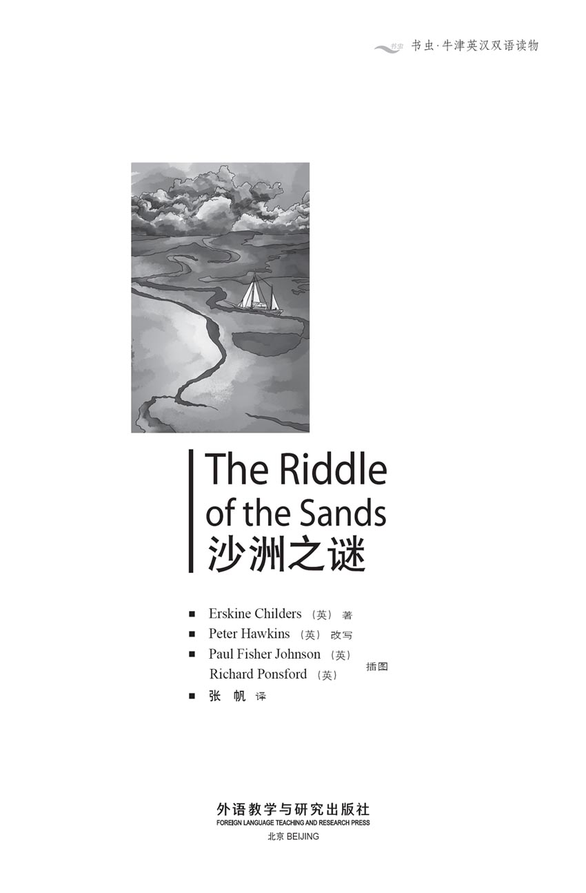
版权页
京权图字：01-2013-7828
Published by arrangement with Oxford University Press for sale in the People's Republic of China only and not for export therefrom. This edition is for sale in the mainland of China only, excluding Hong Kong SAR, Macao SAR and Taiwan.
© Oxford University Press 2008
Oxford is a registered trademark of Oxford University Press
图书在版编目（CIP）数据
沙洲之谜：英汉对照／（英）奇尔德斯（Childers, E.）著；（英）霍金斯（Hawkins, P.）改写；张帆译．—北京：外语教学与研究出版社，2014.5
（书虫·牛津英汉双语读物）
书名原文：The riddle of the sands
ISBN 978-7-5135-4447-4
Ⅰ．①沙… Ⅱ．①奇… ②霍… ③张… Ⅲ．①英语－汉语－对照读物 ②长篇小说－英国－现代 Ⅳ．①H319.4：I
中国版本图书馆CIP数据核字（2014）第091626号
地图审图号：GS（2013）2639号
出版人 蔡剑峰
责任编辑 金 辉
封面设计 蔡 颖
出版发行 外语教学与研究出版社
社 址 北京市西三环北路19号（100089）
网 址 http://www.fltrp.com
版 次 2014年5月第1版
书 号 ISBN 978-7-5135-4447-4
凡侵权、盗版书籍线索，请联系我社法律事务部
举报电话：（010）88817519
电子邮箱：banquan@fltrp.com
法律顾问：立方律师事务所 刘旭东律师
中咨律师事务所 殷 斌律师
内容简介
内容简介
弗里西亚群岛位于荷兰和德国所属的北海沿岸。在群岛附近航行有时会有危险，尤其是在恶劣天气下，因为这里有不少沙洲，涨潮时会隐藏在浅水下面。沙洲间的航道很窄，不易察觉，而沙洲本身也会随着海风和潮汐发生改变。
年轻的阿瑟·戴维斯是个航海爱好者，他热情勇敢、技术娴熟，喜欢驾着他的“达尔茜贝拉”号游艇穿梭于这片复杂、危险的海域。戴维斯邀请他的朋友卡拉瑟斯从伦敦赶来，二人一起出海度假，可在船上待了几天之后，卡拉瑟斯才弄清此行的真正目的。看来，他们是要去解开一个谜，还要解开一个名叫多尔曼的男人身上的疑团。两个好朋友开始了调查——与此同时，他们也引来了一位德国炮艇艇长的密切关注。
故事发生在1902年，因此这段海岸的危险之处不仅仅在于沙洲。第一次世界大战的阴云不断汇聚，年复一年，慢慢地愈来愈暗……
THE RIDDLE OF THE SANDS
THE RIDDLE OF THE SANDS
The Frisian Islands lie along the North Sea coast of Holland and Germany, and sailing around these islands can be dangerous, especially in bad weather, because of the sandbanks that lie hidden beneath the shallow waters at high tide. The channels between the sandbanks are narrow and easy to miss, and the sandbanks themselves change with the wind and the tides.
Arthur Davies is young, enthusiastic, and a brave and skilful sailor, who takes great delight in sailing his yacht Dulcibella through these difficult and dangerous waters. He asks his friend Carruthers to come out from London and join him for a sailing holiday, but his reasons for doing this only become clear to Carruthers after several days on board. It seems there is a riddle to solve, and a little mystery about a man called Dollmann. The two friends begin to investigate – and the commander of a German gunboat begins to take a close interest in them.
For the year is 1902, and sandbanks are not the only danger on this coast. The gathering storm-clouds of the First World War are slowly growing darker, year by year...
目录
PEOPLE IN THIS STORY
PEOPLE IN THIS STORY
Carruthers, who tells the story
Davies, his friend, and owner of the yacht Dulcibella
Bartels, Davies' friend, and captain of the Johannes
Herr (Mr) Dollmann, owner of the Medusa
Fräulein (Miss) Clara Dollmann, his daughter
Frau (Mrs) Dollmann, Dollmann's wife and Clara's stepmother
Commander von Brüning, a German naval officer, and captain of the gunboat Blitz
Grimm, captain of the Kormoran
Böhme, an engineer from Bremen
人物表
| 卡拉瑟斯 | 叙事者 |
| 戴维斯 | 卡拉瑟斯之友，“达尔茜贝拉”号船主 |
| 巴特尔斯 | 戴维斯之友，“约翰内斯”号船长 |
| 多尔曼先生 | “美杜莎”号船主 |
| 克拉拉·多尔曼小姐 | 多尔曼先生之女 |
| 多尔曼夫人 | 多尔曼先生之妻，克拉拉的继母 |
| 冯布吕宁艇长 | 德国海军军官，炮艇“闪电”号艇长 |
| 格林 | “鸬鹚”号船长 |
| 博默 | 不来梅的工程师 |
人物表
PEOPLE IN THIS STORY
Carruthers, who tells the story
Davies, his friend, and owner of the yacht Dulcibella
Bartels, Davies' friend, and captain of the Johannes
Herr (Mr) Dollmann, owner of the Medusa
Fräulein (Miss) Clara Dollmann, his daughter
Frau (Mrs) Dollmann, Dollmann's wife and Clara's stepmother
Commander von Brüning, a German naval officer, and captain of the gunboat Blitz
Grimm, captain of the Kormoran
Böhme, an engineer from Bremen
人物表
| 卡拉瑟斯 | 叙事者 |
| 戴维斯 | 卡拉瑟斯之友，“达尔茜贝拉”号船主 |
| 巴特尔斯 | 戴维斯之友，“约翰内斯”号船长 |
| 多尔曼先生 | “美杜莎”号船主 |
| 克拉拉·多尔曼小姐 | 多尔曼先生之女 |
| 多尔曼夫人 | 多尔曼先生之妻，克拉拉的继母 |
| 冯布吕宁艇长 | 德国海军军官，炮艇“闪电”号艇长 |
| 格林 | “鸬鹚”号船长 |
| 博默 | 不来梅的工程师 |
Map: The Coasts of the North Sea in 1902
The Coasts of the North Sea in 1902

Map: From the Baltic to the Frisian Islands
From the Baltic to the Frisian Islands
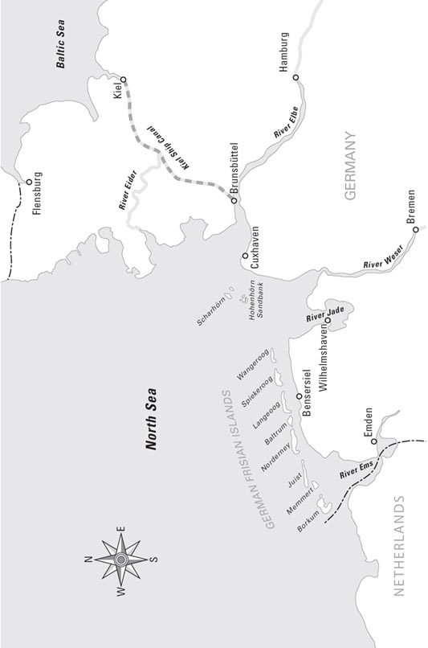
Map: Friesland and the Frisian Islands
Friesland and the Frisian Islands
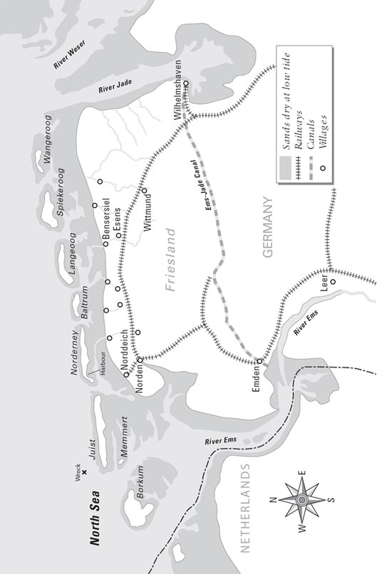
THE REASON WHY
THE REASON WHY
Why has this book been written?
In October 1902, my friend Carruthers came to my office, and told me the story of the yachting trip that he and his friend Mr Davies had recently taken in the Baltic and the North Sea.
The account of his adventures both astonished and alarmed me, and when he asked for my help in preparing this book for publication, I agreed readily. It is well known that Britain's coastal defences are dangerously weak, so the secret information discovered by Carruthers and Davies is of great importance, and I fully support their wish to make this information public.
The difficulty they had was that an Englishman, from an old and famous family, would be shown in their story to be a traitor, and this would cause pain and misery to an innocent young lady, whom they are anxious to protect. The names Carruthers and Davies, therefore, are not their real ones, and the names of all other persons in this account have also been changed.
But why publish secret information of national importance? Should it not be kept secret, known only to the government, whose job is to make good use of such information?
Indeed, that would normally be the best thing to do, but not in this case. The government, although informed of the great danger facing this country, has chosen to do nothing – and that is the reason why this book has been written.
London, 1903
traitor n. someone who does something disloyal to his country 叛国者
缘起
缘起
为什么要写这本书呢？
1902年10月，我的朋友卡拉瑟斯来到我的办公室，向我讲述了不久前他和朋友戴维斯驾驶游艇在波罗的海和北海航行的故事。
卡拉瑟斯讲述的冒险经历让我既吃惊又担忧。所以，当他请我帮他写这本书来出版时，我欣然应允。众所周知，英国薄弱的海防危机四伏，卡拉瑟斯和戴维斯发现的秘密情报因此极为重要。所以，他们想要将这一情报公之于众时，我全力支持。
麻烦之处在于，他们将在书中揭露一位出身名门世家的英国男子的叛国罪行，但这样会伤害到一位他们竭力想要保护的无辜姑娘。因此，“卡拉瑟斯”和“戴维斯”两个名字并不是真名，故事中其他人物的名字也都一一做了改动。
可是，为什么要把国家级机密情报公之于众呢？难道不该只把它局限在政府范围内，由政府来行使职责、充分利用此类情报吗？
通常情况下这的确是最佳选择，但这次不一样。英国政府明明知道国家面临严重危险，却选择了不作为。因此，我们才写了这本书。
1903年于伦敦
1．An invitation to the Baltic Sea
1
An invitation to the Baltic Sea
The letter arrived as I was dressing for dinner in my rooms in Pall Mall on the evening of 23rd September 1902. London was deserted at that time of the summer, and I had become very bored and depressed with my daily routine of work at the Foreign Office, and dinner at my club in the evening. All my friends were away enjoying themselves at country house parties, but here was I, a fashionable young man with a bright future, who knew all the best people and belonged to all the best clubs – and who was forced to remain in London because of my job.
I had encouraged my friends to believe that the Foreign Office could not manage without me during the summer, but the plain truth was that my work was neither interesting nor important. It consisted mostly of taking messages for absent officials, whose own holiday plans had upset mine.
Although my friends had sent me sympathetic letters, it was clear that I had not been greatly missed, and now, at the end of September, I realized another bitter truth. Two more days, and I would be free to start my holiday – but I had nowhere to go! The country house parties were all breaking up, and though I could always go home to Yorkshire, of course, which fashionable young man wants to spend his holiday with his own family?
I was, without doubt, extremely depressed.
So, when a letter, with a German stamp and marked 'urgent', arrived that evening, I felt a touch of interest, even excitement, as I opened it and read:
Yacht Dulcibella
Flensburg, 21st September
Dear Carruthers,
You will probably be surprised to hear from me, as it's a long time since we met. But I write in the hope that you might like to come out here and join me in a little sailing and, perhaps, duck shooting. This part of the Baltic is very beautiful and there should be plenty of ducks soon, if it gets cold enough. The friend who was with me has had to leave, and I really need someone else, as I'd like to stay out here for a while.
If you can come – and I do hope you can – send a telegram to the post office at Flensburg. I know you speak German perfectly, and that will be a great help.
Yours ever,
Arthur Davies
Then followed directions as to how to reach him, and a long list of various things for the yacht that he would like me to buy and bring out.
The letter was a turning point in my life, though I did not know it at the time. During my lonely dinner that evening I was undecided. Yachting in the Baltic in October! I must be mad even to think of it. I was used to the kind of yachting party that took place in warm summer weather, on comfortable, luxurious yachts with servants to bring meals and drinks. But what kind of yacht was the Dulcibella? Davies, I remembered, was not rich. We had been at Oxford University together and had been quite friendly, but I had not seen much of him in the three years since then. On the few occasions we had met, I found him rather dull.
His letter, too, seemed rather unpromising. His friend had left him – why? The Baltic was beautiful – yes, but what about October storms? Did I really want to spend my holidays freezing in the Baltic, with a man who was sure to bore me to death?
Two days later I was on the night ferry to Holland, with a huge pile of luggage and a ticket for Flensburg in my pocket. I'd had to go all round London to find the things that Davies wanted for the yacht, and I felt I was being generous and unselfish. Davies had said that he needed a friend, so I was doing a friend's duty and answering his call. It was just possible, of course, that I might enjoy myself as well.
The train took me east, then north, through Germany, and by ten o'clock the next evening I was standing on the station platform at Flensburg, and Davies was greeting me.
'It's awfully good of you to come.'
'Not at all. It's very good of you to ask me.'
We watched each other cautiously. Davies, in ordinary old clothes, did not look like my idea of a yachtsman. Where were the fashionable white trousers and dark blue jacket, like the ones lying neatly in my big suitcase?
'You've brought a lot of things,' said Davies, looking anxiously at my luggage.
'You asked me to get most of them,' I replied. 'I've brought you the hammer, the rope and the rubber boots you wanted. Oh, and the gun you were having repaired.'
'Oh yes! Thank you. I didn't mean those. It's that large case. You couldn't manage with just the small bag?'
'No, of course not,' I answered, puzzled.
'Well, never mind. It's not far to the dinghy,' and he bent down to pick up my luggage.
'But where are your men?' I asked.
'Oh, I never have any paid men on the Dulcibella,' he said cheerfully. 'The whole fun is doing it yourself. It's quite a small yacht, you know.'
I looked at Davies in silent horror. Then I picked up my bag, frowning. 'Come on, then,' I said.
'You'll like the Dulcibella,' said Davies, a little anxiously. 'She's very comfortable.'
Loaded down with my luggage, we made our way in the dark towards the harbour. Davies stopped at the top of some steps that disappeared into the darkness.
'The dinghy's down there,' he said. 'You go down and I'll pass the things down to you.'
The stone steps were slippery, and I had only a wet piece of rope to hold on to. I went down carefully, conscious of collecting dirt on my trousers. Near the bottom, I slid on the mud and sat down with one foot in the water.
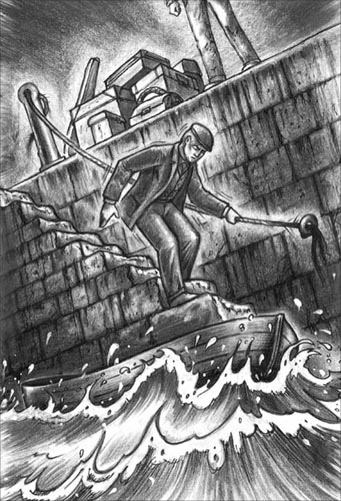
I went down carefully, conscious of collecting dirt on my trousers.
I climbed miserably into a very small boat.
'Are you ready?' called Davies from above. He passed down my large case, which almost filled the little boat. The rest of the luggage followed, making a big pile that shook dangerously every time I moved. Somehow Davies managed to climb into the boat, and started to row across the harbour.
'The yacht is a little way away,' he explained. 'I hate to be too near a town.' Then, a few minutes later, 'Look! There she is.'
In the dark, I could just see a small yacht with a light shining on its mast. Davies jumped on board, and tied up the dinghy. 'Now, pass the things up, and I'll take them,' he called.
I did as he said, thinking unhappily of the last time I had been on a yacht – the paint shining in the sun, the decks as white as snow, the men eager to help. How different from this horrible, clumsy business in the dark!
When we had finished, I climbed on board. The deck was covered with boxes and cases. Davies, who was staring at my big suitcase, suddenly seemed to wake up. 'Come on!' he said cheerfully. 'I'll show you around.'
He dived down a ladder and I followed carefully. At the bottom I turned, and hit my head on the low ceiling.
'Mind your head,' cried Davies, too late.
I looked around, and saw, by the light of an oil lamp, that I was in a tiny cabin, almost filled with a large table. On each side there was a bench-like seat, above which was a shelf holding books, maps, and so on. Through a small door beyond the table I could see an old cooker. The whole place smelled of oil, cooking, and sea water.
'You see,' said Davies. 'There's plenty of room to sit up straight.' I wondered if this was meant to be a joke, as I was bent almost double. As I sat down, my knee came into contact with a sharp edge. 'Watch out for the centreboard,' said Davies. 'She's a flat-bottomed boat, you know, good for sailing in shallow water. And in deep water you lower the centreboard. That way we can go almost anywhere.'
He disappeared up the ladder and started passing down the boxes and cases. Soon they filled the small cabin to the ceiling. I heard him trying to push my case through the doorway at the top of the ladder.
'It's no good,' he said, reappearing in the cabin. 'You'd better unpack it on deck, and drop things on to your bed.'
He lit another oil lamp, and proudly showed me the other cabin, which had two narrow beds built along the sides. 'This is where we sleep,' he said. 'I'm not sure there's enough room for all your things, though. I don't suppose you could manage without some of them?'
'No, I couldn't,' I said crossly. 'Now, if you could move out of the way, I can get out too.'
He suddenly looked miserable at the way I spoke, but, tired and depressed, I pushed past him and climbed up on deck. In the dying moonlight I opened my case and took out some of the things. The rest – the clothes I'd worn on my last yachting holiday – I put back in the case, afraid that Davies might see them. I closed the case, and sat down on it. There was only one good thing about this depressing arrival – it wasn't raining. This thought made me look round at where we were.
The water was as smooth as glass. There was not a cloud in the sky, and the bright stars were reflected in the dark water – stars above and stars below. I could see a few little white houses on one shore, and the lights of Flensburg in the distance on the other. In between, the darkness hid the open sea. Everything was quiet except for Davies moving things about in the cabin.
How it happened I do not know, but suddenly my mood changed. Perhaps it was the miserable look I had last seen on his face. Perhaps it was one of those moments of clear-sightedness that people sometimes have, when I saw my silly selfishness compared with a simple, generous nature. Or perhaps it was the air of mystery about the whole trip. I suddenly felt ashamed of myself, a fashionable young man, tired and dirty, sitting on a case that was almost as big as the 'yacht' that was to carry it, and with no idea of what I was doing there. I decided, then and there, that I was going to enjoy this strange and unexpected adventure.
'Supper's ready,' Davies called from below.
I went down the ladder, and was astonished at the change in the cabin. All the luggage had been put away, and everything looked neat and comfortable. There were glasses on the table, and the smell of hot whisky and lemon hid the earlier unpleasant smells. Davies could see from my face that I had got over my bad mood, and he was obviously happier.
We sat smoking our pipes and talking for a while, and then came the problem of going to bed in the tiny cabin. After bumping my head and elbows several times, I finally managed it and lay down between the rough blankets.
Davies, moving quickly and easily, was soon in his bed. 'It's quite comfortable, isn't it?' he said, as he blew out the light.
I felt a drop of water on my face. 'I suppose the deck's not leaking?' I said, as politely as I could.
Davies was out of bed in a moment. 'I'll just put something over it for tonight,' he said, 'and I'll fix it in the morning. I've been doing some repairs but I must have missed that bit.'
In a few minutes he was back in bed, and soon after, I fell asleep.
depressed adj. feeling very unhappy 沮丧的；消沉的；忧愁的
Foreign Office the British government office in charge of relations with foreign countries （英国）外交部
sympathetic adj. caring and feeling sorry about someone's problem 同情的
luxurious adj. very expensive, beautiful, and comfortable 奢华的
occasion n. a time when something happens 时候；场合
unpromising adj. not likely to be good or successful 不乐观的；不大会成功的
awfully adv. very 非常
dinghy n. a small open boat used for pleasure, or for taking people between a ship and the shore 小划艇
frown v. to make an angry, unhappy, or confused expression, moving your eyebrows together 皱眉
mast n. a tall pole on a ship that supports the sails 桅杆
deck n. the floor of a ship 甲板
clumsy adj. large and heavy 笨重的
cabin n. a room on a ship 船舱
doorway n. the space where a door opens into a room or building 门口
crossly adv. angrily 愠怒地
mood n. the way you feel at a particular time 心情；情绪
unexpected adj. surprising 意外的；突然的
bump v. to hit or knock against something 撞
波罗的海之约
1
波罗的海之约
1902年9月23日傍晚，这封信送达我在蓓尔美尔街的寓所时，我正在房间里更衣准备吃晚饭。夏天的这个时候伦敦基本没什么人，我白天去外交部上班，晚上在俱乐部吃晚饭，程式化的日子过得我无聊又沮丧。我的朋友都离开伦敦去了乡间别墅，在各种聚会上寻欢作乐；而我，一个认识各界精英、跻身全部顶级俱乐部、前程似锦的时髦小伙子，却被迫因为工作留在伦敦。
我让朋友们以为夏天这段时间外交部离不了我，可事实却再明显不过：我的工作既没意思，也不重要。我的主要职责是替休假的官员传口信，正是他们的各种度假计划让我自己的假期泡了汤。
尽管朋友们纷纷来信向我表示同情，但很明显他们并不怎么想念我。而现在，9月底到了，我又意识到另一个惨淡的事实：再过两天，我就能得空儿开始休假了——可我却没地方去！所有的乡间聚会都要结束了。当然了，不论怎样我总还可以回老家约克郡去，可哪个时髦的年轻人愿意跟自家人一起度假？
不用说，我郁闷极了。
因此，那天傍晚，当一封贴着德国邮票的“急件”送来时，我感到一丝好奇，甚至是兴奋，于是拆开信读了起来：
“达尔茜贝拉”号游艇
弗伦斯堡，9月21日
亲爱的卡拉瑟斯：
收到我的信你大概很惊讶，因为我们已经很久没见面了。不过，此番去信是希望你能过来跟我一起驾着游艇兜兜风，没准还能打打野鸭。波罗的海的这一带景色很美，而且如果天气变得够冷的话，很快就会有不少野鸭。之前跟我一起的朋友有事得离开，我真的需要再有个人陪我，因为我想在这儿多待一阵再回去。
如果你能来——我非常希望你能来——请往弗伦斯堡的邮局拍个电报。我知道你德语讲得很好，这一点能帮上大忙。
你永远的，
阿瑟·戴维斯
接下来是说明，告诉我怎样找到他，还列了一长串游艇上要用的东西，要我买好带给他。
这封信是我人生的一个转折点，尽管那时我并不知道。那晚我孤单地吃着晚餐，感到犹豫不决。10月份驾游艇在波罗的海航行！想想都觉得疯狂。我所习惯的游艇聚会是在温暖的夏日，在舒适、豪华的游艇上，吃喝都有仆人侍候。可“达尔茜贝拉”号是一艘怎样的游艇呢？我印象中，戴维斯可不富裕。我们一起读牛津大学，关系还算不错，但毕业后的三年中我就没怎么见过他了。少有的几次见面，我也觉得他挺无趣的。
他的信读起来也不怎么靠谱儿。他的朋友走了——为什么？波罗的海景色很美——这倒没错儿，可10月里的风暴呢？难道我真想在波罗的海上度过一个瑟瑟发抖的假期，而且是跟这么一个肯定会让我无聊死的男人一起？
两天后，我坐在开往荷兰的夜班渡轮上，带着一大堆行李，口袋里揣着一张去弗伦斯堡的车票。我不得不跑遍了整个伦敦才买齐戴维斯游艇上要用的东西，我觉得自己真是慷慨无私。戴维斯说过他需要一个朋友，我便尽朋友的本分去赴他的约。当然了，说不定我自己也会挺开心的。
火车先向东，再向北，载着我穿过德国的土地。第二天晚上10点，我站在了弗伦斯堡站的月台上，戴维斯正在那里迎接我。
“你能来真是太好了。”
“哪里哪里，谢谢你请我来。”
我们小心翼翼地打量着对方。戴维斯穿着寻常的旧衣服，和我想象中游艇主人的样子相去甚远。时髦的白色裤子和深蓝色上衣哪儿去了？我的大手提箱里可是整整齐齐放着一套呢。
“你带的东西可真不少啊。”戴维斯有些不安地看着我的行李说。
“大部分都是你让我带的。”我回答道，“我拿来了你要的锤子、绳子和橡胶靴。对了，还有你送去修的枪。”
“噢，对呀！谢谢你。不过我指的不是那些东西，是这个大箱子。你只带那个小包不行吗？”
“不行啊，当然不行了。”我疑惑地答道。
“好啦，没关系。反正这儿离小艇也不远。”他说着，俯身拎起我的行李。
“可是，你的伙计们呢？”
“哦，‘达尔茜贝拉’号从没雇过伙计。”他轻快地说，“最大的乐趣就在于自己动手。再说这游艇挺小的。”
我震惊了，默不作声地看了看他，然后皱着眉头拎起旅行包。“那咱们走吧。”我说。
“你会喜欢‘达尔茜贝拉’号的。”戴维斯听上去有些忐忑，“这船可舒服了。”
我们把行李搬下车，在黑暗中朝港口走去。戴维斯在一段台阶上方停下来，台阶下面一片漆黑。
“小艇就在下面。”他说，“你下去，我把东西递给你。”
石阶很滑，只有一条湿漉漉的绳子当扶手。我小心地往下走，生怕弄脏了裤子。快走到底时，我被脚下的泥滑了一下，跌坐在台阶上，一只脚踩进了水里。
我狼狈地爬上一条小小的船。
“好了吗？”戴维斯在上面喊道。他把我的大箱子递下来，整条船差不多就满了。接着是其他行李，在船上堆成了一大堆，我一动就摇摇欲坠。不过戴维斯勉勉强强挤上了船，开始向港口另一边划去。
“游艇离这儿还有一小段距离。”他解释道，“我不喜欢离城市太近。”几分钟之后，他喊道：“看！它在那儿！”
在黑暗中，我只能隐约看到一艘小游艇，桅杆上亮着一盏灯。戴维斯跳上甲板，把小艇系好。“喏，把东西递上来吧，我接着。”他喊道。
我一边照做，一边郁郁寡欢地回想我上一次乘游艇的情景——阳光下闪闪发亮的油漆，雪白的甲板，殷勤的仆人。跟这番黑灯瞎火的狼狈劲儿相比，真是天壤之别！
搬完行李，我也爬上了游艇。甲板上摆满了盒子和箱子，戴维斯正盯着我的大手提箱看。突然，他像惊醒了似的，欢快地说：“来吧！我带你四处转转。”
他健步走下一架梯子，我小心地跟在后面。下到底部，我一转身，头撞在了低矮的天花板上。
“小心头！”戴维斯叫道，可是已经晚了。
我朝四下看去，借着一盏油灯的光亮，发现自己站在一间小小的船舱里，一张大桌子几乎占去了全部空间。桌子的四面各有一个条凳式的座位，上方是放书籍、地图等物品的架子。透过桌子另一头儿的小门，能看到一个破旧的炉灶。整个船舱散发着油烟、饭菜和海水的味道。
“你看，”戴维斯说，“地方挺大的，还能坐直呢。”我怀疑他这是句玩笑话，因为我都快要弓着身子了。我坐下时，膝盖碰到了一处尖尖的棱角。“小心点儿中插板。”戴维斯说，“你知道，这是艘平底游艇，适合在浅水航行。到了深水就把中插板放低，这样我们就几乎哪儿都能去了。”
他顺着梯子爬上甲板，开始把盒子和箱子往下递，小小的船舱很快就塞满了，一直顶到天花板。我听见他设法把我的手提箱从梯子顶端的入口推进来。
“不行啊。”他回到船舱里，“你还是在甲板上把箱子打开，把东西丢到你床上吧。”
他点起另一盏油灯，得意地给我看另一间船舱，船舱两侧各搭着一张窄窄的床。“这是我们睡觉的地方。”他说，“不过我不敢说这里有足够地方放你的东西。我看这些东西你都得用吧？”
“对，都得用。”我没好气地说，“喂，你靠边点儿，我就也能出去了。”
听到我这样说话，他突然流露出难受的表情。可我当时又累又沮丧，还是从他身边挤过去，爬上了甲板。在越来越暗淡的月光下，我打开手提箱，拿了些东西出来。剩下的——也就是我上次在游艇上度假穿的衣服——被我放回了箱子，以免让戴维斯看到。我合上箱子，坐在上面。这倒霉的第一晚，只有一件好事——天没下雨。想到这里，我环顾四周，看看我们身处何方。
水面光滑如镜，夜空万里无云，明亮的星星倒映在漆黑的水中——天上繁星点点，水中点点繁星。一边的岸上能看到几座白色的小房子。另一边能看到远处弗伦斯堡的灯光。两岸之间的海面被黑暗笼罩着。一切都那么寂静，只听到戴维斯在船舱里挪动东西的声响。
不知怎么，我的心情突然起了变化。可能是因为刚才戴维斯脸上那悲伤的神情；可能是因为对比他单纯、宽厚的性情，我看到了自己的愚蠢和自私——人有时候就是会突然看透一些事情；还可能是因为这次旅行透着的神秘气氛。我突然替自己感到羞耻，一个时髦的小伙子，坐在一只跟他脚下“游艇”差不多大的手提箱上，又累又脏，完全不知道自己为何而来。就在彼时彼地，我决定要享受这次从天而降的奇特冒险。
“晚饭好了。”戴维斯在下面叫道。
我走下梯子，惊讶地看到船舱里变了样。所有行李都收起来了，一切看上去整洁而舒适。桌上放着玻璃杯，热威士忌酸酒的味道掩盖了之前难闻的气味。戴维斯从我脸上看出我已经走出了坏情绪，他也明显开心了些。
我们坐在那里，抽着烟斗说了会儿话，接下来的问题就是如何在这狭小的船舱里过夜。我的头和胳膊肘挨了好几下撞，总算钻进粗糙的毯子，躺了下来。
戴维斯的动作则敏捷轻巧，很快就在床上躺下了。“还挺舒服的，是吧？”他边说边吹熄了灯。
我感到一滴水落在脸上。“该不会是甲板漏水了吧？”我尽可能礼貌地问。
戴维斯立刻下了床。“今晚先盖上点东西凑合一下，”他说，“明早我就把它修好。我最近一直在修修补补，那块地方肯定是被漏掉了。”
几分钟之后他回到了床上，接着我很快就睡着了。
2．A different kind of sailing
2
A different kind of sailing
After a restless night in my uncomfortable bed, I was woken next morning by water pouring down on top of me. I sat up suddenly and hit my head on the ceiling.
'Sorry!' cried Davies cheerfully from above. 'I'm washing the deck. Come up and swim. Slept well?'
'Quite well,' I replied crossly, and stepped out of bed into a pool of water. But I went up on deck and, diving over the side, buried my stiffness and bad temper in the loveliest fiord of the lovely Baltic.
I climbed back on board, and while I was getting dressed on deck, I examined the Dulcibella. She seemed very small but was, in fact, ten metres long and three metres wide. She looked large enough for sailing weekends close to the shore, but I could not imagine how she had made the journey from England to the Baltic. She was not a beautiful boat, either, sitting low in the water, and with a very tall mast. But in spite of her plainness, she looked very solid and safe, and I was grateful for that.
Davies cooked a surprisingly good breakfast, better than my London cook ever managed. As soon as we had washed the dishes, he said, 'There's a good wind. Let's sail down the fiord,' and disappeared up on deck. I joined him there, trying to be of use, but he did not need me, or even notice me. He seemed to be everywhere at once, raising the sail, pulling on ropes, and steering the yacht, all at the same time. Soon the Dulcibella was turning away from the shore and sailing towards the open fiord.
I sat on deck, lazily watching the green fields and little white houses pass slowly by. With the clear blue sky, and the sun shining on the water, it was a beautiful view. I looked round at Davies. He had one brown arm on the helm, and seemed lost in his thoughts. For a moment I studied his face more closely than I had ever done before. I had never considered him worth spending much of my valuable time on, as I had always thought him very ordinary. Now I was beginning to see how wrong I had been. In that calm face I saw honesty, and bravery. Above all, he was sincere. I began to wonder how often I had misjudged other people in the past; I had always been so confident of choosing the right men to know.
Suddenly Davies threw me the chart. 'Just tell me which side of the buoy we should pass, will you?' he said. I looked in horror at the black marks on the paper, which meant nothing to me.
Soon he said, 'Never mind, I expect it's all deep water round here.'
In a minute we were passing the buoy, probably on the wrong side, since sand could clearly be seen below us. Then there was a loud unpleasant noise under the boat, and the Dulcibella ran aground.
With a little effort we managed to push her off the sandbank, but I felt horribly guilty, and apologized to Davies.
'You must remember I'm a complete fool when it comes to sailing,' I said. 'You'll have a lot to teach me. I've only ever sailed with a crew to do all the actual work.'
'Crew!' said Davies, shocked. 'Why, the whole fun of the thing is to do everything yourself.'
'Well, I've felt all morning that I'm no use to you.'
'I'm awfully sorry! But it's just the opposite – you may be all the use in the world when...' He did not finish, and became lost in his thoughts again.
That night we anchored in calm water in the shelter of the shore, and after supper I asked Davies to tell me about his voyage from England. He spread his charts on the table, and took his logbook from the shelf.
'There's not really much to tell,' he began. 'My friend Morrison and I left Dover on 6th August, and sailed to Ostend, and up the Dutch coast. Then we travelled through Holland by river and canal to Rotterdam, on to Amsterdam, and back into the North Sea. We sailed round the Zuyder Zee, then north to the Frisian Islands. Look, they stretch for a hundred and ninety kilometres from west to east, along the Dutch and German coast.'
He suddenly became enthusiastic. 'Look at this,' he said, pointing to an area covered with little black marks on the chart. 'It's all sand between the islands and the coast. There are channels through the sands but they're all wrong on the charts because the sands keep moving all the time. It's a wonderful place for sailing – no towns or harbours, just a few villages with a shop where you can get food. The islands themselves are really just big sandbanks, you see.'
'Isn't it rather dangerous sailing there?' I asked.
'Not if you know what you're doing,' he replied. 'The Dulcibella can sail in very shallow water. Of course, you can't help running aground sometimes. At high tide those sandbanks are all hidden – everything looks the same.'
'Didn't you ever take a pilot?' I asked.
'Pilot? Well, yes, I did take one once.'
'And what happened? '
'Oh! I ran aground, of course. It was stupid of me to follow him. I wonder what the weather's doing.' He climbed quickly up on deck.
'Rain coming,' he said, on his return. 'And possibly wind. But we're safe enough here. Time for bed, I think.'
'You haven't finished your story yet,' I said.
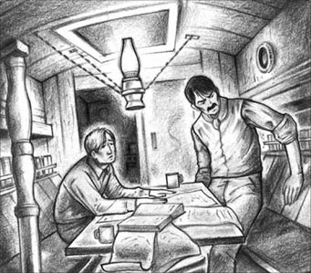
'You haven't finished your story yet,' I said.
'Well, Morrison had to leave me when we got to Terschelling, the third island. I followed the Dutch islands eastwards to Borkum, the first of the German islands.'
'When was that?' I asked.
'About the 9th of September.'
'That's only two weeks before you wrote to me,' I said. 'You were quick getting to Flensburg.'
'Yes. I went to Norderney, the third German island, but then decided to go straight for the Baltic. So I sailed to the Eider River, took the canal to Kiel on the Baltic, then turned north for Flensburg. I was a week there, getting repairs done, and then you came, and here we are. And now we really must go to bed. We'll have a fine sail tomorrow.'
He ended with rather forced cheerfulness, and quickly rolled up the chart. He had cut short the description of the last part of his journey. Why, I wondered? Perhaps he did not want me to realize how dangerous a voyage it had been. Whatever the reason, there was some mystery about it, and I wanted to know more.
'Tell me about the passage to the Eider River,' I said. 'That was rather a long one, wasn't it?'
'About a hundred and twelve kilometres, I suppose.'
'Didn't you stop anywhere?'
'Only once. I took shelter behind one of the sandbanks one night. Oh,' he added, 'I didn't fix that hole in the deck above your bed. I'd better do that before the rain comes. You go to bed.'
He disappeared. While I prepared for bed, I wondered again what he was hiding from me. I heard hammering above my head, and then he reappeared and got into bed.
'I say, do you think you'll like this sort of thing?' he said.
'If the scenery's as beautiful as it was today, I shall.'
'Ah, yes! The scenery,' he said quietly. 'You must think I'm odd, liking the Frisian Islands so much. How would you like sailing among those sandbanks?'
'I should hate it,' I replied, sleepily. 'Did you ever see another yacht there?'
'Only one,' he said. 'Good night.'
'Good night.'
Early next day, we raised the sails and the Dulcibella made her way into the fiord, where the wind was blowing the sea into short sharp waves, and I began to enjoy my first day of real sailing.
Again that night, we turned back to the shore, where we anchored. Among the trees, only a hundred metres away, we could see a little monument. We took the dinghy to investigate. It was a monument to those who had died in the war between Germany and Denmark, when the area became German. It was very simple, but, in the moonlight and the peace of the evening, it was very moving too.
'Germany's a great nation,' said Davies quietly. 'I wonder if we shall ever have to fight her.'
During supper we talked about war, and especially war at sea. This was Davies's hobby and he knew a lot about it. When he took a book from the shelf, I saw that his books were all about war at sea, or sailing in small boats.
Looking at the books reminded me that I wanted to read his log-book, so, while Davies was washing the dishes, I took it down and began to read. There was much detailed description of winds, tides, and distances travelled each day. I turned to the later part, about his voyage to the Baltic. The log-book reached the 9th September, then the next page jumped to the 13th, and described the following three days with only the most basic details:
13th Sept. Decided to go to the Baltic. Sailed 4.00 a.m.
Fair west-north-west wind. Anchored for night in the shelter of Hohenhörn sandbank.
14th Sept. Nothing.
15th Sept. East wind. West by south 6 km, north-east by north 24 km. Arrived Eider River 11.30.
I then noticed a page had been torn out of the book, between the 9th and 13th, and realized that the entries from the 13th to the 15th had all been written at the same time. Clearly, the log-book had been changed after the event – but why? And what event?
I decided not to ask Davies about it, feeling unwilling to force a confession from him. After all, I thought, it was probably nothing of any great importance.
Before going to bed, we went up on deck and stood, listening to the wind in the trees. 'The wind is sure to move round to the north soon,' said Davies. 'I asked some fishermen about duck shooting, and they said the best place would be Schlei Fiord. That's about twenty kilometres south, on the way to Kiel. We need a north wind for that.'
'I don't mind where we go,' I said.
'You mean anywhere in the Baltic?' asked Davies.
'Yes. Anywhere round here,' I said. We stood for a while, looking at the moonlight on the water. Then we went below.
I had told Davies that I wanted to learn to sail the yacht in all sorts of weather, so he made me work hard for the next two days. I learnt how to steer the yacht in a high wind, when to take the sails in, when to let them out, how to deal with the little storms that blew up the fiords. I learnt to work with ropes that were wet and stiff, and to tell the depth of water by using the lead line.
On the second day, I heard the sound of ducks and, looking up, I saw about twenty of them, flying in a V-shape across our path. 'You see,' I cried. 'There are ducks here.'
'Yes,' Davies said doubtfully, 'but I've heard it's difficult to get permission to shoot them here.' He paused, then without looking at me, he added, 'If we were in the North Sea, among the Frisian Islands, we wouldn't need permission.'
'You surely don't want to leave the Baltic?' I cried.
'Why not?' he asked.
'But, be sensible, man,' I said crossly. 'It's almost October, the summer's over, and the good weather's finished. Every yacht like ours is back in harbour for the winter. We've had the good luck to find these lovely fiords to sail in, and we've just seen there are ducks here. Why on earth make a long and dangerous voyage back to those islands in the North Sea?'
'It wouldn't be very dangerous,' he replied.
'But what for? What's the point...?' I was beginning to lose my patience, and was about to say something that would have ended our holiday there and then, but Davies spoke first.
'I'm sorry, old man,' he said with a smile. 'I'm being awfully selfish. You've been a real friend coming all this way to join me. Let's get to Schlei Fiord and ask about the ducks. We must be almost there.'
We soon found the narrow entrance to the fiord and the pilot's little white house, where the fishermen had told Davies to ask about duck shooting. The pilot was very helpful, and told us the best places to look for ducks.
Davies and I were friends again by the time we returned to the Dulcibella, and all thoughts of going to the Frisian Islands seemed forgotten. I went to bed, hoping for the chance of some duck shooting the next day, and expecting no more excitement than a sudden fierce storm blowing up the fiord. I had no way of knowing that my autumn holiday was about to turn into a very different kind of experience.
restless adj. without real rest or sleep 没有睡眠的
fiord n. a long narrow strip of sea between high cliffs 峡湾
steer v. to control the direction in which a vehicle is going 驾驶（车、船等）
helm n. a handle or wheel used for steering a ship （船的）舵轮
buoy n. an object that floats on the sea and marks the places where boats can or cannot go 浮标
pilot n. a person whose job is to guide ships through a difficult piece of water 引航员
odd adj. different from what is normal or expected 古怪的
detailed adj. containing or including a lot of information or details 详细的
entry n. a piece of writing in a diary or a dictionary （日记的）一则；（词典的）条目
confession n. a statement that you have done something 承认；坦白
lead line a line with a heavy weight at the end, used to measure the depth of water （测量水深的）水砣绳，测深绳
sensible adj. reasonable, practical, and showing good judgment 明智的
不一样的航行
2
不一样的航行
由于床不舒服，我一夜没睡好，第二天一早被水劈头盖脸地浇醒。我猛地坐起身来，头撞到了天花板。
“对不起！”头顶传来戴维斯欢快的喊声，“我在冲洗甲板。上来游泳吧！睡得好吗？”
“还不错。”我闷闷不乐地回答，一下床就踩到一滩水。但我还是走上甲板，跃过船舷跳入美丽的波罗的海，在这片最美的峡湾里舒展僵硬的四肢，洗掉坏情绪。
接着我爬回船上，一边在甲板上穿衣服，一边仔细观察“达尔茜贝拉”号。这艘游艇虽然看起来很小，但实际上也有10米长、3米宽，这样大小的船在近岸水域来个周末游足够了。可我想象不出它怎么能从英国航行到波罗的海。它也算不上漂亮，因为吃水深，桅杆又很高。但让我庆幸的是，尽管它外表平平，看起来却很结实、很安全。
戴维斯做的早餐出乎意料地好吃，我在伦敦的厨子从没达到这水平。我们刚洗完碗碟，他便说：“今天风不错。咱们开着船往峡湾下游走走吧。”说完就爬到甲板上去了。我也跟了上去，想帮帮忙，可他不需要我，甚至都注意不到我的存在。他就像会分身术似的，升起风帆，拉紧绳索，掌握方向。很快，“达尔茜贝拉”号就掉头离开岸边，朝峡湾外驶去。
我懒洋洋地坐在甲板上，绿色的田野和白色的小房子缓缓从眼前掠过，加上晴朗的蓝天和水面的点点阳光，真是一幅优美的画面。我又回头看看戴维斯，他一只黝黑的胳膊搭在舵轮上，似乎沉浸在自己的思绪中。我观察了一会儿他的脸，比之前任何时候看得都仔细。以前我一直觉得他是个很平凡的人，不值得在他身上花费我宝贵的时间。现在，我才意识到自己之前的看法有多么荒谬。在他平静的脸上，我看到了正直和勇气。最重要的是，他很真诚。我开始扪心自问，之前我有多少次错看了别人，还洋洋自得地认为自己很会交朋友。
戴维斯突然把海图抛给我：“能告诉我咱们该走浮标的哪一边吗？”我惊恐地看着图上的黑色标记，什么都看不懂。
他马上说道：“没关系啦，我估计这附近都是深水。”
我们很快就驶过了浮标，但水下能清楚地看到沙子，大概是走错方向了。接着，随着船底一声刺耳的巨响，“达尔茜贝拉”号搁浅了。
我们费了点儿劲，把船推离了沙洲。我感到愧疚极了，向戴维斯道起歉来。
“要知道，我在航海方面是个十足的白痴。”我说道，“很多东西等着你教我呢。之前出海，实际的事情都是由船员做的。”
“由船员来做！”戴维斯惊讶地说，“怎么能这样！航海的乐趣全在于自己动手呀！”
“唉，整个早上我都觉得自己完全帮不上忙。”
“都是我不好！不过事实正相反——你会帮上大忙的，等到……”他话没说完，又陷入了沉思。
当晚，我们停泊在风平浪静的岸边。晚饭后，我让戴维斯讲讲他是怎样从英格兰一路航行过来的。他在桌上铺开海图，又从架子上取下航海日志。
“其实也没有太多可讲的。”他打开了话匣子，“8月6号我和朋友莫里森从多佛尔起航，驶到奥斯坦德，再沿着荷兰的海岸向北航行。接着，我们驶入荷兰内陆，沿河流和运河到达鹿特丹，再到阿姆斯特丹，然后折返北海。之后我们经过须得海，向北到达弗里西亚群岛。看，这片群岛沿着荷兰和德国的海岸线展开，东西有190公里长。”
他突然来了兴致。“看这个，”他指着海图上一块画满小黑点的地方说，“这儿的岛屿和海岸之间全是沙洲。沙洲之间有航道，但海图上标的都不对，因为沙洲一直在不停移动。这是个航行的好地方——没有城市，没有海港，只有一些小村庄，你可以在村里的商店买到食物。其实，这些岛屿本身也不过是大一点的沙洲罢了。”
“在那儿航行不会很危险吗？”我问。
“只要保持警惕就没事儿。”他回答，“‘达尔茜贝拉’号能在非常浅的水域行驶。当然，有时也难免会搁浅。涨潮时沙洲都藏在水下——看不出什么区别。”
“你从没请过引航员吗？”我问。
“引航员？嗯，请过，还真请过一次。”
“结果如何？”
“噢！当然是搁浅了。我真傻，竟然跟着他。不知道现在天气怎么样。”他迅速爬到甲板上去了。
“要下雨了。”他一回来就说，“很可能还会刮风。不过我们在这儿很安全。我看该睡觉了吧。”
“你的故事还没讲完呢。”我说。
“唔，我们到达第三座岛屿泰尔斯海灵后，莫里森得走了。我又沿着荷属岛屿向东航行，直到第一座德属岛屿博尔库姆。”
“那是什么时候？”我问。
“9月9号左右。”
“那就是你给我写信的两星期前。”我说，“你到弗伦斯堡用的时间很短呀。”
“是啊。我去了诺德奈岛，德属岛屿里的第三座，但后来又决定直接到波罗的海来。于是我航行到艾德河，经运河到达波罗的海旁的基尔，再掉头往北，向弗伦斯堡进发。我在那儿待了一星期，做些修补工作，然后你就来了，之后咱们就到了这儿。现在真的该睡觉了，明天咱们出海好好兜兜风。”
他说完，匆匆卷起海图，很有几分强颜欢笑的感觉。最后这段航程他描述得很简短。为什么呢？我思忖着。也许他不想让我意识到这次航行有多么危险。不管什么原因，其中肯定有秘密，我想弄个清楚。
“给我讲讲通往艾德河的那条航道吧。”我说，“那段航程挺长的，是吧？”
“我想大概有112公里。”
“你中途停下来过吗？”
“只停过一次。在一座沙洲的背风处躲了一夜。哎呀，”他话头一转，“你床上方甲板的那个洞我还没修，还是在下雨前赶紧修好吧。你先去睡。”
他说完就走了出去。我一边准备上床睡觉，一边又思忖起他对我隐瞒着什么。头顶上方传来锤子的敲打声，接着他便回到船舱，躺了下来。
“喂，你说你会喜欢这种航海旅行吗？”他问。
“只要风景像今天一样美，我会喜欢的。”
“啊，是呀！还有风景呢。”他轻声说道，“你肯定觉得我很奇怪，竟然那么喜欢弗里西亚群岛。要是在那些沙洲之间航行，你愿意吗？”
“我估计不愿意。”我昏昏欲睡地回答，“你在那儿还看到过其他游艇吗？”
“只看到过一艘。”他答道，“晚安。”
“晚安。”
第二天一大早，我们升起风帆，驾着“达尔茜贝拉”号向峡湾驶去。看着峡湾里的海水被风吹起一道道分明的小波浪，我开始享受起这第一天真正意义上的航行。
当天夜里，我们又回到岸边，抛锚停泊。就在100米开外的树丛里，我们看到一座小纪念碑，便乘着小船去探个究竟。原来，这是座纪念德丹战争死难者的纪念碑，这片地区就是在那时候归属德国的。在夜晚静谧的月光下，这简单的纪念碑竟也十分触人心弦。
“德国是个强大的国家。”戴维斯轻轻说道，“不知道有一天咱们是不是得和它交战。”
晚饭时我们谈起战争，谈得最多的是海战。这正是戴维斯的兴趣所在，他这方面知识甚是丰富。他从架子上拿一本书下来时，我发现他所有的书要么是关于海战的，要么是关于小型船只航行的。
这些书提醒了我，我还想看看他的航海日志。于是趁戴维斯洗碗的时候，我便把日志取下来读。日志里有大量关于风向、潮汐、每日航行里程的详细描述。我把本子翻到后半部分，就是戴维斯来波罗的海那一段。我看到了9月9日的记录，可下一页就跳到了9月13日，而且接下来三天的记录只有最简单的一些信息。
9月13日。决定去波罗的海。凌晨4点起航。
顺风，风向西北偏西。在霍恩霍恩沙洲抛锚过夜。
9月14日。无。
9月15日。东风。向正西偏南方向航行6公里，再向东北偏北方向航行24公里。11点半到达艾德河。
这时，我注意到9日到13日之间有一页被撕掉了，而且13日到15日的内容是一次写下的。显然，航海日志在某一事件发生之后被修改了——可是为什么呢？究竟是什么事呢？
我不愿逼戴维斯坦白什么，所以决定不问他这件事。而且我想，毕竟不会是什么大事吧。
睡觉前，我们走上甲板，站在那里听树梢间的风声。“风向肯定快要转北了。”戴维斯说，“我问过一些渔民打野鸭的事，他们说最好的地方是施莱湾，就在南边20公里左右，去基尔的路上。咱们等北风起了才能动身去那儿。”
“去哪儿都行，我不介意。”我说。
“你的意思是波罗的海的任何地方吗？”戴维斯问。
“是。这附近的任何地方。”我答道。我们望着水面上的月光，站了一会儿，然后就下舱去了。
我跟戴维斯说我想学会在各种天气状况下驾驶游艇，于是接下来的两天，他便要我努力练习。我学会了如何在疾风中操纵游艇，何时收帆，何时起帆，如何应对峡湾里的小型风暴，还学会了如何和又湿又硬的绳索打交道，如何用水砣绳测量水深。
就在第二天，我听到了野鸭的声音。抬头一看，只见大约20只野鸭正排成人字形从我们上方飞过。“你看！”我叫道，“这里有野鸭！”
“对，”戴维斯迟疑着说，“但我听说在这儿很难得到打野鸭的许可。”他顿了顿，然后看也不看我，补充道：“咱们要是在北海，在弗里西亚群岛中间，就不用许可了。”
“你不是想离开波罗的海吧？”我叫道。
“有何不可呢？”他问。
“可是你得理智点儿，老兄。”我有些恼了，“都快10月了，夏天过去了，好天气都结束了。像咱们这样的游艇都回到港口准备过冬了。咱们运气好，能找到这么漂亮的峡湾出海兜风，刚才还在这儿看到了野鸭。干吗要回北海那些岛去呢？路又远，又危险。”
“不会很危险的。”他回答。
“可是去那儿干吗？有什么意义……”我渐渐失去了耐心，再说下去，我们的旅行肯定登时就杀青完戏了。还好戴维斯先开了口。
“对不起，老兄，”他微笑着说，“是我太自私了。你大老远跑来陪我，只有真正的朋友才做得到。咱们去施莱湾问问打野鸭的事儿吧，肯定也快到那儿了。”
我们很快找到了峡湾狭窄的入口，还有引航员的白色小房子。渔民们之前就是让戴维斯来这里打听打野鸭的事儿的。引航员很热心，告诉了我们找野鸭的最佳地点。
回到“达尔茜贝拉”号时，我和戴维斯已经重归于好，去弗里西亚群岛的一切念头似乎都被打消了。我怀着第二天打野鸭的希望上了床，生怕峡湾会突然刮起猛烈的风暴。那时我全然不知，我的这次秋季旅行很快就要变成一场别开生面的冒险。
3．The missing page in the log-book
3
The missing page in the log-book
Next morning, we found the Dulcibella wrapped in thick fog, which meant, of course, that nothing could be done until it lifted. After breakfast, we heard someone on deck, and a short, grey-haired man appeared in the cabin doorway.
'Bartels!' cried Davies. 'Was that the Johannes that I heard arrive last night? Have some coffee.' He spoke in his very poor German. 'This is my friend, Carruthers. Captain Bartels of the Johannes,' he added to me, and went to make some coffee.
Bartels said quietly to me, 'It is good for Captain Davies to have a friend with him. He is a fine young man, but he is too brave, he takes too many risks.'
'Where did you meet?' I asked, interested.
'In an ugly place, in ugly weather,' he replied, very seriously. 'Has he not told you?'
Here it was again, the suggestion of some mystery, some dangerous event that I did not know about. I decided there and then to ask Davies to tell me the truth.
Just then he came back. 'Bartels helped me out of a bit of trouble in the North Sea, didn't you, Bartels?'
'It was nothing,' said Bartels. 'But I've told you before, Captain, the North Sea is no place for your little boat at this time of the year.'
He drank his coffee, and before he went, he advised Davies in a fatherly way to think again about going home before the winter began. Davies went with him back to his own boat, but returned at once, and sat down opposite me in the cabin. I think he knew what was coming.
'What did he mean?' I asked.
'I'll tell you,' said Davies. 'I'll tell you the whole thing. It's a kind of confession, I suppose. It's been worrying me a lot, and perhaps you'll be able to help me. But it's for you to decide.' He paused for a second. 'Something happened when I was in the Frisian Islands that I haven't told you about.'
'It began near Norderney,' I said. 'About the 9th of September.'
'How did you guess that?' he asked in surprise.
'You're not very good at hiding things,' I replied. 'Go on.'
'Well, you're right. Norderney. I'd been asking the local people about ducks, and they told me I should ask a German called Dollmann, with a big yacht, who did a lot of shooting. On the 9th of September I came across his yacht, the Medusa. She was very big, very smart too – new paint, and a crew in uniform. I decided to go and speak to him.'
'Just a minute,' I said. 'Let's have a look at the chart.'
'Here's Norderney,' he said, spreading out the chart. 'There's a harbour at the west end of the island, the only real harbour on the islands. The Medusa was anchored near it and I rowed over after dinner, and was taken to the main cabin. It was very grand. Dollmann was finishing dinner.'
'What was he like?' I asked.
'About fifty, tall and thin, with grey hair and a short grey beard,' replied Davies. 'I asked about the duck shooting, and he said that there was none at all. But he wanted to know all about me and what I was doing there. We talked for a long time and he was quite friendly when I left. I intended to sail on eastwards next day, but Dollmann came to visit me on the Dulcibella, and then invited me to dinner on the Medusa a couple of times. In the end I stayed three more days anchored at Norderney.'
'How did you spend your time?' I asked.
'Well, we talked, and – er – I met his daughter two or three times. I hadn't seen her that first evening.'
'What was she like?' I asked.
'Oh! A very nice girl,' he replied, turning a little pink. 'Finally, we left Norderney together. Dollmann said the Baltic would be better for duck shooting. We agreed to sail together as far as Cuxhaven. He was sailing to Hamburg and I was going to take the new ship canal to Kiel. It's about a hundred kilometres from Norderney to Cuxhaven.'
Davies paused, looking at the chart. 'We left on the morning of 13th September,' he began again. 'The weather was bad, and there was a strong wind from the north-west. It was nothing for a big yacht like his, of course, but I soon realized I had been a fool to set out. After Wangeroog, the last of the islands, the wind got really strong, but it was too late to turn back by then. The sand stretches twenty-five kilometres from Cuxhaven right out to the Scharhörn, so you have to go round the Scharhörn to reach Cuxhaven, and I knew the sea would be extremely rough there. Suddenly I saw the Medusa was waiting for me to get closer. As I reached her, Dollmann shouted to me, slowly and clearly, "It's too rough for you to go round the Scharhörn. Follow me. I'll show you a short cut through the sandbanks."'
Davies paused, to point out the places on the chart. 'Look, here's the Telte, it's a wide channel through the sands. It's all right if you know your way, but later on it's cut in two by the Hohenhörn sandbank, and it gets very shallow and difficult. Dollmann seemed to know what he was doing, so, after a moment's thought, I held up my arm to show that I would follow him. You asked me if I ever took a pilot. That was the only time.'
Davies spoke bitterly. 'I followed him into the Telte channel, but then I saw he wasn't waiting for me. The Medusa was sailing much faster than I could, and soon disappeared into the mist and rain. There was nothing I could do. I couldn't turn round and go back. At high tide, as it was then, all the sand is covered, so you can't see the sandbanks or the channels, and there are no buoys. The wind was behind me too, and was very strong by this time. It was driving me straight on to the Hohenhörn sandbank.
'Suddenly I saw the waves breaking on the Hohenhörn right in front of me. I tried to steer along the edge of the sandbank, hoping to find a way through. But the wind carried the Dulcibella violently on to the sandbank. The next wave carried me further on to the bank and into a little channel. I can't describe the next few minutes. My hand had been hurt, and the helm damaged, in that first bump, and I had no control over the boat. The waves were crashing all around me, and finally I ran aground.'
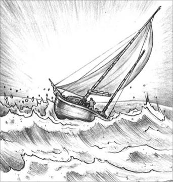
'The wind carried the Dulcibella violently on to the sandbank.'
Davies shook his head. 'I was so angry with myself, you can't imagine. I couldn't do anything because my hand was useless. But that's when Bartels saw me and came to help. He'd taken shelter in a deeper part of the channel that I was in. He saw I was in difficulties, so he and his boy rowed across to me. They soon had the sails down, and pulled me away from the sand and down the channel, to where the Johannes lay. He's a good man, Bartels. If it weren't for him, I wouldn't be here now.
'The next day he helped me repair the damage to the helm. He was sailing for the Eider River and on to the Baltic that way. It's longer than going by the new ship canal but both routes come out at Kiel. I went with him, and three days later I was in the Baltic. I wrote to you a week after I got there. You see, by then I had realized that Dollmann was a spy.'
He said it very simply, and I stared at him in astonishment.
'A spy?' I said. 'What do you mean? A spy of what – of whom?'
'Well, I'm not sure that "spy" is the right word, but he's something very bad. He deliberately tried to make me go aground, you see. He tried to kill me.'
'Are you sure?' It was difficult to believe it.
'Oh yes!' said Davies calmly. 'I've worked it all out. Dollmann knew his way through the sands, by the Telte channel, and his yacht was big enough to manage it. You see, the Telte divides into two before the Hohenhörn sandbank. Dollmann turned north and then into the channel that goes around the Hohenhörn. But before he turned, he led me straight for the sandbank. And he deliberately left me behind, so I didn't know that he had turned. He meant me to keep going straight ahead. I should have been broken to pieces on the Hohenhörn.'
'Why weren't you?' I asked.
Davies pointed again at the chart. 'Look,' he said. 'The Telte divides into two quite big channels, which go round the Hohenhörn to the north and the south. But there's also a very narrow channel that goes through the middle. It's so small that I hadn't noticed it, when I looked at the chart before we sailed. That's the one I was carried into. If I had been on the sandbank, the Dulcibella would have broken up in three minutes. I was just lucky that day.'
Lucky – and brave, I thought to myself. 'But what makes you think he's a spy?' I asked. 'Perhaps he was in difficulties too, and lost sight of you by accident?'
Davies shook his head. 'Look at it from the beginning,' he said. 'The first time I met Dollmann, he asked me all sorts of questions about what I was doing and why. I was terribly enthusiastic about my voyage and talked quite freely. I told him that I was exploring the channels between the islands, working out all the movements of the sandbanks, and making notes about it all, because the English charts were so hopelessly out of date.
'After that he did his best to get rid of me. He said there were no ducks, that the Baltic was very good for sailing and for ducks, and he offered to show me the way. He wanted to get me away from those islands. I don't think he meant to kill me at first, but when the chance came later on, he just took it.'
'But what about his crew?' I asked. 'Surely they would have noticed.'
'There wasn't anyone else on deck, when he told me about the short cut. He was steering the Medusa himself.'
'And his daughter? Do you think she wanted to get rid of you, too?'
Davies's face suddenly went very red. 'I'm sure she knew nothing about it,' he said fiercely. He began trying to light his pipe again, and I thought I could guess another reason why he had agreed to sail with Dollmann.
'Let's look at it from Dollmann's point of view,' I said. 'A German finds an Englishman exploring the German coast, and checking the charts. Perhaps he thought you were the spy.'
'But that's just the point,' cried Davies. 'He's not German. He's an Englishman.'
'An Englishman!'
'Yes, I'm sure of it,' said Davies. 'Every time I spoke to him on the Medusa he spoke German. He said he only knew a few words of English. And when he offered to show me the short cut through the sands, he shouted in German. Now, you know that I never like taking a pilot, so I hesitated before agreeing. He must have thought I hadn't understood him, so he shouted again, only this time in English, without any German accent.'
'And if he was planning to lead you to your death on the Hohenhörn,' I said, 'it wouldn't matter if you guessed that he wasn't German!'
'That's right,' agreed Davies eagerly. 'I knew you'd understand. I'm sure he's an Englishman, working for the German government and giving them information. He's been living here for years, and has a house on Norderney. Oh! And I met a friend of his, a Commander von Brüning, in the German navy. He came on board the Medusa one day when I was there. He's captain of the gunboat Blitz, on guard duty for the fishing boats around the islands.'
'Did von Brüning seem to know Dollmann well?'
'Yes, very well,' replied Davies. 'Now,' he continued, 'let me explain what I think is happening.'
He took down a map of Germany from the shelf and spread it on the table. 'Look at Germany. It's the strongest nation in Europe, and it's led by the young Kaiser, who's a great man for getting things done. Their industry is growing very fast and, in order to have markets for what they produce, they need colonies. To get and keep these colonies, and to protect their shipping, they need a strong navy. They have only a small one at present, but it's very good, and they're building more ships as fast as they can. In Britain we already have a strong navy, because we live on an island, and we need to protect the sea routes between us and our colonies. Most of our food comes to us by sea. If we lose control of the sea, we're finished. But Germany is in the very centre of Europe, and can get all she needs from her neighbours. She has the biggest army in the world. She can already compete with our industry, and soon she may be able to compete with our navy. And unfortunately, we're not ready for her. All our naval bases are on the south coast, opposite our old enemy, France. We have no bases in the North Sea. We should realize that Germany is the danger now, and do something about it.'
Davies paused and looked at me anxiously. 'These are not just my ideas, you know. Other people worry about this too.'
'Yes, I know,' I said. 'But go on.'
Davies pointed at the map again. 'Now look at the coast of Germany. It's very short and it's cut in two by Denmark. Most of the German coast is on the Baltic, which is not much use to them as it's too far from the Atlantic. That's why the Kaiser has built the new ship canal from Kiel to the River Elbe, so that he can move his ships from the Baltic to the North Sea quickly. The North Sea coast is the important one but it's very short – three hundred kilometres at the most. And not all of it can be used. Most of the coastline is hidden behind sandbanks, or a line of islands. There's just one wide opening, with the mouths of the three big rivers, the Elbe, the Weser, and the Jade, leading to Hamburg, Bremen, and Wilhelmshaven. The important bit of coast is the hundred and twelve kilometres from Borkum to the Elbe, and that's the part that Dollmann stopped me exploring.'
He paused again, looking at the sandbanks shown on the map. 'If England were at war with Germany,' he added, slowly and seriously, 'the whole of that coast would be important, sands and all. There are channels through those sands that can only be used by small ships like Bartels' Johannes. In wartime the main sea routes to Hamburg and the other ports would be carefully guarded. But if we knew where the channels through the sands were, small gunboats could use them to attack German ships in the mouths of the big rivers. And, of course, German gunboats could use them to attack our ships off the coast. Then they could disappear among the sands, where our ships would be too big to follow them. All our warships need deep water to sail in, and can't possibly use those channels.'
'I see,' I said. I began to understand what Davies was trying to tell me. 'So German gunboats could travel through the sands from Hamburg to Holland, and our North Sea ships couldn't get near them.'
'That's right,' said Davies. 'Or of course, our gunboats could do the trip the other way, if we knew where the channels were. The trouble is, we don't know. None of our fishing boats use these waters and our charts are years out of date. It just happens that I enjoy sailing in waters like these and bringing the charts up to date.'
'I'm not surprised Dollmann wanted to get rid of you,' I said.
'Yes,' agreed Davies. 'But I'd like to know just what Dollmann is doing there.'
'It must be something very important if he's prepared to kill you,' I said. 'And there's only one way to find out.'
Davies jumped up in excitement and hit his head on the cabin ceiling. 'You mean you'll come?' he cried.
'Of course,' I said. 'We'll have to go back to Norderney to find out why an Englishman is watching those waters and keeping other people out of them. When do we start?'
'We can go back to the North Sea through the ship canal from Kiel,' said Davies. 'We could start for Kiel at once. The fog's lifting and there's a little south-west wind.'
'How far is it?' I asked. 'It'll mean sailing all night!'
'It's only about forty kilometres,' he replied. 'I know it's not the best wind we could have, but we ought to take the chance.'
It was hopeless arguing about winds with Davies, so we set off lunchless, but full of excitement.
ugly adj. bad, violent, or unpleasant 可怕的；令人不快的
fatherly adj. kind and gentle like a good father 慈父般的
short cut a quicker or shorter way of getting to a place 近路；捷径
route n. a way between two places that buses, planes, ships etc regularly travel 路线；航线
work out to think about something and manage to understand 设法弄懂
hesitate v. to pause before saying or doing something 犹豫；迟疑
Kaiser n. the title of the German national leader at this time （1871年至1918年的）德国皇帝
colony n. a country or an area that is governed by people from another, more powerful country 殖民地
mouth n. the part of a river where it joins the sea 入海口；河口
and all including the thing or things just mentioned 全部；包括所有
warship n. a ship with guns that is used in a war 战舰；军舰
航海日志缺页之谜
3
航海日志缺页之谜
第二天早上，我们发现“达尔茜贝拉”号被浓雾包围了。毫无疑问，这意味着在雾散之前我们什么也做不了。早饭后，我们听见有人上了甲板，接着，一个头发灰白的小个子男人出现在船舱门口。
“巴特尔斯！”戴维斯叫道，“昨天晚上我听到有船到达，就是‘约翰内斯’号吧？来喝点咖啡。”他用非常蹩脚的德语说道，“这是我的朋友卡拉瑟斯。这是‘约翰内斯’号的巴特尔斯船长。”他为我介绍了一句，便去泡咖啡了。
巴特尔斯低声对我说：“戴维斯船长有个朋友陪着是好事。他是个好小伙子，可就是胆子太大、太爱冒险了。”
“你们是在哪儿遇到的？”我饶有兴致地问。
“在一个可怕的地方，还有可怕的天气。”他非常严肃地回答道，“他没跟你讲过吗？”
又来了，各种迹象都暗示着存在一个我不知道的秘密，一次危险的经历。我当即下了决心，要让戴维斯告诉我真相。
就在这时，他回来了。“在北海的时候，巴特尔斯帮我摆脱了点儿麻烦，是吧，巴特尔斯？”
“也没什么啦。”巴特尔斯说，“不过船长，我之前就跟你说过，这个时节的北海你的小船可吃不消。”
他喝完咖啡，走之前又像慈父一般劝告戴维斯，让他再考虑考虑冬季到来之前就回国。戴维斯陪他回到他的船上，不过马上又回来了，在船舱里跟我面对面坐下。我想他知道接下来要发生什么。
“他是什么意思？”我问。
“我会告诉你，”戴维斯说，“把整件事情都告诉你。我想这也算是一种坦白吧。这件事近来让我很犯愁，你也许能帮到我，但帮不帮由你自己决定。”他停了片刻又说，“在弗里西亚群岛发生了一些事，我没有告诉你。”
“最初是在诺德奈附近吧。”我说，“9月9号前后。”
“你怎么猜到的？”他惊奇地问。
“你不太擅长隐藏秘密。”我答道，“接着说吧。”
“唔，你说对了，就是在诺德奈。我那段时间一直向当地人打听哪儿有野鸭，他们说我应该去问一个叫做多尔曼的德国人，他有一艘大游艇，时常打猎。9月9号我刚好碰到他的游艇‘美杜莎’号，这船很大，也很光鲜——新刷的漆，还有穿制服的船员。我决定去跟他聊聊。”
“稍等。”我说，“咱们看看海图吧。”
“诺德奈在这儿。”他展开海图说，“这座岛的西头有个港口，也是弗里西亚群岛唯一真正的港口。‘美杜莎’号就停泊在港口附近。晚饭后我划着小艇过去，被领进了主舱，那里面很豪华。多尔曼差不多吃完晚饭。”
“他什么样子？”我问。
“50岁上下，瘦高个子，头发花白，蓄着花白的短胡子。”戴维斯回答，“我问他打野鸭的事儿，他说根本没有野鸭可打。不过他倒想了解我这个人，还有我在那地方做什么。我们聊了很久，我走的时候他表现得非常友好。我本打算第二天就向东航行，可多尔曼来‘达尔茜贝拉’号上拜访了我，还请我去‘美杜莎’号上吃了几顿饭。结果我的船又在诺德奈多停留了三天。”
“那几天你是怎么过的呢？”我问。
“唔，我们聊天，还有——嗯——我碰到他女儿两三回。头一天晚上我没见到她。”
“她什么样呢？”我问。
“噢！她是个很好的姑娘。”他的脸微微泛红，“最后我们一起从诺德奈起航，多尔曼说波罗的海更适合打野鸭。我们说好一起航行到库克斯港，因为他要去汉堡，而我要取道那条新运河去基尔。从诺德奈到库克斯港大概有100公里的距离。”
戴维斯停下来看了看海图。“我们是9月13号早上动身的。”他接着说道，“天气很差，刮着猛烈的西北风。这对于多尔曼的大游艇来说当然不算什么，但我很快就意识到，这种天气我的船真不应该开出去。到了旺格岛，也就是群岛中的最后一座时，风变得极猛，但那时再掉头已经来不及了。库克斯港和沙尔赫恩岛之间全是沙子，有25公里长，因此要绕过沙尔赫恩岛才能到达库克斯港，而我知道那片海域风浪会特别大。突然，我看见‘美杜莎’号正等着我靠近。我驶到它近旁时，多尔曼一字一顿地向我喊道：‘你绕行沙尔赫恩岛太危险了！跟我走吧！我带你走沙洲中间的近路。’”
戴维斯停下来，指着海图上的地方给我看：“看，这是泰尔特，沙洲中间一条宽阔的水道，要是认路的话其实没问题。可是后来这条水路被霍恩霍恩沙洲截成了两段，变得又浅又难走。多尔曼似乎很有把握，所以我想了一想，便举起胳膊示意我会跟着他。你问我有没有跟引航员走过，就只有那一次。”
戴维斯话语中带着愤恨。“我跟着他驶入泰尔特水道，但接下来发现他并没有等我。‘美杜莎’号当时的速度非常快，我根本跟不上。很快，它就消失在蒙蒙雨雾中了。我束手无策，也不能掉头开回去。当时正在涨潮，沙洲全都藏在水下，分不清哪里是沙洲、哪里是航道，也没有浮标指示。背后风正猛，推着我的船直直地朝霍恩霍恩沙洲撞去。
“忽然，我看到霍恩霍恩沙洲就在眼前，浪花四溅。我努力把船沿着沙洲边缘开，想找个办法脱险，可船却在狂风的作用下重重地撞在了沙洲上。又一波海浪袭来，船被推得更远，直撞进一条狭窄的水道里。接下来的几分钟就无法用语言形容了。第一次撞击时我的手就受了伤，舵轮也坏了，我完全控制不了船。海浪从四面八方涌来，船最终搁了浅。”
戴维斯摇了摇头。“你不知道我有多生自己的气。我的手废掉了，什么都做不了。但就在那时，巴特尔斯发现了我，赶来相助。他正在水道的深水段躲避风浪，看见我遇到危险，就和他的伙计划着小艇来到我身边。他们很快帮我收起帆，把我的船拽离沙洲，沿着水道一直拖到‘约翰内斯’号停泊的地方。巴特尔斯是个好人，要不是他，我现在就不在这儿了。
“第二天，他帮我修好了坏掉的舵轮。他之前往那个方向航行，是要经艾德河去波罗的海。这样比走新运河远些，但两条路最后都能到达基尔。我便和他一起航行，三天后到达波罗的海，又过了一周给你写了信。你知道吗？到那时我已经意识到多尔曼是个间谍。”
他最后这句话说得言简意赅。我惊讶地注视着他。
“间谍？”我问，“你是什么意思？什么间谍——哪儿的间谍？”
“唉，我也不知道‘间谍’这个词用得准不准，但他肯定是个大坏蛋。你看，他故意想办法让我的船搁浅。他想让我死。”
“你确定吗？”这番话真令人难以置信。
“嗯，我确定！”戴维斯平静地说，“我前前后后都想明白了。多尔曼知道如何从泰尔特水道穿过沙洲，他的游艇也够大，能够完成这段航程。你瞧，泰尔特水道在霍恩霍恩沙洲前分成了两段，多尔曼向北一拐，就进入了一条能够绕过沙洲的航道。但他在转弯之前，却告诉我朝沙洲方向直走，接着故意把我甩在后面，这样我就不会知道他转弯了。他想让我一直往前走，在霍恩霍恩沙洲上撞个粉身碎骨。”
“那你怎么逃过一劫的呢？”我问。
戴维斯又指了指海图。“看，”他说，“泰尔特水道分成两条比较宽的航道，分别从北面和南面绕过霍恩霍恩沙洲。但这里还有一条很窄的航道，从沙洲中间穿过去。这条航道太窄了，我出发前看海图时都没有注意到它。我的船就是被风刮进了这条航道里。要是船还停在沙洲上，肯定不出三分钟就被撞碎了。我那天只是幸运罢了。”
不止幸运，还有勇敢，我心想。“不过你为什么觉得他是间谍呢？”我问，“也许他也遇到了麻烦，不小心把你领丢了？”
戴维斯摇了摇头。“咱们从头分析吧。”他说，“我第一次见多尔曼时，他就我的行动和动机问了各种各样的问题。我对这次航行充满热情，说话也是毫无保留。我告诉他，我在考察群岛之间的航道，研究沙洲的各种变化，并把它们全部记录下来，因为英国的海图实在太陈旧了。
“从那之后，他就极力想除掉我。他说那里没有野鸭，波罗的海则更适合航行和猎鸭子，还主动提出要给我带路。他想让我离开那片群岛。我觉得他一开始并没打算杀死我，但后来机会来了，他便利用了这个机会。”
“可他的船员呢？”我问，“肯定有人会注意到吧。”
“他提出带我抄近路时，没有别人在甲板上。当时他亲自驾驶‘美杜莎’号。”
“那他女儿呢？你觉得她也想除掉你吗？”
戴维斯的脸突然涨得通红。“我肯定她对这件事一无所知。”他激动地说着，想要再次点着烟斗。我想我能猜到他愿意跟多尔曼一起航行的另外一个原因了。
“咱们再从多尔曼的角度分析一下。”我说，“一个德国人发现一个英国人在考察德国的海岸线、修正海图，说不定他以为你是间谍呢。”
“可这正是问题的关键。”戴维斯叫道，“他不是德国人，他是英国人。
“英国人！”
“是的，我确定。”戴维斯说，“每次我在‘美杜莎’号上和他交谈，他都讲德语。他说他只会几个英语单词。他提出要带我走沙洲之间的近路时，也是用德语喊的话。喏，你知道我从来不喜欢跟着引航员走，所以在答应之前迟疑了一下。他一定以为我没听懂他的话，于是又喊了一遍，只不过这一次是用英语，没有一丝德国口音。”
“因为如果他真打算利用霍恩霍恩沙洲来除掉你，”我说，“你就算猜到他不是德国人，也无所谓了！”
“正是如此。”戴维斯热切地表示赞同，“我就知道你会懂的。我确定他是英国人，为德国政府工作，向他们提供情报。他住在这儿已经好多年了，在诺德奈还有栋房子。对了！我还遇到了他的一个朋友，德国海军的一位冯布吕宁艇长。有一天我在‘美杜莎’号上时，他也过来了。他是‘闪电’号炮艇的艇长，负责保护弗里西亚群岛周围的渔船。”
“冯布吕宁看起来和多尔曼熟吗？”
“熟，很熟。”戴维斯回答。“好啦，”他接着说道，“让我来讲讲我对时局的分析。”
他从架子上取下一张德国地图，在桌上展开。“看看德国，它是欧洲最强大的国家，年轻的皇帝做事情很有手段。他们的工业发展迅猛，为了给产品找到销路，就需要殖民地。为了夺得并管治这些殖民地，也为了保护海运，就需要强大的海军。德国现在的海军规模还小，但装备精良，而且他们还在开足马力造新船。我们英国已经有一支强大的海军，因为是个岛国，需要保护本土和殖民地之间的海上航线。我们的大部分食物都是海运过来的，假如失去了对海上的控制，我们就完了。然而，德国处于欧洲的中心，能从各个邻国得到所需要的一切。它拥有世界上最庞大的军队，工业规模已经能与我们抗衡，说不定它的海军也会很快赶上我们。不幸的是，我们还没准备好迎战这位劲敌。英国的海军基地都在南部海岸，朝向老对手法国，在北海却没有基地。我们应该意识到德国才是当前的威胁，并采取相应措施。”
戴维斯顿了顿，焦虑地看着我，“要知道，这不是我一个人的看法，其他人也有这个担忧。”
“对，我知道。”我说，“你接着说吧。”
戴维斯又指着地图，说道：“现在咱们看看德国的海岸。它的海岸线很短，还被丹麦分成了两截。因为大部分都在波罗的海，离大西洋太远，所以作用不大。这就是为什么德国皇帝要在基尔和易北河之间修建新运河：这样他就可以快速把船只从波罗的海调拨到北海。北海的海岸线更为重要，却非常短——最多300公里，而且不是都能利用的。这段海岸线大部分隐藏在沙洲下或一列岛屿后面，只有一片宽阔的区域，那就是易北河、威悉河和亚德河三条大河的入海口，连着汉堡、不来梅和威廉斯港。这段重要的海岸线从博尔库姆到易北河，一共112公里长，也就是多尔曼阻止我去考察的地带。”
他又停了停，看着地图上标示的沙洲。“假如英国和德国开战，”他缓缓地、严肃地说，“这整整一段海岸，包括沙洲和全部岛屿在内，都至关重要。沙洲之间那些航道，只有像巴特尔斯的‘约翰内斯’号那种小型船只才能通行。战时，通往汉堡等港口的主航线肯定会被严加把守，但假如我们知道沙洲间的航道，小型炮艇就能从那里袭击大河入海口处的德国船只。当然了，德国炮艇也能利用这些航道在近海袭击我们的船，然后躲到沙洲的隐蔽处，我们的船太大，没法追击。我们的全部军舰都只能在深水中航行，没法通过这些航道。”
“我懂了。”我开始明白了戴维斯想要表达的意思，“也就是说，德国炮艇能够穿过那些沙洲，从汉堡到达荷兰，而我们的北海军舰却无法靠近它们。”
“就是这样。”戴维斯说，“当然了，假如知道这些航道的位置，英国的炮艇也可以以其人之道还治其人之身，可问题是我们不知道。我们的渔船从不来这片海域，海图也是好多年前的了。我只是凑巧喜欢在这种水域行船，乐意修正海图而已。”
“难怪多尔曼想要除掉你。”我说。
“是呀，”戴维斯赞同道，“不过我倒真想知道多尔曼在那儿干什么勾当。”
“他都打算杀了你，那肯定是很重要的事情。”我说，“只有一种方法能弄清楚。”
戴维斯激动地跳起来，头撞到了舱顶。“你的意思是你会跟我一道？”他叫道。
“当然了，”我说，“我们得回诺德奈去，弄清楚为什么一个英国人要看守着这片海域，不让别人靠近。咱们什么时候出发？”
“咱们可以从基尔走运河回北海。”戴维斯说，“现在就可以动身去基尔。雾开始散了，也开始有点儿西南风了。”
“要走多远呀？”我问，“这意味着连夜航行啊！”
“只有40公里左右。”他答道，“我知道现在风不是最合适的，但咱们得抓住时机。”
在风的问题上，谁也辩不过戴维斯。尽管我们没吃午饭就起航了，但内心很是激动。
4．The pathfinders
4
The pathfinders
We arrived at Kiel at one o'clock in the morning, and the next day we made our preparations for exploring the North Sea sandbanks. We bought food, oil, and plenty of warm clothes, and I wrote to my boss at the Foreign Office, requesting another week or two of holiday. I asked him to send his reply to me at the post office in Norderney, as Davies and I had no fixed address. When we were ready, we sailed the Dulcibella through the huge iron gates of the ship canal that connects Germany's two seas, the North Sea and the Baltic. For two days, with some of the largest ships in the world, we travelled slowly through the great waterway, wondering at the engineering and organizational ability of the nation that had created it.
When we reached Brunsbüttel, at the North Sea end of the canal, Davies went off to buy fresh milk. Meanwhile, an official came on board to examine our papers.
'Dulcibella,' he said. 'Someone from a big yacht was asking about you the day before yesterday.'
'Did he say what he wanted?' I asked.
'Not "he", Captain. It was a young lady,' replied the official. He smiled knowingly. 'She wanted to know if you had gone through the canal. It's a pity you missed her.'
'Well, we'll probably see her in Hamburg,' I said.
'No, she was going into the North Sea.'
'Did she say where?' I asked.
'No,' he answered. 'But don't worry, Captain. There are plenty of pretty girls in Hamburg.' He laughed, and went on to the next boat, as Davies returned with the milk.
Then the great gates opened, and we turned the Dulcibella towards the North Sea.
'Well, Davies,' I said, when I told him what the official had said, 'Dollmann can't believe he's got rid of you, if he sent his daughter to enquire after you like that.'
'I don't think he sent her to ask,' said Davies. 'I think it was her own idea to find out.' He had a strange look on his face, half happy, half confused.
With the strong tide, we soon reached Cuxhaven. Davies's plan was to explore the sandbanks between the Scharhörn and Cuxhaven, to find the channels and put them on his charts. Soon I realized that banks of yellow and brown sand were appearing to the west of us. Davies was looking delighted, as we left the main channel and sailed westwards, straight for the sandbanks.
'Centreboard up,' he cried. 'Now for some real sailing!'
We were in an extremely narrow channel. While I measured the depth of the water with the lead line, and called out the metres, Davies steered, pulled in the sails, and kept an eye on the chart. But in spite of our carefulness, there was a bumping sound from below, and we ran aground.
'There's nothing to worry about,' Davies said cheerfully. 'When the tide rises, we'll float off the sandbank. This is a good moment to have lunch.'
When we went back on deck, it was low tide, and the yacht was sitting on the top of a sandbank. As far as the eye could see, there was nothing but sand, broken here and there by the winding path of a channel. Some of these channels still held water, but others had dried out completely. Under a dull grey sky, the wind blew across this wide empty space, crying softly like a child in pain. It seemed the saddest, loneliest place on earth.
Davies, however, had climbed the mast and was examining the sand enthusiastically. His face shone with pleasure. I had never seen him look happier.
'There!' he cried. 'You see what I mean? Have you ever seen anything like this?' He climbed down and then jumped down on to the sandbank. 'Come on!' he called. 'The only way to understand a place like this is to explore it at low tide.'
I joined him, and together we ran over the sandbanks as fast as our heavy rubber boots would let us. Davies noted down every post or marker, and every bend in the channels, on his chart.
'Right!' he said when he had finished. 'Now let's get back to the Dulcibella. This tide's rising fast.'
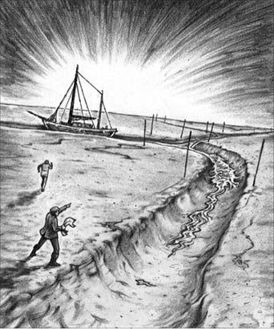
'Let's get back to the Dulcibella. This tide's rising fast.'
We turned, and ran for the yacht. I was thankful to reach it in time, before the sands were completely covered by the incoming tide. I stood on deck, and watched the sea making its way across the desert of sand. Under my feet the Dulcibella gave a jump, paused, gave another jump, and was suddenly floating again on the grey waters, which now hid the wide area of sand where Davies and I had just walked.
We raised the sail and set off, following the channel we had just explored. All around us stretched the sea, with nothing to show where the channel was. I felt completely lost, but Davies was his usual confident self. He made me call out the depth of water every few seconds, while he steered carefully, feeling for the edge of the sandbank.
It was getting dark. The German coast had already disappeared, and the sea all around us looked exactly the same to me. But I knew that Davies carried a picture in his head of the complicated pattern of the sands around and beneath us, which he had already charted.
'Right! Let go the anchor,' he said at last, 'and lower the sails.'
'Where are we?' I asked.
'In the shelter of the Hohenhörn, in the channel where Bartels took me that night. If you listen, you can hear the waves breaking on the Hohenhörn, where I went aground.'
And sure enough, we could hear the waves crashing on the sandbank. As darkness fell, the wind grew fiercer, and the sea rougher. This was the first time we had anchored at night out of sight of land, and I found it a frightening experience as the Dulcibella rolled from side to side and the sea thundered on the sandbank. But I knew now that Davies was a yachtsman of extraordinary skill, and if he said that we were perfectly safe, then safe we were.
Nothing happened in the next ten days to disturb us at our work. We spent all the daylight hours exploring the sandbanks and channels around Cuxhaven, and marking the changes on the charts. We found nothing to explain why Dollmann wanted to get rid of Davies, and nobody asked questions or tried to stop us.
'I'm sure it's something to do with these channels through the sands,' said Davies at last. 'But nobody seems to mind our being here. The answer to the riddle must be near where I first met Dollmann, at Norderney.'
So we left the Cuxhaven area, and set sail for the Frisian Islands. Helped by a strong easterly wind, we sailed all the way without stopping. We reached the island of Wangeroog just before dark, and ran the Dulcibella aground on the sand a hundred metres from the shore. There were three fishing boats anchored about a kilometre from us. Davies set out on foot across the sand to get fresh water and oil, leaving me alone on the yacht.
'Make sure you keep the light burning on the mast,' he said as he left. 'It's my only guide back to the yacht.'
It had been an exhausting day and I was feeling very tired, so I lay down on the seat in the cabin. I was half asleep when I heard footsteps on the sand outside, and then a voice calling in German, 'Hello there, on the yacht!'
I was wide awake in a second, and sat up and listened. The call came again, 'Hello there, on the yacht!'
I did not reply. Was this, I wondered, something to do with the mystery? I heard someone climb onto the deck of the Dulcibella. Suddenly the light on the mast went out. The visitor walked along the deck to the doorway, and began to climb down the ladder into the cabin. I should have waited until he was down, but I was too eager to catch him. I jumped towards the ladder and caught hold of a leg. My unknown visitor kicked out, pulled himself free, and reached the deck, leaving me holding a boot. I rushed up on deck after him, but he was too fast for me, and I did not manage to catch him. I thought of Davies coming back with the oil and water, unable to find the yacht, so I quickly relit the mast light.
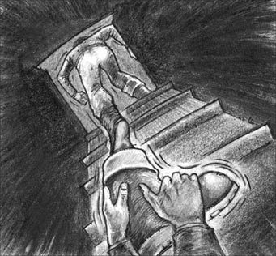
My unknown visitor pulled himself free, leaving me holding a boot.
When Davies returned, I told him about our visitor.
'I think we're being watched,' I said, 'unless he was just a thief, from one of those fishing boats, perhaps.'
'I don't think the local Germans would steal from a yacht,' replied Davies. 'And they wouldn't put out the mast light. They're all seamen and know how important it is.'
We discussed what to do. The charts we were using, with all our corrections and notes, were the only things anyone might want to see, so we decided to hide them and the log-book. Now if anyone came on board, they would think we were just two harmless young men, on an autumn sailing holiday.
We sat up late looking at the chart. There were seven islands in the German Frisian group, separated from the coast by the sands, which were mostly dry at low tide. There were small villages, just a few houses and a church, on most of the islands. Norderney had the only harbour. It was quite a busy little seaside town in the summer, but it was almost empty for the rest of the year. The mainland had no large towns either, just a few small villages. Davies pointed to the row of islands on the chart.
'Just look at the fine, sheltered harbour hidden between these islands and the coast! It's fifty kilometres long and ten kilometres wide, perfect for small gunboats.'
'Have you noticed,' I asked, 'that on the mainland there's a channel or a stream leading to each of those villages on the coast? Shouldn't we explore those too?'
'I don't think so,' he replied. 'They only lead to those tiny villages.' Davies hated spending time on land.
'Yes, but look,' I said, pointing to the chart, 'there are small harbours at Bensersiel and other villages.'
'So there are,' said Davies. 'They're probably just big enough for the local fishing boats.'
'Perhaps we should have a look at them,' I said.
'Perhaps,' he agreed unwillingly. 'But there's a lot more real work to be done further out, among the islands.'
We spent the next day exploring the channels around Wangeroog. There was only one of the fishing boats still there, and as we passed, I saw it was called the Kormoran. Later in the afternoon, we caught sight of a small grey naval ship, moving slowly past, outside the islands.
'The Blitz,' said Davies. 'Von Brüning's ship.'
As it happened, we went to Bensersiel sooner than we had expected. Two days later a strong south-west wind began to blow, promising storms to follow. We saw that the Blitz had already taken shelter, and was now anchored just south of Spiekeroog, next to several fishing boats. During the afternoon, the wind went round to the north-east – a bad sign, Davies said – and the sky turned black, bringing violent rainstorms. We decided to shelter at Bensersiel and had an exciting run through the sandbanks and a very rough sea to the shore, where with great skill Davies managed to bring us safely into the tiny harbour. He, of course, always preferred to anchor for the night away from the shore, but I was glad to step on to dry land, after more than two weeks at sea.
waterway n. a river or canal that boats travel on 水路；航道
knowingly adv. in a way that shows you know about something secret or embarrassing 会意地
enquire v. to ask someone for information 询问；打听
keep an eye on to be watching someone or something at the same time that you are doing something else 做其他事的同时注意着……
marker n. an object, sign etc that shows the position of something 标志；标志物
incoming adj. arriving at or coming to a place 正到达的；正来临的
thunder v. to run or move along quickly, in a way that makes a very loud noise 轰隆隆地移动
exhausting adj. making you feel extremely tired 使人精疲力竭的
promise v. to show signs of something 预示……可能发生
探路者
4
探路者
我们凌晨1点到达基尔，第二天便为考察北海的沙洲做准备。我们买了食物、油，还有不少厚衣服，我还给外交部的上司写信，请求多给我一两星期的假。由于我和戴维斯没有固定地址，我请上司把给我的回信寄到诺德奈邮局。一切就绪后，我们驾着“达尔茜贝拉”号驶过运河的大铁门，这条运河把德国的两大领海——北海和波罗的海——连接到一起。接下来的两天，我们沿着这条宽阔的航道缓缓前进，与一些世界上最庞大的船只同行。我们暗自思忖，能修这样一条大运河的国家，它的工程水平该有多高，组织力该有多强啊！
我们到达布伦斯比特尔，也就是运河在北海的入海口后，戴维斯下船去买鲜牛奶。这时，一位官员到我们的船上来检查证件。
“‘达尔茜贝拉’号，”他说，“前天一艘大游艇上还有人打听你们呢。”
“他说没说他打听我们做什么？”我问。
“不是‘他’，船长，是位年轻小姐。”官员会意地一笑，“她想知道你们有没有从运河走。你们错过了她，真是遗憾呀。”
“好吧，我们很可能会在汉堡碰到她呢。”我说。
“不会的，她要去北海了。”
“她说了具体地方吗？”我问。
“没有。”官员回答，“不过别担心，船长，汉堡有好多漂亮姑娘呢。”他笑着走向下一艘船，这时戴维斯刚好带着牛奶回来。
接着大铁门就开了，我们驾着“达尔茜贝拉”号向北海驶去。
“你看，戴维斯，”我把官员的一番话告诉他，然后说道，“多尔曼既然派他女儿来打听你的下落，说明他不相信你已经被除掉了。”
“我觉得不是他让她来问的。”戴维斯说，“这是她自己的主意，她想知道我的下落。”他的神情有些奇怪，半是欣喜，半是迷惑。
潮水很急，我们不久就到达了库克斯港。戴维斯的计划是考察沙尔赫恩岛和库克斯港之间的沙洲，找到其中的航道并标在海图上。很快，我发现船的西边出现了浅滩，上面布满棕黄色的沙子。我们离开主航道，一路向西朝沙洲驶去，这时，戴维斯变得兴高采烈起来。
“升起中插板！”他喊道，“真正的航行开始啦！”
我们进入了一条非常狭窄的水道。我用水砣绳测量水深，大声报出读数，戴维斯负责掌舵、收帆，同时注意着海图。尽管我们很小心，但还是听到脚下“砰”的一声，船搁浅了。
“不用担心，”戴维斯轻快地说，“涨潮的时候我们就能从沙洲上漂起来了。现在正好吃午饭。”
我们回到甲板上时，水位正低，游艇停在一块沙洲顶上。视线所及之处全是沙子，其间零星分布着蜿蜒的水道。一些水道里还有水，另一些则完全干涸了。阴沉灰暗的天空下，风吹过这片空旷的沙洲，发出好似孩子在疼痛中轻声抽噎的声音。这里仿佛是地球上最阴郁、最孤独的地方。
然而，戴维斯却爬上了桅杆，热切地审视着沙洲，脸上洋溢着快乐。我从没见他这么开心过。
“瞧！”他叫道，“你懂我的意思了吧？你见过这样的景象吗？”他爬下桅杆，跳到了沙洲上。“来吧！”他喊，“要把这种地方搞清楚，唯一的方法就是在落潮时实地考察一下。”
我也跳下船，我们穿着沉重的橡胶靴一起在沙洲上奔跑，能跑多快就跑多快。戴维斯把每一根标杆、每一处标志，以及航道的每一个转弯都记在了他的海图上。
“好了！”完成之后他说，“现在咱们回船上吧。潮水涨得很快呢。”
我们转身朝游艇跑去。很幸运我们及时赶了回去，之后，整个沙洲都被涌进来的潮水覆盖了。我站在甲板上，看着海水一点点漫过沙洲。脚下的船一震，停了一下，接着又一震，突然间就在灰色的水面上重新漂浮起来。此时，我和戴维斯刚刚走过的大片沙洲，已经全部被水覆盖了。
我们升帆起航，沿着刚刚考察过的航道行驶。四周全是海水，完全看不出航道的位置。我彻底昏了头，而戴维斯却仍像往常那样自信。他每隔几秒就让我大声报出水深，同时他则小心地掌着舵，摸索着寻找沙洲边缘。
天色渐暗。德国的海岸线已经完全不见了，四周的海域在我看来毫无二致。但我知道戴维斯脑子里装着一幅海图，上面画着周围和船下沙洲的复杂走向，这些他早已在海图上绘制下来。
“好了！抛锚吧，”他终于说道，“把帆也降下来。”
“我们到哪儿了？”我问。
“霍恩霍恩的背风处，那晚巴特尔斯带我来的那条水道里。仔细听，就会听到海浪拍打霍恩霍恩沙洲的声音，我就是在那儿搁浅的。”
果真，我们听到了海浪拍打沙洲的声音。天黑下来，风更猛了，浪头也更大了。这是我们第一次在看不见陆地的地方停泊过夜，“达尔茜贝拉”号左右摇晃着，海浪拍打着沙洲，发出轰隆隆的响声，十分可怕。但此时我已经知道戴维斯驾驶游艇的技术高超，只要他说我们没事，我们就没事。
接下来的10天里，没有什么事情干扰我们的工作。白天，我们把全部时间都用来探索库克斯港附近的沙洲和航道，把变更标记在海图上。我们没有找到多尔曼想除掉戴维斯的原因，也没有人询问我们或试图阻止我们。
“我确定事情和沙洲之间的航道有关。”终于，戴维斯说，“可是似乎没人介意我们在这儿。谜底一定藏在诺德奈，我和多尔曼初次相遇的地方。”
于是我们离开库克斯港这一带，向弗里西亚群岛进发。在强劲东风的推动下，我们一口气走完了这段航程，天黑前到达旺格岛。我们把“达尔茜贝拉”号停泊在离岸100米的一座沙洲旁，一公里外的地方停着三艘渔船。戴维斯步行穿过沙洲去买淡水和油，游艇上只剩下我自己。
“一定要确保桅杆上的灯一直亮着。”他走时说，“只有它能指引我回到船上。”
忙了一整天，我觉得非常累，便躺在了船舱的座椅上。半睡半醒之间，我听到外面沙洲上有脚步声，接着一个声音用德语喊道：“嗨！船上有人吗？”
我立刻清醒过来，坐起身来倾听。喊声又来了：“嗨！船上有人吗？”
我没有回答，心想，这件事会和那个谜团有关吗？我听到有人登上了“达尔茜贝拉”号的甲板，桅杆上的灯突然灭了。来人沿着甲板走到船舱入口处，开始沿着梯子往下爬。我本该等到他完全下来的，可当时我太急着要捉住他，于是跳到梯子旁，抓住那人的一条腿。不速之客一阵猛踢，脱身爬到甲板上，我手里只攥着一只靴子。我冲上甲板追他，可他跑得太快了，我没能追上。我怕戴维斯买油买水回来找不到我们的游艇，就赶紧把桅杆上的灯点着了。
戴维斯回来后，我把不速之客的事情告诉了他。
“我想我们被盯上了。”我说，“除非那人只是个贼，可能是那几艘渔船上的。”
“我觉得本地的德国人不会从游艇上偷东西。”戴维斯回答，“也不会把桅灯熄灭。他们都是水手，知道桅灯有多重要。”
我们商量该怎么办。我们使用的海图是别人唯一可能想看的东西，因为上面有那些更正和标注。于是我们决定把海图和航海日志藏起来。这样如果有人来到船上，也会觉得我们只是两个利用秋季假期出海航行的年轻人，不构成任何威胁。
我们研究海图到很晚。德属弗里西亚群岛共有七座岛屿，岛屿和海岸之间隔着沙洲，大部分沙洲落潮时都露出海面。多数岛屿上都有小村庄，不过是几座房子和一所教堂罢了。唯一的港口在诺德奈，夏天这座海滨小镇颇为繁华，其他季节则几乎是空城一座。沿海的大陆上也没有什么大城镇，只有一些小村庄。戴维斯指着海图上的这一串岛屿说：“看看群岛和海岸之间的这片港湾！多好，多隐蔽！50公里长、10公里宽，对于小型炮艇再适合不过了。”
“你注意到没有，”我问，“大陆上有一些水道或小河，连通着岛屿沿岸的每一座村庄？我们是不是也该考察它们一下？”
“我觉得不用。”他回答，“它们只是通到那些小村子罢了。”戴维斯不愿在陆地上花时间。
“没错，可是你看，”我指着海图说，“贝瑟西尔及其他一些村庄都有小小的港口。”
“有是有，”戴维斯说，“可这些小港口大概只够停泊当地的渔船吧。”
“也许我们应该去看看。”我说。
“也许吧。”他不情愿地同意了，“可我们还有许多真正的工作需要进一步开展，就在岛屿之间的海上。”
第二天，我们考察了旺格岛周围的航道。之前的三艘渔船只剩下了一艘，经过这艘船时，我看见它的名字叫“鸬鹚”号。当天下午晚些时候，在岛屿外围的海域，一艘灰色的小型军舰缓缓驶过。
“是‘闪电’号，”戴维斯说，“冯布吕宁的船。”
因为这件事，我们提早动身去了贝瑟西尔。两天后，刮起了猛烈的西南风，预示着暴风雨要来了。我们看见“闪电”号就停泊在施皮克罗格南面，在几艘渔船旁边，已经做好了躲避风雨的准备。下午，风向转为东北——戴维斯说这是个坏兆头——天空变成黑色，狂风暴雨随即而来。我们决定去贝瑟西尔躲避一下。我们在沙洲之间快速穿行，迎着狂风巨浪到达岸边，一路真是惊心动魄。好在戴维斯技巧纯熟，把我们的船成功开进了小小的港口。当然了，他总是宁愿在远离岸边的地方过夜，而我，经过两个多星期的海上航行，则很乐意再次踏上陆地。
5．A meeting and a warning
5
A meeting and a warning
I slept very comfortably that night, and was woken by the sound of Davies talking in his limited German to someone on the shore. When he came on board, he told me that he had met Commander von Brüning, who had invited us to have a drink in the village pub with him at twelve o'clock.
Davies had another piece of news. 'The Kormoran is here in harbour too. It must have been them watching us, surely? And then passing the information on to von Brüning.'
'Almost certainly von Brüning wants to know more about us,' I said. 'We must be very careful what we say to him. Perhaps he'll come on board and ask to see our log.'
'In that case we must show it to him. Let's be open about it! I hate hiding things, anyway.'
And so we decided on an important change of plan, to bring our log and charts out of their hiding-place, and be as honest as we could. But just how much did von Brüning know? Did he know that we had not fired a shot at a single duck in the North Sea, and that we had explored the sands all along the coast? Did he know about Dollmann's attempt to get rid of Davies, and Davies's lucky escape? We could not tell. So it would be safer to tell the truth as far as possible in the coming interview.
But first we tried to find out something about the Kormoran, so after breakfast we went for a walk round the village. The people were very friendly, and we stopped to talk to two of the fishermen. We asked them about the boats in the harbour, and they told us that the Kormoran was not a local fishing boat.
'She's from Memmert,' they said. 'She's trying to raise an old French ship, loaded with gold, that sank off Juist. Her captain, Herr Grimm, is in charge of the work. That's him over there.' They pointed to a man standing on the bridge across the little stream that ran into the harbour.
We walked out on the sand to inspect this channel, and then walked slowly back. 'Don't forget,' I said, 'when we talk to von Brüning, just be yourself. You need only tell one lie, about the trick Dollmann played you.'
'All right, I'll leave you to do most of the talking. Look, there's Grimm again. Look at his boots as we pass him.' When we did, we saw that Grimm was wearing shoes, though of course that did not prove he had left one of his boots on the Dulcibella.
It was a few minutes after twelve when we entered the village pub. Davies introduced me to Commander von Brüning, and we sat down and ordered something to drink. I must say, I liked von Brüning as soon as I saw him. He was tall, with fair hair and a short beard. His eyes were blue and friendly, but extremely intelligent. I was glad we had decided to tell the truth – the commander was not a man you could trick easily. We had decided that Davies should ask immediately about Dollmann, his supposed friend. I was horrified to see Davies's face go pink as he asked his question in German, but then I remembered an obvious reason for his embarrassment. I had to make sure, however, that von Brüning also understood the reason for the embarrassment.
'He's still away,' replied von Brüning, 'but his yacht is back at Norderney. His daughter must be there too.'
'She's a very fine boat,' said Davies, his face getting even redder. Von Brüning smiled, looking thoughtfully at Davies. I saw a chance, and took it pitilessly.
'Oh good, we can call on Fräulein Dollmann,' I said to Davies, smiling meaningfully at von Brüning at the same time. Davies looked even more miserable.
'But you have seen Herr Dollmann since I have, surely?' said von Brüning. 'Didn't you sail to the Elbe with him?'
'Only part of the way,' replied Davies. 'The Medusa was too fast for me.'
'Oh, yes! I remember,' said von Brüning. 'The weather was very bad that day. I thought you would have trouble round the Scharhörn.'
'We didn't go round the Scharhörn,' said Davies. 'Dollmann showed me a short cut through the sands, but I lost him and ran aground.'
'Where was this?' asked von Brüning.
'On the Hohenhörn,' said Davies simply.
The commander's smile disappeared and his eyes opened wide. His surprise was so obvious that I was sure he had heard nothing of this before.
'You mean Dollmann took you through the Telte channel in that sort of weather and you ran aground on the Hohenhörn? Is that where you lost him?'
'No, he had already disappeared in the rain,' replied Davies. 'He couldn't have seen what happened. Anyway, it didn't matter. The tide was rising and I soon floated off. But I decided to spend the night in the shelter of the sandbank.'
'Didn't they wait for you at the ship canal?' asked von Brüning.
'I didn't go that way,' Davies replied. 'The wind was against it, so I sailed to the Eider River and on to the Baltic that way.'
Commander von Brüning laughed suddenly and turned to me. 'Really,' he said, 'your friend amuses me. He has the most terrifying adventures, and makes them sound perfectly ordinary.'
'That's nothing to him,' I said. 'He prefers it. He anchored us the other day behind the Hohenhörn in a horrible wind; said it was safer than a harbour and much cleaner.'
'I'm surprised he didn't decide this storm was just the wind he needed to sail to England,' said von Brüning.
'There was no pilot to follow, you see,' I said, with a smile.
'And no pretty daughter,' laughed the commander.
Davies frowned and looked so angry with me that I decided to say no more about Dollmann's daughter. I suddenly thought that if Grimm was working with von Brüning, the commander would know about the Dulcibella's night-time visitor. It would seem strange if we said nothing about it.
So I said, 'By the way, I thought the local people were honest, but we had a thief on the yacht the other night.'
'Really?' he replied. 'They're excellent people, but in the old days they used to take things from wrecks on this coast, so it's a way of life for them. They probably thought the Dulcibella was deserted.'
'Talking about wrecks,' I said, 'isn't there one round here that's supposed to be full of French gold? Is that true?'
'Quite true,' said von Brüning. 'The Corinne. She sank in 1811 off the island of Juist with gold on board to pay Napoleon's army – in English money it would be worth about one and a half million pounds.'
'Has anyone found it?' I asked.
'They found the wreck years ago, but it had broken up and the gold, being heavy, had sunk to the bottom. Several people have tried to find it but, of course, these sands keep moving all the time, so it's very difficult. Now a local company is trying. They're working from Memmert, an island near here. Herr Dollmann is one of the directors of the company. There's an engineer from Bremen involved, too – he comes from time to time.'
'And have they had any luck?' I asked.
'Not yet, but I hope they will. I've put a little money into the company myself.'
'Oh, dear!' I said. 'I hope I haven't been asking too many questions.'
'Not at all,' von Brüning laughed. 'It's no secret. Everyone on these islands knows all about it. '
The conversation continued, and he went on to find out from us, in the most natural yet skilful way, every detail of our explorations so far. As we talked, I was glad we had decided on telling the truth as far as possible, and gladder still that Davies was the man he was, eager, sincere, and completely believable.
'You speak very good German, Herr Carruthers,' said von Brüning at one point in the conversation.
'I've spent some time studying in Germany,' I replied.
'For your profession?' he asked.
'Yes,' I replied. 'I work in the Foreign Office.' I would have preferred not to have given him that information, but there was probably a letter from my boss, with a Foreign Office stamp, waiting for me at Norderney post office. My name was known, and we were watched. So the letter might be opened.
'When do you have to be back at work?' he asked.
'Next week, but I'm hoping my boss will agree to give me a little more time,' I said. 'I've asked him to write to me at Norderney.'
'I see. And Herr Davies?'
'Oh! He's a free man,' I said. 'He'll sail around these islands until Christmas, I expect. So we're in no hurry.'
'I like this coast,' said Davies. 'And – we want to shoot some ducks.'
'You'll never find them,' said von Brüning, 'without a local man to guide you. I can easily find you a good man —'
'It's very kind of you, commander,' I said, 'but we'd better get to Norderney first, to collect my post and see if I can stay longer or not.'
'I'll be at Norderney myself very soon. Come and visit me there, will you? I'd like to show you the Blitz.'
'Thanks very much,' Davies and I said together, as warmly as we could manage.
As we were leaving, von Brüning took me on one side.
'One word in private with you, Herr Carruthers,' he said quietly. 'It's about the Dollmanns. You know how your friend feels. I wouldn't encourage him, if I were you. Herr Dollmann came here three years ago, but we know very little about him or his background.'
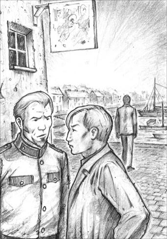
'One word in private with you, Herr Carruthers,' von Brüning said quietly.
'I thought the Dollmanns were friends of yours,' I said.
'I know them, but I know everybody. I speak only as someone who wishes your friend well, you understand. I think you should forget about calling on the family in Norderney. That's all, just a warning.'
He gave me a long, serious look, and I could see that he was not going to say any more.
'Thanks. I'll remember,' I said.
The questions in my mind were, 'How much do you know, and what do you mean?' But I could not ask them.
Davies and I walked back to the yacht in silence, and went down to the cabin.
'Where exactly is Memmert?' I asked. Davies unrolled the chart and pointed at it. Then he threw himself on one of the seats, where he lay for some time, deep in thought.
South of the island of Juist, and running right up to the mouth of the River Ems, there is a large sandbank. Its western edge remains uncovered at high tide, forming a small island, about three kilometres long, and from two hundred to five hundred metres wide. This island is Memmert. The chart showed only one building, which I guessed was the centre for Dollmann's company. The island stands on the deep water channel of the Ems, providing a shelter for ships to anchor, even at low tide.
I thought hard about our conversation with von Brüning. Was he giving friendly advice to two young men on holiday, or a serious warning to two foreign spies? Perhaps he could not decide which we were. I was sure von Brüning had not known about Dollmann's attempt to kill Davies. He had guessed it, of course, when Davies told him about the short cut through the Telte channel.
The story of the French wreck and its gold provided a very good reason for Dollmann, Grimm, and von Brüning to be seen together, and to spend time on Memmert, especially as von Brüning had put money into the company. I was curious about Memmert. The more I thought about it, the more I believed that it might help us to solve the riddle.
Davies had still not spoken. He was annoyed with me, and I knew why. But I was annoyed with him too. There was an important piece of the puzzle that he had not told me about. I was waiting for him to speak first but, in the end, his silence was too much for me, and I had to break it.
'Look, Davies,' I said, 'I'm sorry I mentioned you and Fräulein Dollmann.' No answer. I tried again, 'I couldn't help it, you know.'
At last Davies spoke. 'I don't know why you had to tell von Brüning everything. I just don't understand it.'
'You're being very unreasonable,' I replied. 'We agreed the best thing to do was to tell the truth. Didn't you see that he was trying to trap us?'
'We can't explore the channels here any more,' he said.
'No, but we could go to Memmert,' I said.
'There's nothing at Memmert,' said Davies, 'or von Brüning wouldn't have told us so much about it.'
'Well, we've got to go to Norderney...' I began, but Davies interrupted me.
'And why did you have to talk about Fräulein Dollmann?'
At last we had reached the heart of the matter.
'You haven't been fair with me, have you?' I asked. 'There's something about her you haven't told me.'
'I know I haven't,' said Davies quietly.
'Well, you see, I had to talk about her, for two reasons. First, you seemed very embarrassed when we were talking about the Dollmanns. And second, although you described Dollmann's short cut very well, in the way we had agreed, it was still obvious that he had treated you badly. So why would you still feel friendly towards him? Why would you want to see him again? Your – your feeling for her explains everything, you see – why you were embarrassed, and why you want to see the Dollmanns again.'
'I find it very difficult to talk about things like this,' said Davies, without looking at me. 'I should have told you before, but I couldn't. The truth is, I do like – Clara, very much. And I think she likes me too.' Our eyes met for a second, in which all was said that needed to be said. 'But I'm sure she knows nothing about what her father's doing,' he continued. 'I'm sure she's got nothing to do with it. And I hoped we could avoid bringing her into it.'
'Are you really sure?' I asked. 'Don't you think she could be part of it? After all, you told me she encouraged you to follow them to Cuxhaven.'
'Carruthers,' said Davies seriously, 'I realize you're trying to help, but I know she's completely innocent. I just know it. We mustn't involve her.'
'Very well,' I replied. 'In that case, the best thing we can do is to forget the whole thing, and sail for England tonight.'
'No!' cried Davies. 'We can't do that. My God! We can't let Dollmann carry on. He's a traitor, working for the Germans, against his own country!'
'All right,' I said. 'I agree with you. We must go on with it. But we can't do so without involving her.'
'Are you quite sure we can't?' he asked.
'Of course we can't,' I replied. 'We've got to see him again. We've got to see both of them, in fact. And we must be friendly. You must tell the story you told today, and hope he believes it. Even if he doesn't, he won't dare say so, and we still have chances. And we must be friendly with them both.'
Davies said nothing, but his face showed great pain. In the time we had been together, I had come to know Davies very well, and to understand how his honest mind worked. His strongest feeling was a deep love for his country, and a wish to serve her in any way he could. Now he had been given an unexpected chance to do something really important for his country, something that only he could do. But, at the same time, he loved Clara Dollmann, the daughter of a suspected traitor. It seemed that he could not take his great chance without hurting the woman he loved. It was a terrible position to be in.
'Are you sure you wouldn't rather leave it and sail for England tonight?' I asked gently.
Davies didn't hesitate. 'We can't do that. Perhaps there's some way we can stop Dollmann without involving her. If not, it can't be helped. We must go on with it.'
We discussed Memmert for some time. I felt sure that the search for the Corinne's gold was a way of hiding what was really happening on Memmert, but Davies disagreed. He still felt that the channels through the sands held the answer to the riddle. In the end, we decided that we would sail next day to Norderney, and we would make the next plan when we got there.
Herr n. the German word for 'Mr'（德语）先生
call on to visit someone for a short time 短暂拜访
Fräulein n. the German word for 'Miss' （德语）小姐
wreck n. a ship that has sunk or been badly damaged 沉船；失事船
unroll v. to open something that was in the shape of a ball or tube, and make it flat 展开；铺开
unreasonable adj. not fair or sensible 不讲道理的
carry on to continue doing something 继续
会面与警告
5
会面与警告
那晚我睡得很舒服，早上是被戴维斯的说话声吵醒的，他正用有限的德语跟岸上的什么人交谈。回到船上后，他告诉我他遇到了冯布吕宁艇长，艇长邀我俩12点去村里的酒馆喝杯酒。
戴维斯还带回一个消息。“‘鸬鹚’号也来这个港口了。肯定是他们在监视我们吧？然后再把消息告诉冯布吕宁。”
“我差不多可以肯定，冯布吕宁想知道咱俩更多的事情。”我说，“我们跟他说话得非常谨慎。说不定他会来咱们船上，要咱们的航海日志看。”
“那样的话我们就得给他看。咱们就坦率点儿吧！反正我是讨厌藏着掖着的。”
于是我们决定来一个重大转变，把藏着的航海日志和海图拿出来，尽可能地开诚布公。可是冯布吕宁到底知道多少？他知道我们在北海一枪也没开、一只鸭子也没打，而是把沿岸的沙洲考察了个遍吗？他知道多尔曼曾经试图除掉戴维斯，而戴维斯又侥幸脱险吗？我们心里没底。因此，接下来的见面还是尽可能实话实说，这样安全些。
不过，我们打算先调查一下“鸬鹚”号，便在早饭之后去村子里走了走。村里人很友好，我们停下来跟两个渔民聊天，问起港口里的那些船。他们告诉我们，“鸬鹚”号不是当地的渔船。
“它是从梅默尔特岛来的。”他们说道，“要来打捞一艘满载黄金的法国古船，很久以前在于斯特附近海域沉没的。这事儿归船长格林先生管，他就在那儿。”他们指向桥上站着的一个男人，桥下的小河流入港口。
我们踩着沙子往外走，察看这段水道，又慢慢走回来。“别忘了，”我说，“跟冯布吕宁说话的时候，你不用伪装什么。只有一点需要撒谎，就是多尔曼耍你那件事。”
“好吧，主要还是由你来说话吧。看，格林又过来了。经过的时候看看他的靴子。”经过观察，我们发现格林穿的是鞋，不过当然，这也不能证明他确实把一只靴子丢在了‘达尔茜贝拉’号上。
我们走进村子的酒馆时是12点过几分。戴维斯把我介绍给冯布吕宁艇长，我们坐下点了喝的。我得承认，我一看见冯布吕宁就喜欢上了他。他高高的个子，金黄色的头发，蓄着短胡须。蓝色的眼睛看起来很友好，却又透出绝顶的聪明。我很庆幸我们决定实话实说——这位艇长可不是那么好骗的。我们事先商量好，戴维斯一上来就要问起多尔曼，好像两人是好朋友似的。戴维斯用德语问出这个问题时，我被他涨红的脸庞吓了一跳，但转念一想，他尴尬的理由是显而易见的。不过，我得让冯布吕宁也知道戴维斯为什么脸红。
“他还没回来，”冯布吕宁说，“不过他的游艇已经回到诺德奈了。他女儿一定也在那儿。”
“那游艇很漂亮。”戴维斯说着，脸更红了。冯布吕宁笑而不语，若有所思地看着戴维斯。我看出这是个机会，毫不留情地下了手。
“哎呀，太好了，我们可以去拜访多尔曼小姐！”我一边对戴维斯说，一边给了冯布吕宁一个意味深长的微笑。戴维斯看上去更可怜了。
“不过我走了之后你肯定还见到过多尔曼先生吧？”冯布吕宁说，“你不是跟他同路到易北河吗？”
“我们只同路了一段。”戴维斯回答，“‘美杜莎’号太快了，我跟不上。”
“噢，是呀！我想起来了，”冯布吕宁说，“那天天气很差。我以为你们会在沙尔赫恩岛附近遇到麻烦呢。”
“我们没有绕行沙尔赫恩岛，”戴维斯说，“多尔曼带我走沙洲之间的一条近路，可是我跟丢了，船搁浅了。”
“在哪儿搁浅的？”冯布吕宁问。
“在霍恩霍恩沙洲上。”戴维斯简要地说。
艇长的笑容消失了，眼睛瞪得大大的。从他如此明显的惊讶表情，我断定他之前没听说过这件事。
“你是说多尔曼在那种天气下带你走泰尔特水道，然后你在霍恩霍恩沙洲上搁浅了？你是在那儿跟丢了的吗？”
“不是，那时候他的船已经消失在雨中了。”戴维斯回答，“他不可能看到发生了什么。总之没关系啦。很快就是涨潮，我的船就漂离了沙洲。不过我还是决定在沙洲背风处过夜。”
“他们在运河等你了吗？”冯布吕宁问。
“我没从那条路走。”戴维斯回答，“风向不合适，我就往艾德河走了，从那里去的波罗的海。”
冯布吕宁艇长突然哈哈大笑，转过头对我说：“真的，你的朋友太有意思了。他经历了最可怕的冒险，却把它们说得跟家常便饭似的。”
“冒险对他来说不算什么。”我说，“他就爱冒险。有一个大风天，他还把我们的船停在霍恩霍恩沙洲背面呢，说那儿比港口安全，还干净得多。”
“我很惊讶，他竟没决定利用这场风暴把船开回英国去。”冯布吕宁说。
“没有引航员呀，你知道的。”我笑着说。
“也没有漂亮女儿。”艇长大笑。
戴维斯皱起眉头，看来很生我气，于是我决定不再提多尔曼的女儿了。我突然想到，假如格林和冯布吕宁是一伙儿的，那么冯布吕宁就会知道有人夜访“达尔茜贝拉”号的事，如果我们避而不谈反而显得不自然。
于是我说：“对了，我还以为这儿的人挺老实的，可是那天晚上我们船上来了个贼。”
“真的吗？”冯布吕宁回答，“他们人倒是很好，不过以前常常会从沿岸这一带的遇难船只上捞东西，也算是种营生。很可能他们以为‘达尔茜贝拉’是艘无人的废船。”
“说到沉船，”我说，“据说这儿附近有一艘，上面装满了法国的黄金。是真的吗？”
“千真万确。”冯布吕宁说，“是‘科琳娜’号。这艘船1811年在于斯特岛附近海域沉没，船上的黄金是拿破仑军队的军饷——折合成英镑，大概值150万吧。”
“那有人找到它了吗？”我问。
“残骸好多年前就找到了，但是已经支离破碎，黄金由于比较重，沉到海底去了。好几个人试图寻找这些黄金，但是因为这一带的沙洲一直在移动，找起来十分困难。现在本地的一家公司正在想办法，从附近的梅默尔特岛开始找起。多尔曼先生就是这家公司的董事之一。有个不来梅的工程师也加入了——他时不时会过来。”
“他们目前有什么好消息吗？”我问。
“还没有，不过我希望会有好消息。我自己也往这个公司投了点儿资。”
“哎呀，天哪！”我说，“我不会问得太多了吧。”
“不会不会。”冯布吕宁大笑道，“这件事不是秘密。这几座岛上人人都知道。”
随着谈话的继续，冯布吕宁接着套我们的话，以了解我们目前探险的每一个细节，他说话的方式极其自然又颇为巧妙。我们一边聊天，我一边暗自庆幸，还好之前商量好尽可能实话实说，更重要的是，还好戴维斯是这样一个热忱、真诚、百分之百可靠的人。
“你德语说得很好，卡拉瑟斯先生。”聊着聊着，冯布吕宁说。
“我在德国学习过一段时间。”我回答。
“是工作原因吗？”他问。
“是的，”我回答，“我在外交部工作。”我本不想把这一点告诉他，可诺德奈邮局很可能有一封上司给我的信，上面盖着外交部的邮戳。我的名字别人知道，还有人监视我们，所以那封信说不定已经被打开了。
“你要什么时候回去上班？”他问。
“下周。不过我正盼着上司多准我几天假呢。”我说，“我请他写信给我，寄到诺德奈的邮局。”
“我明白了。那戴维斯先生呢？”
“噢，他很自由。”我回答，“估计他会在群岛附近转悠到圣诞节。所以我们不着急。”
“我喜欢这段海岸。”戴维斯说，“再说——我们还想打打野鸭。”
“你们可找不到野鸭，”冯布吕宁说，“除非有当地人领着。我很容易就可以帮你们找个好帮手——”
“你真是太好了，艇长，”我说，“不过我们最好还是先去诺德奈取我的信，看我还能不能再待一阵。”
“我自己也很快要去诺德奈了。到时候你们去找我吧，好吗？我很乐意带你们看看‘闪电’号。”
“太谢谢了。”我和戴维斯一起说道，语气尽可能地热情。
临走时，冯布吕宁把我叫到一旁。
“私底下跟你说句话，卡拉瑟斯先生。”他轻声说，“是关于多尔曼父女俩的。你知道你朋友的感受。如果我是你，就不会在一旁煽风点火。多尔曼先生三年前就来这儿了，可大家对他本人和他的身世背景所知甚少。”
“我还以为多尔曼父女是你的朋友呢。”我说。
“我是认识他们，可我认识的人多了。我只是为你朋友好才说这番话，希望你明白。我觉得你们不应该去诺德奈拜访这父女俩。就说这么多吧，我只是提醒你们一下。”
他用严肃的目光看了我好一会儿，我看得出他不会再多说了。
“谢谢。我会记住的。”我说。
我脑海中浮现的问题是：“你知道多少？你是什么意思？”可这些话我不能问出口。
我和戴维斯默默地走回游艇，下到船舱里。
“梅默尔特岛的确切位置在哪儿？”我问。戴维斯展开海图，指出它的位置。接着他便一头倒在一个座位上，躺在那儿陷入了沉思。
于斯特岛以南有一座巨大的沙洲，一直延伸到埃姆斯河入海口。沙洲的西缘涨潮时也露在水面上，形成了一座约3公里长、200到500米宽的小岛。这就是梅默尔特岛。海图显示岛上只有一座建筑，我猜这就是多尔曼公司的总部。这座岛位于埃姆斯河的深水道上，即使在落潮时也能供船只停泊、躲避风雨。
我认真思索着我们和冯布吕宁的谈话。他那番话是对两位年轻游客的友好建议，还是对两个外国间谍的严肃警告呢？也许他也弄不清我们究竟是游客还是间谍。我确定冯布吕宁不知道多尔曼曾企图除掉戴维斯。不过当戴维斯告诉他从泰尔特水道抄近路的事时，他肯定就猜到了。
载满黄金的法国沉船的故事为多尔曼、格林和冯布吕宁提供了绝佳的借口，让他们能够同时出现并待在梅默尔特岛，况且冯布吕宁还是公司的股东。我对梅默尔特岛充满好奇，越想越觉得这座岛或许能帮我们解开谜题。
戴维斯还是不说话。我知道他在生我的气，也知道为什么。但我也在生他的气，谜题当中有重要的一环他没告诉我。我一直在等他先开口，但最终，我实在忍受不了他不吭声，便打破了沉默。
“听着，戴维斯，”我说，“对不起，我提起了你和多尔曼小姐的事。”没有回答。我又试着说道：“我不得不提，你知道的。”
戴维斯终于开口了。“我不知道你为什么得把一切都告诉冯布吕宁，我就是不懂。”
“你这就不讲道理了。”我回答，“我们之前都觉得最好是实话实说啊。你看不出他在给我们下绊吗？”
“我们不能再考察这一带的航道了。”他说。
“是不能了，但我们可以去梅默尔特岛。”我说。
“梅默尔特岛什么也没有，”戴维斯说，“不然冯布吕宁也不会告诉我们那么多。”
“好吧，但至少我们得去诺德奈……”我刚一开口就被戴维斯打断了。
“你为什么非得谈到多尔曼小姐？”
我们终于触及问题的关键了。
“你有事瞒着我，对不对？”我问，“关于她，有些事情你没告诉我。”
“我知道我没有。”戴维斯低声说。
“好，你看，我不得不提到她，原因有两个。第一，我们说到多尔曼父女时，你看上去非常尴尬。第二，多尔曼带你抄近路那件事，尽管你按照我们事先约定好的方式说得轻描淡写，但还是能明显看出他耍了你。那你为什么还要把他当成要好的朋友呢？为什么还想见他呢？你的——你对她的感情解释了一切，喏——你为什么会尴尬，为什么还想见多尔曼父女。”
“我很难开口谈论这种事。”戴维斯避开我的目光，说道，“我之前就该告诉你的，但我说不出口。说实话，我确实喜欢——克拉拉，很喜欢。而且我觉得她也喜欢我。”我们对视了一眼，一切要说的话都尽在不言中。“不过我确定她完全不知道她父亲在做什么。”他接着说道，“我确定她与这件事无关。我希望咱们别把她扯进来。”
“你真的确定吗？”我问，“你不觉得这事可能她也有份吗？毕竟她也劝你和他们一道去库克斯港，你告诉过我的。”
“卡拉瑟斯，”戴维斯认真地说，“我明白你是想帮我，可我知道她是完全无辜的。我就知道她是无辜的。咱们不能把她卷进来。”
“很好，”我回答，“这样的话，咱们最好当作什么都没发生过，今晚就起航回英国。”
“不！”戴维斯叫道，“我们不能这样。上帝啊！我们不能让多尔曼继续下去。他是个叛国贼，帮着德国人对付自己的国家！”
“好，”我说，“我同意你说的。我们必须得接着干。可是接着干就少不了要牵连到她。”
“你确定非得牵连到她吗？”他问。
“当然了。”我回答，“我们得和多尔曼再次见面，事实上，我们得去见他们父女二人，而且必须表现得友好。你必须把今天讲的故事再讲一遍，但愿他能相信。就算他不信，他也不敢说出来，所以我们还是有机会的。我们必须对他们父女俩都表现得友好。”
戴维斯什么都没说，可是表情痛苦极了。在相处的这段时间里，我逐渐深入了解了戴维斯，深知诚实的他心中的想法。他心中最强烈的感情就是对祖国的爱，他的愿望就是竭尽所能为国效力。现在，他得到了一个出乎意料的机会，能够为祖国做一件真正的大事，一件只有他能做到的事。可与此同时，他也爱着克拉拉·多尔曼，一个叛国嫌疑犯的女儿。看来他想要抓住这个机会，就不可能不伤害到他爱的女子。他的处境太难了。
“你确定你不想今晚就起航回英国吗？”我温柔地问道。
戴维斯没有迟疑。“我们不能回去。也许会有一种方法，既能让多尔曼停手，又不会牵连到她。要是没有也没办法。我们必须接着干。”
我们讨论了一下梅默尔特岛。我确信搜寻“科琳娜”号的黄金这件事是个障眼法，是为了掩盖这些人在岛上的真正目的，可戴维斯不这么想。他依然觉得解开谜题的关键在于沙洲间的那些水道。最后，我们决定第二天就起航去诺德奈，到了那里再决定下一步该怎么走。
6．A young lady and a book
6
A young lady and a book
We left Bensersiel the next morning, but the wind had dropped, just when we needed it most, and sometimes we did not seem to be moving at all, but were just rolling from side to side. In the distance we saw the Blitz, travelling rapidly westwards, and I felt sure the Kormoran would also be on her way to Norderney.
I was desperately impatient to get on, but it took us most of the day to reach Langeoog, and we anchored that night near Baltrum, in a thick white fog. The next morning we continued our painfully slow journey, and in the afternoon I heard Davies shout at last, 'There's Norderney!' I looked up and saw, through the mist, a group of grassy sandhills, exactly like a hundred others I had seen recently, but of much greater interest to me.
I was busy with the lead line, as we were in shallow water, when Davies suddenly said, 'Is that a boat ahead?'
'The Kormoran, do you think?' I asked, noticing what looked like a fishing boat in the distance.
Davies said nothing, and seemed to forget that he was steering the boat. We touched the sandbank, but luckily the tide pushed us away again. His next words surprised me. 'Let go the anchor. Lower the sail.'
When I had done this, Davies was still staring into the mist through his binoculars, and, to my astonishment, I noticed that his hands were trembling violently. I had never seen this happen before, even at moments of great danger.
'What's the matter?' I asked. 'Are you cold?'
'That little boat,' he said. 'It's her, I'm sure. It's the Medusa's dinghy. She's come to meet m—, I mean, us.' He pushed the binoculars into my hand, and I saw a pretty little white sail coming closer. I kept my eyes on the boat, as I did not want to look at Davies. At last I heard him draw a deep breath. He turned to the Dulcibella's dinghy.
'You come, too,' he offered, jumping in and picking up the oars.
'I'd rather stay. I'll tidy up the cabin.'
'Carruthers,' said Davies, 'if she comes aboard, please remember she's outside this business. There are no clues to be got from her.'
'I'll keep out of it this time,' I said. 'You do and say what you like.'
He rowed away, just as he was, with unbrushed hair and in his old sailing clothes. I watched the two boats getting closer in the mist, and heard a great splashing of oars. Finally I saw the boats being pulled up on a sandbank, and then two figures walking rapidly to meet each other. And then I thought it was time to go below to tidy the cabin.
Nothing on earth could have made the Dulcibella's cabin a suitable place to receive a lady, but I did my best, putting clothes away in cupboards, a clean cloth on the table, and books back on the shelf. I had just put water on to boil for tea, when I heard the dinghy return.
I went up on deck, and found Davies with a very pretty girl, about nineteen years old. She was wearing a thick jacket, dark skirt and rubber boots, and her rose-brown skin lent a delicious touch of colour to the greyness of the sea and sky. When she looked at me and spoke, I knew immediately that she was no 'Fräulein Dollmann', but as English as I was, although she must have spoken German ever since she was a child.
She looked eagerly round the yacht, asking questions about all she saw, but it was obvious that she was more interested in Davies himself. The way she looked at him, and the way he looked at her, made me feel sorry for myself, because I was not in love, and even sorrier for Davies, because I could not see how all this would end. One thing was clear, however. She could never have been involved in her father's attempt to kill Davies.
'How did you manage alone that day?' she asked him suddenly. 'You know, on the way to Cuxhaven.'
'Oh, it was quite safe,' replied Davies. 'But it's much better to have a friend.'
She looked at me, and – well, I was suddenly extremely proud to be Davies's friend.
'Father said you'd be safe,' she said.
We went below into the cabin, where the water was just beginning to boil. Miss Dollmann was in a light-hearted mood, laughing and joking about all our little domestic arrangements.
'You will stop at Norderney?' she asked us.
I looked at Davies. It was up to him. But I need not have doubted him. There was no hesitation in his reply. 'Yes, of course we shall. I'd like to see your father again.'
'Ye–es,' she said, anxiously, 'yes, I'm sure he will be glad to see you.' She did not sound at all certain. 'He'll be back tomorrow. You know, we aren't living on the Medusa at the moment, but in our house on Norderney. My stepmother is there too.' She gave Davies the address, a little unwillingly, it seemed to me.
The difficult moment passed and a warm and friendly feeling returned to the cabin as the three of us sat down to enjoy our tea together. But that pleasant event never took place – all because of an English name in gold-painted letters on the cover of an old book on our bookshelf. The disaster came and went so quickly that at the time I had no idea what caused it. One moment our visitor was laughing and talking to Davies, while looking through some of our books. Then suddenly there was an awful silence, and I turned round from making the tea. She was sitting quite still, with eyes wide open, and a very white, frightened face.

Clara was sitting quite still, with eyes wide open, and a very white, frightened face.
After a few seconds, she managed to speak. 'How late it is – I really must go. My boat won't be safe.' She got up from the table.
'What's the matter?' asked Davies in English, but she did not answer, and almost ran up the ladder, like a wounded animal trying to escape. She had reached the deck and jumped into the dinghy, before she realized she needed one of us to go with her and bring the boat back.
'Davies can...' I began, but she interrupted me.
'Oh, no, thank you. If you will be so kind, Herr Carruthers. It's your turn. I mean—'
'Go on,' said Davies to me in English. I jumped into the dinghy. The poor girl tried to apologize to Davies, but could not find the right words.
'Goodbye,' he said simply, and turned away.
I offered to row, but she took no notice and rowed fast towards her sailing boat. It was now floating gently off the sandbank, where it was anchored.
'Herr Carruthers,' she said. 'I want to say something to you.' (It sounded like von Brüning's warning all over again.) 'I made a mistake just now. It's not a good idea for you to call on us at Norderney tomorrow. My father is always busy.'
'We can come another day. We have several days to spare,' I said, 'and we have to stop at Norderney for letters, anyway.'
'Please don't come because of us,' she said. 'This fine weather may not last. It would be a pity not to use it to sail to England. And my father will be too busy to see you, I know.'
'But we could see you, surely,' I replied.
'No, no, please,' she said quickly. 'My father would not like it. I should not have come today. Please tell Herr Davies that – he must not come near us.'
'He'll understand,' I said. 'I know he'll be very sorry, but you can always trust him to do the right thing.'
'Yes, I know I can,' she said softly. 'Goodbye. Please say goodbye to Herr Davies for me.'
I rowed back to the yacht, where I found Davies in the cabin. He had taken down all the books from the shelf, and was staring at the one he held in his hand.
'What on earth can have upset her?' I asked.
'I've just realized,' he said. 'It was this,' and he handed me the book. I had seen it before on the shelf, but never opened it. It was about sailing on the east coast of England, with all the usual details of winds and tides.
'What about it?' I asked, puzzled.
'Don't you see? She was looking at this book,' said Davies. 'Look at the photograph at the front.'
I looked. It showed a young man on the deck of a small yacht. 'Well?' I still could not understand.
'It's him!'
'Who?'
'Dollmann!' cried Davies. 'Dollmann wrote it! She was upset because now we know who her father really is! '
I looked at the front of the book. The author was Captain X of the Royal Navy. The book had been written sixteen years before. 'Are you sure it's him?' I asked.
'Quite sure,' Davies replied. He looked again at the picture. 'Yes, that's Dollmann, all right.'
'So, sixteen years ago he was an officer in the British Navy, and now he's working for the Germans,' I said slowly. 'He's about fifty now, you said, so that fits in. And the girl has been speaking German since she was a child. They must have come to Germany soon after he wrote the book. Is it a well-known book?'
'I've never seen another copy,' said Davies. 'I bought this one for a few pence, in a second-hand bookshop.'
'Didn't you say that Dollmann visited you on the Dulcibella in September?' I asked.
'Of course! He must have seen the book. Perhaps he thought I'd recognized him. That explains everything!'
'Does it?' I said. 'Perhaps he's just someone who did something wrong, had to leave the navy, and came here, where nobody knew him, to start a new life.'
'No, that's not it,' said Davies. 'That doesn't explain why Grimm's been watching us, or why von Brüning suspects us. What do you think of the daughter?' he added.
'She's lovely, Davies,' I said. 'You'll be a lucky man if... well, better not think about that for the moment. I'm sorry I ever thought badly of her. I can see she's quite innocent of any unpleasant business. Mind you, she's aware that they have a past to hide. This makes the problem much more difficult for us, doesn't it?'
'Not at all,' said Davies. 'It just means that there are two things we must do. We must find out exactly what Dollmann is doing and stop him, and we've got to make sure she doesn't suffer because of his guilt.'
'He's still away,' I said.
'Yes, I know. But she said he's coming back on the ferry from the mainland tomorrow morning. We'd better be there when he arrives.'
We arrived at Norderney town in the evening, and anchored on the edge of the deep water channel, about fifty metres from the harbour entrance. We were too excited to sleep, or do anything except make plans, and talk. At last Davies's natural shyness left him, and I was able to see into the secret corners of his heart. He loved this girl, and he loved his country, and he was determined to be loyal to both of them. Somehow, a way must be found to do this.
After much discussion, we realized there was only one answer – to get Dollmann, secrets and all, daughter and all, away from Germany completely. This was now our goal, and we took delight in the challenge. We had no clear idea how we would reach the goal, but there were two possible ways forward. One was to continue searching the area for clues of some kind; and the other was to use this new information about Dollmann to force him to tell us what was going on. By the time we went to bed, this second plan was the preferred one.
binoculars n. (pl) special glasses for seeing the details of distant objects 双筒望远镜
oar n. a long pole used to move a boat through the water 船桨
delicious adj. extremely pleasant or enjoyable 宜人的；令人愉快的
domestic adj. used in people's homes 家用的
loyal adj. staying faithful to somebody or something 忠诚的
少女和书
6
少女和书
第二天早上我们从贝瑟西尔起航，可就在我们最需要风的时候，风力却减弱了。有时船似乎一点儿都没往前走，只是左右摇晃。我们远远看到“闪电”号向西飞速前进，我几乎可以肯定，“鸬鹚”号也会到诺德奈去。
我迫不及待地想要前进，可我们花了大半天时间才驶到朗格奥格。那晚，我们停泊在贝尔特鲁姆附近，身处白色的浓雾中。第二天早上，缓慢而痛苦的航行又开始了。到了下午，我终于听到戴维斯大喊：“诺德奈到了！”我抬起头，透过浓雾看到一群长满草的沙丘。一模一样的沙丘我近来见过不下百次了，可这一群对我而言有着较大的吸引力。
和在浅海航行时一样，我忙着用水砣绳测水深。这时，戴维斯突然说道：“前面是有一艘船吗？”
“是‘鸬鹚’号吧，你觉得呢？”我注意到远处有一艘渔船模样的船。
戴维斯没说话，似乎忘了自己在掌舵。船碰到了沙洲，不过幸好又被潮水推开了。戴维斯接下来的话让我大吃一惊：“抛锚，收帆。”
我照做了，而他仍在用双筒望远镜向雾中凝望。我注意到他的手在剧烈颤抖，吓了一大跳。我之前从没见过他这样，即使是在最危险的时候。
“怎么了？”我问，“你冷吗？”
“那艘小船。”他说，“是它，我确定。那是‘美杜莎’号的小艇。她是来见我——我是指，我们的。”他把双筒望远镜塞给我，我看见一艘漂亮的白色小帆船正驶过来。我一直盯着那船，因为我不想看戴维斯。终于，我听见他深吸了一口气，朝“达尔茜贝拉”号的小艇走去。
“你也来吧。”他跳进小艇，拿起桨，向我提议道。
“我还是留下吧，收拾收拾船舱。”
“卡拉瑟斯，”戴维斯说，“要是她来到咱们船上，请记住她与这事无关。从她身上找不到任何线索的。”
“这回我什么也不管。”我说，“怎么做怎么说都由你。”
他顶着一头没梳理的发，穿着旧航海服，就这样划着小船走了。我看着两艘船在雾中越来越近，听到一阵嘈杂的划桨声。终于，我看见两艘船停靠在一座沙洲旁，接着两个人影急匆匆地朝对方走去。这时，我觉得我该下去收拾船舱了。
“达尔茜贝拉”号的船舱再怎样也不适合招待一位出身高贵的姑娘，但我还是尽了最大努力：把衣服收进衣橱，换上干净桌布，把书放回架子上。我刚刚烧上沏茶的水，就听见小艇回来了。
我走上甲板，发现戴维斯和一个19岁左右的漂亮姑娘在一起。姑娘穿着厚夹克、深色半截裙，还有橡胶靴，棕里透红的皮肤为灰蒙蒙的大海和天空增添了一抹动人的亮色。她看着我，一开口冲我说话，我立刻就知道她根本不是个德国姑娘，而是和我一样的地道英国人，只不过从小就说德语罢了。
她兴致盎然地环视着游艇，看到什么都要问个问题，但显然她对戴维斯本人更感兴趣。她看他的眼神，还有他看她的目光，让我为自己没有恋人而感到难过。但我更替戴维斯难过，因为我不知道他们的爱情将有怎样的结果。不过有一点是显而易见的：她肯定没有参与她父亲除掉戴维斯的阴谋。
“那天你一个人到底是怎么脱险的？”她突然问道，“哦，就是去库克斯港的路上。”
“噢，其实没什么危险啦。”戴维斯说，“不过有个朋友还是会好得多。”
她看了看我，这时——唔，我突然为自己是戴维斯的朋友感到极度光荣。
“父亲说你会平安无事的。”她说。
我们下到船舱里，这时水刚要烧开。多尔曼小姐显得很轻松，谈笑之余，对我们舱内布置的每个小细节都要戏谑一番。
“你们会在诺德奈停留吧？”她问。
我看了看戴维斯，这都取决于他。但我根本没必要怀疑他的想法，因为他毫不迟疑地答道：“会呀，我们当然会。我还想再见见你父亲呢。”
“是……是呀，”她不安地说，“是的，他肯定也会很高兴见到你。”可她的语气一点儿也不肯定。“他明天就回来了。你们知道吗？我们现在没住在‘美杜莎’号上，而是住在诺德奈的家里。我继母也在那儿。”她把地址给了戴维斯，在我看来似乎带着几分不情愿。
这段尴尬的小插曲过后，船舱里又恢复了温暖、友好的气氛，我们三人坐下准备一起喝茶。可我们终归还是没喝上茶——一切都是拜一个烫金的英语名字所赐。那个名字出现在一本旧书的封面上，书放在我们的书架上。变故是在一瞬间发生的，我当时都没明白是怎么回事。我们的客人刚刚还一边笑着和戴维斯说话，一边浏览我们的一些书籍呢。接着突然间，船舱里一阵可怕的沉默，我停止泡茶，转过身来。多尔曼小姐木木地坐在那里，双眼圆睁，苍白的脸上写满恐惧。
几秒钟之后，她才说出话来：“太晚了——我真的得走了。我的船会有危险的。”她从桌边站起身来。
“怎么了？”戴维斯用英语问道。多尔曼小姐没有回答，几乎是跑着上了梯子，像一只竭力逃跑的受了伤的小动物。她上了甲板，跳进小艇，这才意识到得有一个人跟她一起走，好把船划回来。
“戴维斯可以——”我刚开口就被她打断了。
“噢不，谢谢。请你帮帮忙，卡拉瑟斯先生，该轮到你了。我是说——”
“去吧。”戴维斯用英语对我说。我跳进小艇。可怜的姑娘想要向戴维斯道歉，却找不到合适的语言。
“再见。”他只说了这一句，就转过身去。
我提议由我来划船，可她没注意到我的话，只是飞快地向她的帆船划去。那艘船原本停泊在沙洲上，现在正缓缓漂离停泊的地方。
“卡拉瑟斯先生，”她说，“我想跟你说件事。”（她的语气听上去跟冯布吕宁的警告毫无二致。）“我刚才犯了个错误，不该叫你们明天去诺德奈看我们的。我父亲一直很忙。”
“我们可以改天再去，有好几天空闲时间呢。”我说，“再说，我们得在诺德奈停留的，要去取信呀。”
“请不要专程来看我们。”她说，“这样的好天气可能持续不了多久，你们不借机回英国，真是太可惜了。而且我父亲也会很忙，没时间见你们，我知道的。”
“可我们肯定能见你吧。”我回答。
“不，不，求你们别来。”她急忙说道，“我父亲会不高兴的。我今天就不该来。请告诉戴维斯先生——让他不要接近我们。”
“他会理解的。”我说，“我知道他会很难过，但你要相信，他知道该怎么办。”
“是的，我相信。”她轻声说，“再见。也替我向戴维斯先生道别。”
我划着小艇回到船上，看到戴维斯正在船舱里。他把书全部从架子上拿了下来，正盯着手里的一本看。
“到底有什么让她不高兴？”我问。
“我刚意识到。”他说，“是这个。”他把那本书递给我。我之前在架子上见过这本书，但从没翻开过。这书是关于在英国东海岸航行的，内容不外乎风啊，潮汐啊，等等寻常内容。
“这本书怎么了？”我不解地问。
“你没明白吗？她之前在看这本书。”戴维斯说，“看看书前面的照片。”
我看了看。照片上是一个年轻男子，在一艘小游艇的甲板上。“然后呢？”我还是不明白。
“这是他！”
“谁？”
“多尔曼！”戴维斯叫道，“这本书是多尔曼写的！她难过是因为现在我们知道她父亲究竟是谁了！”
我看了看书的前页。作者是皇家海军的X上校。书写于16年前。“你确定是他吗？”我问。
“很确定。”戴维斯回答，又看了一眼那张照片。“对，就是多尔曼，没错。”
“也就是说，16年前他是英国海军的一名军官，而现在为德国人工作。”我缓缓说道，“你说他50岁左右，这就对上号了。那姑娘从小就说德语，他们肯定是在他写了这本书之后不久就来德国了。这本书有名吗？”
“我没见过第二本。”戴维斯说，“这本我是从一家二手书店买来的，才几便士。”
“你是说过9月份多尔曼曾经来到‘达尔茜贝拉’号上拜访过你吗？”我问。
“对呀！他肯定看见这本书了，可能以为我认出了他。这样一切都说得通了！”
“是吗？”我说，“也许他只是犯了什么事，不得不离开海军，来到这个没人认识他的地方开始新生活呢。”
“不，不是这样。”戴维斯说，“这样不能解释格林为什么监视我们，还有冯布吕宁为什么怀疑我们。你觉得多尔曼的女儿怎么样？”他加了一句。
“她很可爱，戴维斯。”我说，“要是你真有那个福气能……唉，现在最好先别想这个了。很抱歉我之前对她的评价不怎么好。我能看出她很无辜，不可能做任何坏事。不过我也提醒你，她知道他们父女二人有一段过去需要隐瞒。这样，问题对咱们来说就难办多了，是不是？”
“一点儿也不难办。”戴维斯说，“这只意味着咱们必须做两件事：一是必须弄清楚多尔曼到底在做什么并制止他；二是确保她不会因为他的罪过而受到牵连。”
“他还没回来呢。”我说。
“是，我知道。可她说他明天早上会乘渡船从大陆回来。咱们最好在那儿等他。”
晚上我们到达诺德奈镇，在深水航道边上、离海港入口大约50米处停了船。我们兴奋得睡不着觉，一直在做计划、聊天。戴维斯终于克服了天生的羞怯，让我看到他内心深处最隐秘的角落。他爱这个姑娘，也爱他的祖国，并决心要忠诚于二者。他无论如何也要找到一种方法做到这一点。
充分讨论之后，我们意识到只有一个办法——把多尔曼带离德国，连同他的秘密、他的女儿，一切的一切全都带走。这就是我们现在的目标，而且我们很乐意迎接挑战。我们还不清楚该如何实现目标，但是有两种可行的解决办法：一是继续探索这片海域，寻找某种线索；二是利用这一关于多尔曼的新信息迫使他告诉我们事情的真相。到上床睡觉时，我们的结论是第二种办法更好些。
7．A day out in the fog
7
A day out in the fog
When the ferry from the mainland arrived the next morning, we were watching it from the Dulcibella's cabin.
'That's Dollmann,' said Davies, 'the tall one with the beard.'
'Who's that with him?' I asked. It was a short, fat, older man, with glasses and a hard-looking, clever face.
'He must be the engineer from Bremen, who von Brüning told us about. Look, there's Grimm, behind him.'
Five or six passengers got off the ferry, but Dollmann and his companions stayed on the deck. They stared down at the Dulcibella as the ferry moved out of the harbour.
'They haven't got off!' I said. 'Where are they going? '
'Juist,' Davies answered. 'It's the only other stop.'
'And from Juist to Memmert,' I said softly.
We had to go into Norderney town to buy food and milk, and to collect my post. I was surprised to find that there were two letters for me from my boss. The first one gave me permission to take another week's holiday. The second one, written two days later, and marked 'Urgent', cancelled this permission, and told me to return as arranged. I showed them to Davies.
'I haven't received this second one,' I said with a smile.
As we made our way back to the harbour, a thick curtain of fog rolled in from the sea. 'We'll never find the yacht in this fog,' I said, as we climbed down to the dinghy.
'Yes, we will,' said Davies. 'Just row straight across the harbour.' He leaned over the side of the boat, feeling in the water with a stick. 'There we are,' he said, after a few moments. 'That's the edge of the deep water channel. Now all we've got to do is follow it until we reach the Dulcibella. It couldn't be simpler.' And, sure enough, in two or three minutes we were back on the yacht.
'That's extraordinary,' I said. 'How far could you go like that?'
'Well,' he replied. 'If we had a chart and a compass, I suppose we could go anywhere.'
'Why not go to Memmert?' I said quietly.
'Memmert!' he said. 'That's an idea! It's a long way, of course, twenty kilometres, more or less.'
'Yes,' I said eagerly. 'But what a chance! Everyone's seen the Dulcibella here, including Dollmann and his friends. If we could get to Memmert in this fog, we might find out what's going on. And no one would see us on the way, or know we were there.'
Davies took down the chart and studied it. 'Put some food and water in the dinghy,' he said. 'And an oil lamp, the compass and the guns.'
'The guns?' I said. 'What for?'
'We're looking for ducks, if the fog clears,' he smiled. 'Now, just give me ten minutes with the chart.'
I had got the boat ready by the time he joined me. 'We'll have to hurry,' he said. 'We can't take the open sea route, round Juist. It's too public – that's the way the ferry goes. And it's more than twenty-five kilometres. No, we'll have to go over the sand. It's a much shorter way, but it'll be difficult because the tide's falling, so the channels through the sandbanks will be extremely narrow and shallow. Are you sure you can row there and back?'
'You steer, and I'll row all right,' I said. And we set out.
Even at high tide, the chart only shows narrow channels between Norderney and Memmert, and in a little over three hours' time, it would be low tide. The fog made the sandbanks completely invisible, but Davies did not attempt to look around for buoys or marker posts. Instead, he concentrated all his attention on the chart, the compass, and his watch. My duty was to be a machine, to keep the dinghy moving in whatever direction he wanted. I pulled hard, breathing deeply and regularly, hoping I would be fit enough to manage the journey.
At the shallowest point, Davies dropped the lead line into the water, and measured the depth. My oar touched sand, and we were aground. I rested for a moment, while Davies looked at his chart. Then we were off again, with a push from the oars on the sandbank, and I could see from Davies's shining eyes that we were in the right channel.
We continued in this way, rowing and pushing, through the soundless white blanket of fog. I began to lose all idea of time and place. The misty figure of Davies in front of me seemed as dream-like and crazy as myself, and I saw strange, imaginary shapes appearing out of nowhere.
It was a race against time, the fog, and the falling tide, but in the early afternoon we arrived at Memmert. In four and a half hours I had rowed twenty kilometres, and Davies had steered us through fog and sandbanks without a single mistake. I let my tired muscles relax, and we had some whisky, bread and cold meat, while making our plans. We decided Davies would stay with the boat, while I explored. I spoke the language well, and in my sea-boots, sailing clothes, and old hat, I could easily pass for a Frisian Islander in the fog.
'Take the compass, the chart, and the whistle,' said Davies. 'Remember the tide – you can have an hour and a half, no more. If you can't find your way back, blow your whistle, and I'll blow mine to guide you. Good luck.'
The chart showed that the office building was north-west of where we had landed. 'That means south-east to come back,' I said to myself. I checked the compass, and started up the beach.
I could only see a few metres ahead of me in the fog, but I could hear noises all around me – a ship's bell, and some men calling to each other in German. Somewhere in front a door banged. Before long, I found myself on a path, and a few moments later a wall appeared, which seemed to be the side of a building. I paused, and took out my pipe and lit it, to give myself an excuse for standing still and listening.
I could hear a number of men's voices, so I moved away from the sound, round the corner of the building, and saw a lighted window ahead of me. It would be interesting to see into that room, I thought, so with my hat pulled well down, I walked slowly on, taking a long careful look inside as I passed. It seemed to be an office. I could see Grimm paying a workman some money, and in chairs round the room I could see von Brüning and Dollmann, and the short, older man from the ferry (who was, we learnt later, the Bremen engineer, Böhme). The room was brightly lit and no one was looking out through the window, so I went back for a closer inspection. Bending low, I moved, as quietly as a cat, until I was beneath the window. Then, with great care, I raised my head.
There was a different workman in the room now, also receiving his wages from Grimm. There were charts on the wall, and the plan of a ship. On the floor were several pieces of old wood, perhaps from the wreck itself. My heart sank. This was pay-day, with the boat crews and divers getting their wages – just an ordinary meeting of the directors of the company. Davies and I had come all this way for nothing!
I nearly turned and walked away at that point, but the faint voice of reason told me to be patient. 'There are your four men,' the voice said. 'Wait.'
Two more men came in to get their wages, and left. Then Grimm stood up and came over to the window. I quickly bent down low, and heard above me the curtains being pulled shut. There was the sound of chairs moving, and people sitting down. Another meeting seemed to be beginning.
Desperate to hear what they were saying, I put my ear as close to the window as possible, but I could only hear a few words now and then. First Dollmann spoke for several minutes. He seemed to be talking about a recent visit to England, and I heard the word 'Chatham'. Next, Böhme went through a report. He used the letters A to G; seven letters, with figures added to each of them, like this: 'A... bad... one point five; B... three weeks... thirty; C... thirty-two... one point two.' And so on. Then he asked Grimm about each of these seven letters. I could only hear odd words of Grimm's answers: 'tugs', 'railway', 'pilots', 'depth of water', and the name 'Esens'.
Suddenly I heard Böhme ask about 'the two Englishmen'. They were talking about Davies and myself. It seemed that Böhme wanted to meet us.
'Very well, sir,' Dollmann said, more loudly than before. 'I'll invite them to dinner this evening. You can see them then.'
We would have to get back to the yacht as quickly as possible. I was just about to move, when I heard movement inside the room. Two of the men pushed back their chairs and stood up, and I heard the door open and close. Who had left, and who remained? I waited, my ear hard against the window.
'He insists on coming,' said Böhme.
'Ach!' said von Brüning, sounding astonished.
'I said on the 25th. The tide will be right. He'll come on the night train, of course. Tell Grimm to be ready.'
There was a question from von Brüning.
'Only one, with half a load,' replied Böhme. 'How's the fog?' he added.
I slid away from the window before von Brüning pulled back the curtain. I looked at my watch – I had been away nearly an hour and a half. I had to get back to the boat, so I checked the compass and started walking. As soon as I was about a hundred metres from the building, I began to run. When I reached the shore, the tide was coming in fast but there was no sign of Davies or the dinghy. I had no time to go looking for them, so I blew my whistle. Almost immediately I heard another whistle some way off, behind me. I turned and ran towards it, blowing my whistle again. The other whistle answered and, a few moments later, I saw the dinghy.
'Quick, Davies,' I called softly. 'We must get back. Dollmann's going to invite us to dinner this evening.'
'Right,' said Davies. 'The tide's coming in, and the sands will be covered. We can take the direct route back to Norderney over the sandbanks.'
We both rowed and, with the rising tide to help us, we covered the distance in about three hours. Soon after we left, a wind began to blow from the west, and the fog rolled away as quickly as it had come. We were almost at Norderney when we saw behind us the lights of a motorboat. Davies guessed it was the Blitz's launch, and we watched it draw level and pass us, going in the direction of Norderney.
'Now they'll know what we've been doing!' I cried.
'No, it's too dark now for them to recognize us,' said Davies. 'Let's slow down a bit. We don't want them to see us arrive looking all hot and exhausted. We'll have to pretend we just went out for a row. Will you be able to talk to them? My German's not good enough for that.'
'No, but I'll have to make the effort. If they suspect us now, we're finished.'
'Give me your oar, old man, and put your jacket on.' He lit his pipe, and rowed slowly on, while I lay back, trying to separate my mind from my exhausted body.
When we arrived, the launch was anchored beside the Dulcibella, but we could only see two of von Brüning's men on deck. Then we saw von Brüning himself appear from the Dulcibella's cabin.
'Is that you, Herr Davies?' he said. 'We came to see you!'
Then someone else came up the ladder from the cabin, and Dollmann appeared. Davies sat quietly in the dinghy, looking up at his enemy, while Dollmann stared down at him from the deck of the Dulcibella. It was fortunate that Davies's expression was hidden in the darkness, but the lights from the launch fell pitilessly on Dollmann's smiling face, and showed me the thin lips and cold eyes of the man who had tried to drown my friend.
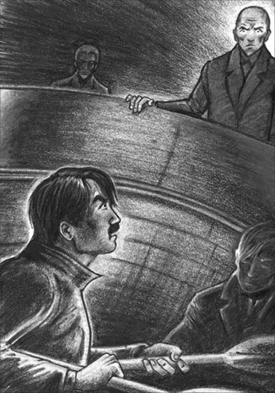
Davies sat quietly in the dinghy, while Dollmann stared down at him from the deck of the Dulcibella.
Meanwhile, the third of our uninvited guests, Herr Böhme, had reached the top of the ladder. There they stood, the three of them, like guilty schoolboys caught stealing apples, while we, the true offenders, only had to listen to their explanations. Dollmann explained he had seen the yacht in the harbour, and had called on his return from Memmert to ask us to dinner at his house. Finding no one on board, he had meant to leave a note for Davies in the cabin. 'My friend, Herr Böhme, was eager to see round the yacht, and I knew you would not mind,' he added.
'Not at all,' said Davies pleasantly. 'And we'll come to dinner with pleasure. But we must change clothes first.'
'Where have you been?' asked von Brüning, smiling.
'Oh, rowing about since the fog cleared,' said Davies.
'Looking for ducks again,' I added, lifting my gun.
'No luck, I suppose?' laughed von Brüning. 'Come, my friends, we must leave these young sportsmen to get changed, and talk to them later.'
And with some embarrassment, the three men stepped on to the launch, which moved smoothly away. We went straight down to the cabin to see what they had been looking at. Everything was just as we had left it, except Dollmann's book, which was pushed right to the back of the shelf.
'Aha!' I said, showing it to Davies. 'I think this proves Dollmann has something to hide from them.'
'Yes,' said Davies. 'It shows that they know his real name – or why would he try to hide the book from them? But they probably don't know he wrote a book, and that I have a copy.'
'It's quite complicated, wondering who knows what,' I said. 'Dollmann can't be sure what we know, and must be terrified of the others finding out that we know who he is – if we do. It's becoming clear, though, that they don't trust him.'
I had told Davies what I had heard and seen on Memmert as we rowed back. Now, as we quickly washed, and changed our clothes, we went over it again.
'What are there seven of in this area?' I asked.
'Islands, of course,' replied Davies.
'Yes, but what about "railway" and "Esens"?' I said. 'And someone insists on coming, on the night train, on the 25th. It must be someone important. Böhme, von Brüning, and Grimm are going to meet him. Somewhere at high tide, probably. And Dollmann probably doesn't know about it as they didn't discuss it until he was out of the room.'
Davies thought for a moment. 'Well, it could be Norddeich. There's a station there, and, let's see... high tide will be somewhere between ten-thirty and eleven o'clock on the 25th. What shall we do?'
'Look,' I said, 'we want a fresh start. We need to find out a lot more, and we need to prove to them that we're harmless. I suggest that I go back to London.'
'To London!' cried Davies, looking shocked.
'I can find out about Dollmann's past there, and then come back here, as somebody else, to follow up the clues on the 25th. Meanwhile, you must stay here, pretend you want to do a little duck shooting, that sort of thing.'
'I'll be no good alone,' he said miserably. 'I really don't like the idea, but I trust your judgement.'
'We haven't got time to think about it now, or we'll be late for dinner. I think they want to inspect us, or at least, Böhme does, and he's obviously the important one.'
'What are we going to say?' demanded Davies, in a worried voice.
'Not a word about where we've been today,' I said. 'If they discover that, we'll be in trouble, and in prison too, probably. For the rest, tell the truth. It's all we can do.'
roll in to happen or arrive in large numbers or quantities 大量发生；涌来
imaginary adj. not real, but produced from pictures or ideas in your mind 想象的；虚构的
workman n. someone who does physical work 工匠；工人
plan n. a drawing of a building, room etc as it would be seen from above 平面图
tug n. a small powerful boat for pulling ships 拖船
load n. a large quantity of something that is carried by a vehicle （车船等的）负载物
motorboat n. a small fast boat with an engine 摩托艇；汽艇
launch n. a large motorboat 汽艇；汽船
follow up to find out more information about something and take action if necessary 跟进；追查
雾中一日
7
雾中一日
第二天早上，大陆来的渡船到达之时，我们从“达尔茜贝拉”号的船舱里注视着它。
“那就是多尔曼，”戴维斯说，“那个蓄着胡须的高个子。”
“和他一起的是谁？”我问。那人年纪更大些，又矮又胖，戴着眼镜，表情严肃，看上去很聪明。
“他肯定是来自不来梅的工程师，冯布吕宁跟我们说过的那个。看，他身后就是格林。”
五六个乘客下了渡船，但多尔曼一伙人仍待在甲板上。船驶出港口时，他们一直向下凝视着“达尔茜贝拉”号。
“他们没下船！”我说，“他们要去哪儿？”
“于斯特，”戴维斯回答，“就只有那一站了。”
“再从于斯特到梅默尔特。”我轻声说。
我们得去诺德奈镇里买食物和牛奶，还得取我的信。我惊讶地发现有两封上司寄来的信。第一封准许我多休一个星期的假；第二封标着“急件”字样，是两天后写的，取消了多给我的假期，要我按原订计划回去。我把两封信给戴维斯看。
“我没收到第二封。”我笑着说。
我们动身回海港时，浓浓的雾气从海上升起，向港口逼近。“雾这么大，咱们肯定找不到船。”我们爬进小艇时，我说道。
“不，咱们能找到。”戴维斯说，“就往港口的正对岸划吧。”他把身子探出船舷，用一根棍子在水中摸索。“就是这儿。”过了一会儿，他说，“咱们在深水航道的边上。咱们只要一路顺着航道回‘达尔茜贝拉’号就行，这再简单不过了。”不出两三分钟，我们果真回到了游艇上。
“太厉害了。”我说，“你用这种方法能走多远？”
“唔，”他回答，“只要有一张海图、一个指南针，我想咱们哪儿都能去。
“那为什么不去梅默尔特岛呢？”我低声问。
“梅默尔特岛！”他说，“好主意！当然路有点远，差不多20公里呢。”
“是有点远。”我热切地说，“可这是多好的机会呀！所有人都看到‘达尔茜贝拉’号停在这里，包括多尔曼和他的朋友们。我们要是能趁着大雾到梅默尔特岛去，说不定能找出事情的真相，而且不会有人在路上看见我们，也不会有人知道我们去过那儿。”
戴维斯取下海图研究起来。“在小艇里放些食物和水。”他说，“还有一盏油灯，再带上指南针和枪。”
“枪？”我问，“干什么用？”
“要是雾散了，我们就假装在找野鸭。”他笑道，“现在让我看看海图，10分钟就好。”
他过来时，我已经把小艇准备好了。“咱们得抓紧。”他说，“不能走于斯特附近的公海航线，太惹眼了——渡船就走那条线，而且全程有25公里多。不行，咱们得从沙洲过去。这样路程短得多，但是会很难走，因为现在是落潮，沙洲间的航道会特别窄、特别浅。你确定你能划到那儿再划回来吗？”
“你掌舵，我划船就没问题。”我说，然后我们就出发了。
即使在涨潮的时候，海图显示诺德奈和梅默尔特岛之间也只有狭窄的航道，更何况再过三个小时多一点就是落潮了。浓雾中完全看不见沙洲，可戴维斯并没有试图寻找浮标或者标志杆，而是把全部注意力集中在海图、指南针和手表上。我则像一台机器，负责把小艇划向戴维斯指示的任何方向。我使劲儿划着桨，保持着均匀的深呼吸，希望自己的身体足够强壮，能胜任这次航行。
到了最浅的地方，戴维斯把水砣绳抛进水中测量深度。我的桨触到了沙子，船搁浅了。我休息了一会儿，戴维斯则查看着海图。接着，我用船桨推了一下沙洲，我们又开始了航程，从戴维斯闪闪发亮的眼神里，我知道我们走对航道了。
我们继续这样前行，在寂静的茫茫白雾中划桨、推桨，划桨、推桨。我对时间和地点的概念渐渐变得模糊。前面戴维斯模糊的身影看上去跟我自己一样疯狂、一样不真实，我眼前甚至莫名其妙地出现了各种奇怪的幻影。
我们和时间、浓雾还有即将到来的落潮赛跑，总算在午后不久到达梅默尔特岛。四个半小时内我划了20公里，戴维斯则准确无误地指引我们的船穿过了浓雾和沙洲。我让疲惫的肌肉放松一下，我们一边做计划，一边就着威士忌吃了些面包和冷餐肉。商量的结果是戴维斯留在船上，我去考察一番，因为我德语讲得好，而且穿着航海靴、航海服，戴着旧帽子，在大雾中很容易被人当成弗里西亚群岛的岛民。
“带上指南针、海图和哨子。”戴维斯说，“记着涨潮的时间——你只有一个半小时的时间。要是找不到回来的路就吹哨子，我会吹响我的哨子来给你指路。祝你好运。”
海图显示那栋办公楼在我们靠岸处的西北方向。“也就是说回来要往东南方向走。”我对自己说。我看了看指南针，沿着岸边向北走去。
在雾中，我只能看清前方几米的东西，却能听到周围各种声音——一艘轮船的钟声，还有一些人用德语喊话的声音。前面某个地方，有一扇门砰地关上了。没过多久，我发现自己走上了一条小径，再过一会儿出现了一堵墙，似乎是一栋大楼的侧面。我停下来，掏出烟斗点燃，这样就有理由站在那里仔细听一听。
我听到有几个男人的声音，便走远一些，绕过大楼一角，看到面前一扇亮灯的窗户。我想往屋里看看一定很有意思，便把帽子压得很低，缓缓走过那扇窗户，经过时仔细朝里面看了好几眼。屋子看来是一间办公室。我看到格林正在付钱给一个工人，屋里的椅子上坐着冯布吕宁、多尔曼，还有渡船上那个矮个子的年长男子（后来我们得知他就是那个来自不来梅的工程师博默）。房间里灯火通明，没有人往窗外看，所以我又折回去想观察得更仔细些。我弯下身子，像猫一样悄无声息地移到窗子下面，接着小心翼翼地抬起头。
现在房间里换了一个工人，也在从格林那里领工钱。墙上挂着几张海图，还有一艘轮船的平面图，地板上有几块旧木头，可能是那艘沉船上的。我的心一沉。这是发薪水的日子，船员和潜水员都来领工资——这只是公司董事们的一次平常会议罢了。戴维斯和我大老远跑来，却什么也打探不到！
那时候，我差点儿就要转身离开，但理智却轻声告诉我要耐心。“你要找的四个人都在这儿了。”那声音说，“再等等看。”
又有两个人进来领工钱，然后离开。接着，格林站起身来走到窗边，我赶紧低下身子，听到在我上方窗帘被拉上了。接着是椅子移动的声音，屋里的人坐了下来，似乎要开始另一个会议。
我急切地想听到他们在说什么，便把耳朵尽可能贴近窗户，却只能断断续续地听到几个词。多尔曼先讲了几分钟，好像是说最近去了趟英国，我听到了“查塔姆”这个地名。接下来是博默作汇报，他用了“A”到“G”七个字母，每个字母后面都列了数字，比如：“A……不怎么样……1.5；B……三个星期……30；C……32……1.2。”等等。接着他就这七个字母一一询问了格林，我只能听到格林的零星回答：“拖船”、“铁路”、“引航员”、“水深”，还有地名“埃森斯”。
突然，我听到博默问起“那两个英国人”。他们在说我和戴维斯，似乎是博默想见我俩。
“没问题，先生。”多尔曼的声音比之前提高了，“我请他们今晚来吃饭，你到时候就能见到他们。”
我们得尽快回游艇。我正要离开，却听到屋子里有响动。有两个人推开椅子站了起来，接着是门开了又关的声音。谁走了，谁留下了？我把耳朵贴紧窗子，等待着。
“他坚持要来。”博默说。
“啊？”冯布吕宁听上去大吃一惊。
“我说了是在25号，那天的潮汐正合适。他当然是坐夜间火车来，告诉格林准备好。”
冯布吕宁问了个问题。
“就一只，装半满。”博默回答。“雾还大吗？”他又问。
冯布吕宁拉开窗帘之前，我从窗边溜走了。我看了看表——已经出来将近一个半小时，得回小艇了。于是我看了看指南针，开始往回走。走到离大楼约100米处，我就开始跑。回到岸边时，潮水正在迅速上涌，但我完全看不到戴维斯和小艇的影子。我没有时间找他们了，便吹响了哨子。几乎是同一时间，我听到身后不远处传来一声哨响。我一边转过身朝那里跑，一边再次吹响自己的哨子。应答的哨声又一次响起，不久我就看到了小艇。
“快，戴维斯。”我轻声叫道，“咱们得回去。多尔曼要请我们今晚去赴宴。”
“好。”戴维斯说，“现在在涨潮，水会漫过沙洲，我们可以从沙洲上方走直线回诺德奈。”
我们一起划船，在潮水的帮助下，花了大概三个小时就走完了这段路。动身没多久，就刮起了西风，雾开始消散，和来时一样快。快到诺德奈时，我们看到身后有摩托艇的灯光，戴维斯猜测是“闪电”号的汽艇。我们看着它赶上、超过我们，朝诺德奈方向驶去。
“这样他们就知道我们刚才干什么去了！”我叫道。
“不会，现在太黑了，他们认不出咱们。”戴维斯说，“慢一点，别让他们觉得咱们是拼命赶回去的。咱们假装只是划着船出去逛逛。你能跟他们交谈吗？我德语不行，跟他们说不了话。”
“我也不行，不过还是尽力试试吧。要是他们现在起了疑心，咱们就完了。”
“把你的桨给我，老兄，把外套穿上。”他点燃烟斗，慢慢划着船，我则躺了下来，努力在身体很累的情况下保持头脑清醒。
我们到达时，摩托艇已经停泊在“达尔茜贝拉”号旁边，但甲板上只有冯布吕宁的两个手下。接着，我们看到冯布吕宁自己从“达尔茜贝拉”号的船舱里钻了出来。
“是你吗，戴维斯先生？”他说，“我们来看你了！”
这时，又有人从船舱的梯子上来，多尔曼出现了。戴维斯静静地坐在小艇中，抬头望着他的敌人，多尔曼也从“达尔茜贝拉”号的甲板上俯视着他。幸运的是戴维斯的表情被黑暗掩盖了，可多尔曼带笑的脸却在摩托艇灯光的映照下暴露无遗。这个曾经试图让我朋友溺水而亡的人，有着薄薄的嘴唇和冷酷的眼神。
与此同时，第三位不速之客——博默先生也到了梯子顶端。他们三个人站在那里，就像偷苹果被抓的犯错学童，而我们——真正的冒犯者，却只需听他们解释。多尔曼说他之前在港口看见我们的游艇，从梅默尔特岛回来后便来拜访我们，请我们去他家赴宴。看到船上没人，他打算在船舱里给戴维斯留个字条。“我的朋友博默先生很想看看这艘游艇，我知道你们不会介意的。”他补充道。
“一点儿也不介意。”戴维斯愉快地说，“我们很高兴赴宴，不过得先换衣服。”
“你们去哪儿了？”冯布吕宁微笑着问。
“噢，雾散之后划船四处逛逛。”戴维斯说。
“我们又去找野鸭了。”我举起手上的枪，补充说。
“我猜你们没找到吧？”冯布吕宁大笑，“走吧，朋友们，咱们得先让两位年轻猎手换衣服，过会儿再跟他们聊。”
三人有些尴尬地踏上摩托艇，平稳地开走了。我们赶紧下到船舱里，看看他们都看了什么。一切都保持着我们走时的样子，只有多尔曼的书被推到了架子最里面。
“啊哈！”我把书指给戴维斯看，“我想这说明多尔曼也有什么要瞒着他们。”
“是的。”戴维斯说，“这说明他们知道他的真名——不然他为什么把书藏起来不让他们看见呢？不过他们很可能不知道他写过书，也不知道我有一本。”
“猜测谁知道什么是很困难的。”我说，“多尔曼不确定我们知道什么，而且一定很怕别人知道我们了解他的真面目——假如我们了解的话。不过现在已清楚，他们不信任他。”
之前在回来的路上，我已经告诉了戴维斯我在梅默尔特岛的见闻。现在，我们一边快速洗脸换衣服，一边又把事情梳理了一遍。
“这附近有什么是七个的？”我问。
“当然是岛啦。”戴维斯回答。
“对啊，可是‘铁路’和‘埃森斯’呢？”我问，“还有个人坚持要坐25号的夜间火车过来。肯定是个重要人物。博默、冯布吕宁和格林要去接他，可能是潮水最高时，在某个地方。多尔曼可能不知道这事，因为他们是在他离开房间后才谈起的。”
戴维斯想了一会儿。“唔，有可能是在诺德代希，那儿有个车站，还有，让我看看……25号的涨潮时间将在10点半到11点之间。咱们该怎么办？”
“瞧，”我说，“我们需要重新开始。有许多东西要查清楚，还要向他们证明我们不会碍事。我提议我回伦敦一趟。”
“回伦敦！”戴维斯一脸惊诧地叫道。
“我可以在伦敦查明多尔曼的过去，然后再假扮成另外一个人回到这里，追查有关25号的线索。这段时间你必须待在这里，假装还想打打野鸭什么的。”
“我一个人肯定干不了啥。”他沮丧地说，“我真觉得这主意不好，但我相信你的判断。”
“我们现在没时间考虑了，不然晚宴要迟到了。我猜他们想调查我们，至少博默是想，而他显然是个重要人物。”
“那我们说什么呢？”戴维斯语带焦虑地问。
“我们今天的行动一个字也不要提。”我说，“要是被他们发现，我们就麻烦了，很可能还会进监狱。其他的就实话实说。我们现在也只有这样了。”
8．An evening with the enemy
8
An evening with the enemy
When we arrived at the house, a servant showed us into the living-room, where a hot wave of perfume and cigarette smoke hit us. The room was richly furnished and overheated, very different from our living conditions on the Dulcibella. Von Brüning, looking relaxed as usual, was talking to Clara on a sofa, while Dollmann rose from an armchair to greet us, and Böhme appeared from a doorway. Dollmann welcomed us politely enough, but his intelligent eyes did not leave us for a moment, and there was a certain falseness in his manner. He introduced me to his wife, Clara's stepmother. She was a large, handsome woman, with unnaturally dark hair and red lips, wearing a low-cut evening dress. I may add that she was unmistakeably German. It was clear that her main concern was to encourage von Brüning and Clara to take an interest in each other.
Clara was trying to avoid looking at us. I hoped she hadn't told her father about her visit to us on the yacht. She was doing her best to appear normal, but at times I caught an expression of deep misery on her lovely face.
'Well, are we never going to have dinner?' cried Frau Dollmann impatiently, and we all moved into the dining-room, where we sat down around a large table. I was beginning to feel the effects of my long day's rowing, and the heat and my anxiety made me feel quite faint. But a glass of wine and some excellent food soon concentrated my mind on the dangers of our situation.
'I'm leaving Davies, you know,' I said lightly, to the whole table. 'Life on the Dulcibella is too hard for a lazy weekend sailor like me.'
There was silence, until von Brüning said, 'Why are you going so suddenly, Herr Carruthers?'
'Oh, didn't I tell you I had to call at the post office for letters? I received two from my boss, and he wants me back in London at once, unfortunately.'
Another uncomfortable silence was broken by Dollmann, who turned to Davies and began, 'By the way, I ought to apologize to you for—'
This was something I did not want to appear involved in, so I said to Frau Dollmann, 'How awful the fog was today!'
'Have you been in the harbour all day?' she asked.
'Oh yes. We couldn't leave the yacht alone in the fog,' I replied, with professional seriousness.
Von Brüning joined in with a laugh. 'I don't think that's your opinion! You are much too fond of dry land!'
Meanwhile, I could hear Davies and Dollmann discussing the Hohenhörn – 'my fault' and 'quite safe', I heard my friend say. Suddenly Böhme, who had been looking closely at them both, turned and said to me, 'So, when are you setting out for England? Tomorrow?'
'Yes. There's a ferry at 8.15 in the morning, I think.'
'Good. We shall be companions. I'm going to Bremen, so we'll travel as far as Leer together. How pleasant!'
'Very,' I agreed. 'Is this only a short stay for you?'
'The same as usual. I visit the work at Memmert once a month, and spend a night or two here.'
I decided to play a dangerous game. 'Memmert,' I said, 'now do tell me more about Memmert. Von Brüning told us a little, but it all seems so secret! For example, all three of you had one of your mysterious meetings on Memmert today. You'd just come from there when you came to visit the Dulcibella. Why today? Was something important happening there? Were you inspecting the gold? No, I know! You were taking it to the mainland!'
'I can't help you,' smiled Böhme. 'I'm only the company engineer. Ask von Brüning for help.'
I turned to the commander. 'My dear young detective,' he laughed, 'I'm not very closely involved in all this. Try the company director. Rescue me, Herr Dollmann!'
'I,' said Dollmann, with a noisy laugh, 'cannot tell company secrets. Business interests must be protected!'
'Well,' I said, 'I wonder – Do you remember, Davies, how interested the commander was in all our doings, when we met at Bensersiel? I wonder if he feared that our explorations might possibly lead us to Memmert?'
'Really,' said von Brüning, with a smile, 'I thought I was being most helpful to you, giving advice about duck shooting and so on. But go on, young man.'
'What is he talking about, and why go on with this stupid mystery?' asked Dollmann's wife, yawning.
Why indeed? My head was turning as I thought desperately fast. If I went too far in this direction, they might guess the truth, but if I didn't go far enough, they might also suspect us. 'I was thinking about this delightful dinner party,' I continued, 'and the reason for it. Now I think I can guess why you invited us. Didn't you discuss us at Memmert? And didn't one of you, perhaps Herr Böhme, who hadn't met either of us, suggest an invitation?'
'You could almost have been there,' said Dollmann.
'You may thank your terrible climate that we weren't,' I replied, laughing. 'I also think – but, no – this is going too far. I shall probably offend you.'
'Come, let's hear it. Your wild ideas are amusing.'
'Well, you know, we were a little surprised to find you all on board the Dulcibella, taking such a deep interest in a small boat! I think you wanted to inspect us!'
Everybody burst out laughing, and Dollmann said, 'I warned you, Böhme. We really must apologize.'
'The point is, what did you suspect me of?' I went on. 'I know you can't suspect Davies – just look at him!'
'Perhaps we still suspect you,' said von Brüning.
'Oho! You'll force me to take action. Perhaps when I get back to London, I'll do some investigating! There must be some questions to ask about the ownership of the Corinne's gold.'
There was another silence, finally broken by Dollmann, who turned to Böhme and von Brüning and said, half-jokingly, 'Gentlemen, we must come to an agreement with this dangerous young man. What can we offer Herr Carruthers?'
'Take me to Memmert!' I said. 'Then I'll forgive you.'
'But you are starting for England tomorrow!'
'I ought to, but I'll stay for that.'
'Under promise of absolute secrecy, then?' said Böhme.
'And you'll show me everything? Wreck and all? '
'Everything, if you can put on a diving suit and dive.'
'We've won!' I cried delightedly. 'And now, I don't mind saying that the joke's at an end, as far as I'm concerned. In spite of your kind offer, I must start for England tomorrow. You see, I really did receive letters from my boss. Do you want to see them?' I pulled the letters from my pocket, and gave them to Dollmann. 'Ah, you don't read English easily, perhaps. I expect Herr Böhme does.'
The dinner continued, with more food and even more wine. I drank as little as possible, to keep my head clear. I knew that our enemies had allowed me to win the first part of the game, but I felt sure they knew more about us than they appeared to. However, I guessed we would probably be safe, as long as they believed we thought Memmert, and Memmert only, was the centre of their secret activities. I also knew that they could not suspect us of having been to Memmert that day, because nobody would believe it was possible to do what Davies and I had done.
I have no way of knowing how near we came to being arrested that night, but once or twice we must have been very close. There could not have been a more interesting party of seven people anywhere in Europe that evening, with such differing feelings of fear, love, anger, ambition, and unhappiness, all hidden behind smiling faces.
We stayed for two hours or more, but soon the cigarette smoke and heat brought back my faintness, and my tired arms and legs began to stiffen. We rose to go, and although I do not remember much about the goodbyes, I heard Böhme say he would see me on the ferry the next day. Von Brüning was staying at the house a little longer.
'You want to be able to talk about us!' I remember saying, with a last effort at cheerfulness.
Outside in the fresh air, it was a silver, breathless night. And back on the yacht, I fell on to one of the benches, fully dressed. There I slept such a deep sleep that von Brüning's men could have tied me up and taken me to prison, without my noticing a thing.
furnish v. to put furniture and other things into a house or room 为（房屋或房间）配置家具
Frau n. the German word for 'Mrs'（德语）夫人；太太
professional adj. showing that someone has been well trained and is good at his work 专业的；内行的
ownership n. the fact of owning something 所有权
stiffen v. to become firm, straight or still 变僵；绷紧
与敌人共进晚餐
8
与敌人共进晚餐
我们到达多尔曼的府邸后，一个用人将我们领进了会客厅，一股混合着香水味和烟味的热浪扑面而来。房间布置得富丽堂皇，而且很热，和“达尔茜贝拉”号上的生活条件简直有天壤之别。冯布吕宁正坐在一张沙发上和克拉拉交谈，看上去像平时一样轻松。多尔曼从扶手椅上站起身来迎接我们，博默也正从一扇门里出来。多尔曼依足礼数欢迎我们，但他机智的眼睛一刻也没离开我们身上，举止也有几分虚假。他把我介绍给他的妻子，也就是克拉拉的继母。他妻子高大、漂亮，穿着低胸晚礼服，但头发颜色太深、嘴唇太红，有些不自然。我还得说，她是个如假包换的德国人。她最关心的显然是如何让冯布吕宁和克拉拉喜欢上对方。
克拉拉尽量不看我们。我希望她没把去游艇上找我们的事告诉她父亲。她尽量表现得正常，可我偶尔还是能在她漂亮的脸上看到一丝极其痛苦的表情。
“喂，我们是不是都不用吃饭了？”多尔曼夫人不耐烦地喊道。于是我们都进了餐厅，围坐在一张大餐桌旁。划了一整天的船，疲惫开始向我袭来，又因为热和焦虑，我觉得很虚弱。不过一杯酒下肚，又吃了些好吃的，我很快又把心思集中到目前危险的处境上来。
“你们知道吗，我要丢下戴维斯了。”我轻松地对全桌人说，“‘达尔茜贝拉’号上的生活对我这样懒散的周末航行者来说太艰苦了。”
一阵沉默后，冯布吕宁说：“你为什么突然要走呢，卡拉瑟斯先生？”
“噢，我不是和你说过我得去邮局取信吗？我收到了上司的两封信，不幸的是，他让我立刻回伦敦。”
又是一阵尴尬的沉默。终于，多尔曼转向戴维斯，开了口：“顺便提一句，我应该向你道歉，因为——”
我不想让别人觉得我掺和这件事，便对多尔曼夫人说：“今天的雾真烦人啊！”
“你们一整天都待在港口吗？”她问。
“唉，是呀。大雾天不能丢下船不管。”我摆出很内行的样子，一本正经地回答。
冯布吕宁笑着插话：“我觉得这不是你的想法吧！你太喜欢陆地了！”
与此同时，我能听到戴维斯和多尔曼谈论霍恩霍恩沙洲——“是我的错”、“挺安全的”，我听到我的朋友这样说。一直仔细盯着他们看的博默突然转过头问我：“那你什么时候动身回英国？明天吗？”
“对。我记得明天早上8点15分有一班渡轮。”
“很好，咱们可以做伴儿了。我要去不来梅，这样咱们能一路同行到莱尔呢，太好了！”
“的确。”我附和道，“你这次就待这么短时间吗？”
“通常都这样。我一个月来梅默尔特岛视察一次工程，在这儿住一两晚。”
我决定走一招儿险棋。“梅默尔特岛！”我说，“快给我讲讲梅默尔特岛吧。冯布吕宁说起过一点儿，可一切看上去还是太神秘了！比如今天，你们三人就在梅默尔特岛进行了一次神秘聚会，就在你们来‘达尔茜贝拉’号之前。为什么是今天呢？梅默尔特岛是不是发生了什么重要事情？你们是在寻找那些黄金吗？不对，我知道了！你们是打算把黄金运到大陆去！”
“我帮不了你。”博默笑道，“我只是公司的工程师。问冯布吕宁吧。”
我朝艇长转过头去。“我亲爱的年轻侦探，”他笑道，“这件事我参与得并不多。问问公司董事吧。救救我，多尔曼先生！”
“我呀，”多尔曼发出刺耳的笑声，“我不能泄露公司机密呀。商业利益必须得到保护！”
“好吧，”我说，“我在想——戴维斯，你还记得吗？我们在贝瑟西尔遇到冯布吕宁艇长时，他对我们的一举一动是多么感兴趣！我在想，他是不是怕我们的考察会开展到梅默尔特岛去？”
“真是的，”冯布吕宁一笑，“我还觉得我帮了你们大忙呢，给你们打野鸭提供建议什么的。不过你接着说，年轻人。”
“他在说什么呀？为什么还要谈论这个无聊的秘密？”多尔曼的妻子打着呵欠问道。
是啊，为什么呢？我竭尽全力思索着，大脑飞速运转。我要是就这个问题追问太多，他们可能会猜到真相，可是若浅尝辄止也可能会引起怀疑。“我在想这次美妙的晚宴，”我接着说道，“还有你们宴客的原因。现在我能猜到你们为什么邀请我俩了。你们在梅默尔特岛谈到我们了吧？是不是有谁——或许是还没见过我俩的博默先生，提议请我们赴宴？”
“猜得真准，就跟你去过现场似的。”多尔曼说。
“你得感谢你们可怕的天气，让我们没去成。”我笑道，“我还觉得——好吧，我不说了——下面的话可能有点儿过，恐怕会冒犯你们。”
“说吧，让我们听听。你这些奇特大胆的想法还挺有趣的。”
“唔，这么说吧，我们看到你们都在‘达尔茜贝拉’号上，对一艘小船这么感兴趣，还真有点吃惊呢！我觉得你们想调查我们！”
大家哄堂大笑。多尔曼说：“我提醒过你的，博默。咱们真得道歉了。”
“问题在于你们怀疑我什么？”我接着说道，“我知道你们不可能怀疑戴维斯——看他的样子就知道！”
“说不定我们现在仍然怀疑你呢。”冯布吕宁说。
“哈！你们是逼我采取行动呀。没准我回到伦敦就要调查一番！‘科琳娜’号黄金的所有权肯定有点儿问题！”
又是一阵沉默。终于，多尔曼打破沉默，他转向博默和冯布吕宁，半开玩笑地说：“先生们，咱们得跟这位危险的年轻人达成协议。我们能给卡拉瑟斯先生什么条件呢？”
“带我去梅默尔特岛吧！”我说，“那样我就原谅你们。”
“可你明天就要动身回英国了！”
“我是该回去，可是为了这个条件，我可以留下。”
“那么你发誓绝对保密？”博默问。
“那么你们就把什么都给我看？包括沉船在内的一切？”
“什么都给你看，如果你能穿上潜水服潜到水下。”
“我们赢了！”我欣喜地叫道，“现在，我想说玩笑该结束了，至少就我而言是这样。谢谢你们的好意，不过我明天必须得动身回英国。你们看，我真的收到了上司的来信，要看看吗？”我从兜里掏出信，递给多尔曼，“哎呀，你读英文可能有点儿吃力。我想博默先生没问题。”
晚宴还在继续，端上来更多的食物、甚至更多的酒。我为了保持头脑清醒，尽可能地少喝。我知道我们的敌人让我们赢了第一局，但他们对我们的了解肯定比看上去要多。不过，我想只要他们以为我们把梅默尔特岛——仅仅把梅默尔特岛——当成他们秘密活动的中心，我们就应该会安全。我还知道他们不可能疑心我们那天去过岛上，因为我和戴维斯在当天做过的事实在匪夷所思。
那晚我们被捕的可能性有多大，我无从得知，但肯定是有那么一两次离被捕不远了。那一晚，在欧洲的任何角落都不会有比这更有意思的七人聚会了，各人的笑脸下掩藏着千差万别的情绪：恐惧、爱恋、怒火、野心和忧伤。
我们又待了两个小时，或许还多一点，但很快，香烟的雾气和屋里的热度重新勾起了我的疲惫，劳累的四肢开始变得僵硬。我们起身告辞，虽然我不太记得道别时说了什么，但还是听到博默说他次日会在渡轮上跟我碰面。冯布吕宁还要再待一会儿。
“这样你们就能谈论我们了！”我记得自己打起最后一分精神，笑着说了这么一句。
那是一个晴朗无风、月光皎洁的夜晚，外面空气很清新。回到游艇，我衣服都没脱就倒在一个座位上熟睡过去。就算冯布吕宁的手下把我绑到监狱去，我估计也一无所知。
9．The answer to the riddle
9
The answer to the riddle
'Godbye, old man,' called Davies, as the ferry pulled slowly out of Norderney. He looked tired and depressed as he waved goodbye to me, and I was only half awake myself. It was Davies who had woken me, fed me, and packed my bag with motherly care. We had not had time to discuss any further plans, except that he should expect my return on about the 26th, the day after the Germans' meeting.
Böhme was on the ferry too, keeping a close eye on me. However, I managed to get away from him for a few minutes, in order to read Davies's note to me, which he had put into my hand at the last moment. It said:
Their meeting: could be at Norden. It has a station, and high tide there on the 25th will be 10.30 to 11 p.m. Can't be Norddeich, because it has a deep channel for the ferry, so no need to worry about the tide being right.
Other clues: tugs, pilots, depths, railway, Esens, seven of something – could this mean a land-and-sea defence plan for the North Sea coast?
Sea: there are seven islands from Borkum to Wangeroog (not counting Memmert, which is small), each with its own channel to the mainland. Tugs and pilots needed for finding these channels.
Land: good railway line running only a few kilometres from the coast, connecting inland villages. Is Esens the centre of this defence plan?
But I was too sleepy to concentrate fully, and I slept for most of the train journey that followed our arrival at Norddeich, only waking up twice. The first time was at Emden, where Böhme and I had to change trains, and I heard someone talking to him about canals. The second was at Leer station, when Böhme woke me to say goodbye. 'Don't forget to do your investigating in London!' he cried, smiling falsely.
As the day passed, however, I began to feel fresher, and was able to think more clearly. Today was the 23rd, so I had very little time to reach London, find out about Dollmann, and return in time for the meeting on the 25th. I began to imagine how it would be in London – trying to persuade people in government offices of the urgency of my enquiries. Oh, will you leave a note, sir? Or come back next week to see Mr So-and-So? People are cautious, unwilling to give out information unless they are forced to. And the Navy!
Another thought. How sure was I of Davies's safety while I was away? Might they offer to take him to Memmert, put him in a diving-suit, cut off the air – Stop, that was nonsense! But I had already decided there was no point in returning to London. Instead, I would go as far as Amsterdam, to change my clothes and identity, and sleep just one night in a comfortable bed. Then I would go back to Friesland to look for more clues, and try to solve the riddle.
In Amsterdam, I sent this telegram to my boss:
Very sorry, could not call Norderney for post. Hope extra holiday all right. Please write Hotel du Louvre, Paris.
I found a pleasant hotel, and slept for ten hours in a huge, luxurious bed. Early next morning, I was on a train travelling back the way I had come, wearing some old seaman's clothes, which I had bought from a second-hand clothes shop. I was now an ordinary English seaman, going to Emden to join his ship.
All day, as I was carried through the Dutch and German countryside, I puzzled over the clues we had gathered. Davies was probably right, and Norden was the place for the meeting on the 25th. 'The tide will be right,' they had said at Memmert, and high tide was between 10.30 and 11 p.m. My train timetable told me there was a 'night train', too, leaving at 7.43 p.m, and stopping at all the villages east of Norden. I determined to be at Norden in time for the meeting, and until then, I would find out all I could about Friesland, and Esens in particular.
At Emden, I bought a ticket to Esens. The train crossed a big canal, which I realized was the Ems-Jade Canal, connecting Emden and Wilhelmshaven, and deep enough to carry gunboats. I looked again at my map of the area. Esens was six kilometres inland from Bensersiel, and a stream ran all the way from Bensersiel to join the Esens-Wittmund Canal. I suddenly remembered the numbers I had heard at Memmert. Perhaps they were the depths of water in canals! The conversation I had heard at Emden station also came back to me, and I felt sure that Böhme was a canal engineer. Was I getting somewhere at last?
In Esens, I walked around in the evening light and discovered several interesting things. A lot of work was being done there, on developing the Bensersiel stream into a canal. I also saw a long, low building, rather like buildings I had seen on Memmert, where barges were being built. I climbed into one of the barges to inspect it more closely, and realized that it was designed not only for canal work, but also for rough water.
By now it was midnight, and as there was no one around, I decided to spend the night on the barge. The cold wooden boards brought back the memory of my soft hotel bed, but a spy can't expect luxury every night. At least there was more room to move than on the Dulcibella.
The next day was the 25th. In the morning I studied the map again and realized how much I had to explore. There were six more villages like Esens and six more harbours like Bensersiel round the coast, and perhaps these matched Böhme's seven letters, A to G. All seven harbours had channels going through the sands to the open sea, and all seven were connected by a stream or canal to an inland village.
I spent the whole day walking round Friesland. This time I took the identity of a German seaman, and talked to local people, to find out more. I was only suspected of being English once, but that nearly got me into serious trouble. Luckily, however, I managed to get the man drunk and escape from him. But it made me more aware of the danger I was in, so after that I avoided roads and villages, and walked across fields and through streams. Everywhere I went, I discovered that work was going on; all the streams were close to becoming canals, and solid, good quality barges were being built in large numbers.
At 7.15 in the evening, I arrived, very tired, at Norden station, for the meeting I hoped would take place there. I was delighted to see von Brüning there already. He did not notice me in my dirty seaman's clothes, and I heard him ask for a ticket to Esens. I bought one, too, and we both got on the 7.43 train. At the last minute, I saw two late arrivals, whom I did not recognize, jump on. A whistle blew, and the train rolled slowly out of the station.
At Esens station, I got out first, and waited in the darkness for the three men to pass. They walked on together, away from the coast and towards the canal. I did not follow them, as I felt sure they would appear at Bensersiel very soon, so I walked quickly to the harbour. There I waited for an uneasy hour, looking at the barges lying at anchor, and wondering if I had guessed wrongly about their plans.
Suddenly I saw the lights of a tug coming into the small harbour. It was Grimm at the helm, with a crew of two seamen. He left them in charge while he jumped on to the shore, and disappeared in the direction of the canal.
I knew I had to get on board somehow – it was the only way I could follow them – but how? Fortunately for me, the sailors seemed very interested in the brightly lit pub, and after a short discussion, they tied up the tug, and hurried towards it. This was my chance, and I took it. As soon as they had gone, I ran across the mud, and climbed on board. The only place I could find to hide was the dinghy, which hung over the side of the tug, tied on with thick ropes. I was too excited to be anxious about what might happen if I was discovered, and I hid myself carefully at the bottom of the little boat.
Soon after, the sailors hurried back, followed by Grimm. The engine started, and the tug moved slowly away, and then stopped. I heard footsteps from the direction of the canal, and three people jumped on to the deck. We were off again, and this time the tug seemed to be pulling something. What was it? A barge, of course! I had seen one, half-loaded with bricks, lying near the tug in the harbour. (Then I remembered the words from Memmert: 'Only one, with half a load.')
Cautiously, I looked over the edge of the dinghy, and realized we were travelling west, towards Norderney, or Memmert, perhaps. I was perfectly safe, but only until the dinghy was needed. Grimm was steering, and the three passengers were standing at the back of the tug, watching the barge moving smoothly behind us. I recognized tall, bearded von Brüning, and short, fat Böhme, and the third man must be he who 'insists on coming'. I was almost sure I knew who he was.
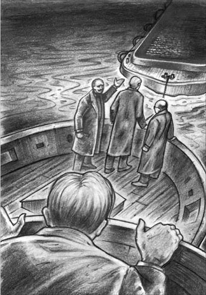
The three passengers were standing at the back of the tug, watching the barge moving smoothly behind us.
Now the tug moved northwards, aiming for the channel between Langeoog and Baltrum. We were taking the open sea route, as the tide was falling, and it would be impossible to cross the sandbanks in the dark. Once through the channel, I expected us to turn west towards Norderney, but we carried on out to sea, where the water was a good deal rougher. After a while, the tug began to turn, and made one complete circle, though for what purpose I had no idea. The behaviour of the three passengers was also puzzling. They spent all the time watching, and clearly talking about, the barge behind us. Finally, we turned west again, in the direction of Memmert.
And then at last I understood. This was the way to England too. What I had just witnessed was a rehearsal for an invasion. This trial trip was designed to show how tugs could pull seagoing barges carrying soldiers and their weapons – hundreds of barges, carrying thousands of soldiers. This army would gather, not in some great naval harbour, but on an unimportant piece of coast, hidden behind the sandbanks of the Frisian Islands, where nobody would expect an invasion to start from. The barges would be brought down the canals to seven tiny harbours, and when the tide was right, the tugs would pull them through the channels that led between the islands to the open sea. And on to England – and its undefended east coast.
It was such a daring and clever plan that I found it difficult to believe. But I knew it must be true. Davies and I had never seriously considered that Dollmann and his friends had a plan of attack; we had only ever thought of it as defensive action. But bit by bit, the pieces of the puzzle fell into place, and I had solved the riddle at last.
I was still lost in these thoughts when the tug passed Norderney town and turned south. We were taking the narrow channel to Norddeich, where the passengers would probably land, and I would very likely be discovered in my hiding-place. Somehow I had to escape. Only a kilometre away was the Dulcibella and Davies, if he were safe. What would he do in this situation? The tide was falling, and we were crossing the sandbanks...
A wild idea came to me. I looked quickly at my watch, by the light of a match. It was 2.30 a.m. Low tide would be about 5 o'clock. The tug would be aground until about 7.30 a.m, not in any danger, but safely out of the way.
Grimm was below, in the cabin with his three passengers, while one of the crew was at the helm, with his back to me. Grimm and I were about the same height, and he had left his coat at the top of the ladder down to the cabin. I climbed very quietly out of the dinghy, put on his coat, and pulled my hat down to hide my face. Confidently I walked up to the helmsman, and touched him on the arm, as I had seen Grimm do earlier. The man, used to such commands from his silent captain, moved obediently away.
My plan developed beautifully. I took the helm, and kept the tug in the channel, between the buoys, until I felt the moment had come. Then I suddenly turned the wheel as hard as I could to the right. The seaman shouted a warning, but he was too late. The tug crashed into the sandbank at full speed, and the wheel went stiff in my hands. We were aground.
I think it is safe to say that I was the only one on board who behaved with calmness and common sense in the minutes that followed. Grimm was on deck in seconds, shouting angrily at his crew, and the passengers soon joined in. The wind, darkness and rain made the confusion worse. Unnoticed, I threw off Grimm's coat, and ran back to the dinghy. On the way, I bumped into the unknown passenger – 'he who insists'. He thought I was one of Grimm's men, and offered to help me. I saw his face close up, and realized immediately that my earlier suspicion was correct. The leader of the country can, after all, insist on what he likes.
The passenger and I cut the dinghy's ropes, and the boat hit the water with a loud splash. 'Lower the boat,' I heard Grimm shout, but we had already done it. I jumped in and took up the oars. The wind and tide caught me, and carried me rapidly northwards. I was very quickly out of sight of the barge, and began to row towards Norderney, with the tide. There was an outburst of shouting which soon died away. They would be held tight on the sandbank for at least five hours.
motherly adj. loving and kind like a good mother 慈母般的
barge n. a large boat with a flat bottom, used on rivers and canals 驳船
rehearsal n. a time when all the people involved in a big event practice it together before it happens 预演；演习
invasion n. when the army of one country enters another country by force, in order to take control of it 入侵；侵略
helmsman n. someone who guides a ship or boat 舵手
obediently adv. readily to do what one is told to 顺从地
close up to move closer 靠近；靠拢
suspicion n. a feeling you have that something is true 感觉
谜底
9
谜底
“再见，兄弟。”渡轮缓缓开出诺德奈时，戴维斯喊道。他向我挥手道别，看上去疲惫又沮丧，而我还处在半睡半醒的状态。是戴维斯慈母般叫醒我，给我做了吃的，又把我的行李打好包。我们没时间讨论进一步的计划，只是约好26号——也就是那几个德国人碰面的后一天，我会回来找他。
博默也在渡轮上，密切注意着我的举动。不过我还是设法甩开他几分钟，读了读戴维斯临别时塞到我手里的字条。
他们的碰面：可能在诺登，那里有火车站，25号潮水将在10点半到11点之间达到最高。不可能在诺德代希，因为那里有渡轮走的深水航道，不必担心潮汐是否合适。
其他线索：拖船、引航员、水深、铁路、埃森斯和七个什么东西——有没有可能是北海海岸的一个水陆防御计划？
海：从博尔库姆到旺格岛，共有七座岛屿（梅默尔特岛太小，不算在内），每个岛屿都有自己的航道与大陆连通。寻找这些航道需要拖船和引航员。
陆：距海岸几公里处就有便捷的铁路线，连接内陆的各个村庄。埃森斯是这个防御计划的中心吗？
可我太困了，无法完全集中精力。到达诺德代希后，我们改乘火车，车上大部分时间我都在睡觉，中间只醒来两次。第一次是在埃姆登，我和博默要那里换乘，那时我听到有人在跟他谈论运河。第二次是在莱尔站，博默叫醒我，跟我道别。“到了伦敦别忘了开展你的调查！”他一脸假笑，喊道。
然而，随着这一天渐渐过去，我的头脑清醒起来，能把事情想得更清楚了。今天是23号，也就是说我要在极短的时间内到达伦敦，调查多尔曼，再赶回来追踪25号的碰面。我开始设想在伦敦会是什么情形——试图让政府部门的人相信我调查的事情很急迫。噢，那先生你留个条子吧？或者下周再来见某某先生？人都是谨慎的，不到迫不得已都不愿透露消息。海军就更别提了！
另一个念头。我离开这段时间，戴维斯的安全有多大保证？他们会不会提出带他去梅默尔特岛，让他穿上潜水服，然后切断氧气——停，别胡思乱想了！但我已经想通，回伦敦没有意义，我会改为坐到阿姆斯特丹就下车，改换装束、身份，接着找张舒服的床睡一晚，然后就回弗里斯兰寻找更多线索，争取解开谜题。
在阿姆斯特丹，我给上司拍了这样一份电报：
抱歉未能去诺德奈取信。望再准假。请写信至巴黎卢浮宫宾馆。
我找了家舒适的宾馆，在一张豪华的大床上睡了10小时。第二天一大早，我就穿着从二手衣店买来的旧水手服，坐着火车原路返回了。现在我就是一个普通的英国水手，去埃姆登准备出海。
我乘火车穿过荷兰和德国的乡间，脑子里一整天都在苦苦思索已经获得的线索。戴维斯可能是对的，他们25号会在诺登碰面，因为他们在梅默尔特岛说过“潮汐正合适”，而那里的涨潮时间是在10点半到11点之间。我的列车时刻表也写着有一班7点43分发车的“夜间火车”，会在诺登东部的每个村庄都停靠。我决定在他们碰面之前赶到诺登，而目前要做的就是尽可能地了解弗里斯兰，尤其是埃森斯。
我在埃姆登买了张去埃森斯的票。火车驶过一条大运河，我意识到这就是埃姆斯-亚德运河。这条运河连通着埃姆登和威廉港，水深足够炮艇航行。我又看了看这片区域的地图。贝瑟西尔再往内陆六公里就是埃森斯，一条小河从贝瑟西尔流出，一直注入埃森斯-维特蒙德运河。我突然记起在梅默尔特岛听到的数字，它们也许是运河的水深！我又想起在埃姆登火车站听到的对话，可以肯定博默是个运河工程师。我是不是终于抓到重点了？
借着夜晚的灯光，我逛了逛埃森斯，得到好几个有趣的发现。这里正在进行大规模的工程，把贝瑟西尔的小河改造成运河。我还看到一座低矮、狭长的建筑，跟我在梅默尔特岛看到的那些制造驳船的厂房很像。我爬进一艘驳船仔细察看，发现这些船的设计不仅适合运河，还适合在波涛汹涌的海面航行。
此时已是午夜，周围空无一人，我决定在驳船中过夜。冰凉的木头甲板让我回想起宾馆舒适的床，可一个间谍哪能指望每晚都过奢侈的生活？至少这里比“达尔茜贝拉”号宽敞呢。
第二天就是25号。早上我又研究了一下地图，意识到我还有很多东西需要弄清楚。这一带沿海还有六座埃森斯这样的村庄，六个贝瑟西尔这样的港口，也许这些正好对应着博默说的A到G七个字母。七个港口各有一条航道穿过沙洲、连接公海，又各有一条小河或运河连通内陆的一座村庄。
一整天我都在弗里斯兰四处逛。这次我假装是个德国水手，通过跟当地人聊天了解更多信息。只有一次我被人怀疑是英国人，但就是那一次，差点给我造成大麻烦。所幸我想办法把那人灌醉，然后从他身边溜掉了。但这件事让我更加意识到自己的危险处境，之后我就避开大路和村庄，在田野和小河之间穿行。我发现所到之处都在大兴土木，所有的小河差不多都变成了运河，还建造了大量结实耐用的驳船。
晚上7点15分，筋疲力尽的我到达了诺登车站，我期待的会面可能在这里上演。我高兴地发现冯布吕宁已经在那里了。他没注意到穿着肮脏水手服的我。我听到他要买一张去埃森斯的票，便也跟着买了一张，我俩都上了7点43分的火车。开车前最后一刻，我看到两位我不认识的乘客跳了上来。一声汽笛响了之后，火车缓缓驶出车站。
在埃森斯车站，我先下了车，在暗处等那三个人经过。他们一起走过来，往远离海岸、靠近运河的方向走去。我没有跟着他们，因为我确信他们很快就会出现在贝瑟西尔，便快步朝港口走去。我在那里忐忑不安地等了一小时，看着停靠的驳船，怀疑自己是否猜错了他们的计划。
突然，我看到一艘亮着灯的拖船驶进这个小港口。掌舵的是格林，船上有两名水手。他让水手看船，自己跳到岸上，消失在去往运河的方向。
我知道我得想办法上船——这是跟踪他们的唯一方式——可是怎么上船呢？所幸两个水手似乎对灯火通明的小酒馆很感兴趣，他们讨论了几句，就把拖船拴在岸边，急匆匆朝酒馆走去。我没有错过这个机会。他们刚走，我就跑过泥地，爬上拖船。我能找到的唯一藏身之处，就是用粗绳子拴在船舷外侧的小艇。我太激动了，根本来不及去想如果被抓到会怎样，便小心地藏在了小艇底部。
不久，两个水手又赶了回来，后面跟着格林。引擎发动了，拖船缓缓驶离原处，接着又停了下来。我听到有脚步声从运河那边传来，有三个人跳上了甲板。船又开动了，这一次拖船似乎在拖着什么。是什么呢？当然是驳船了！我之前就在港口看到一艘驳船，装了半船的砖，停在拖船附近。（这时，我想起在梅默尔特岛听到的话：“就一只，装半满。”）
我小心翼翼地从小艇边缘向外望，意识到船正在向西行驶，去诺德奈，也有可能是去梅默尔特岛。我的处境很安全，不过前提是他们用不到小艇。格林负责掌舵，三位乘客则站在拖船尾部，望着后方平稳前进的驳船。我认出了高个子、蓄胡须的冯布吕宁，还有矮胖的博默。第三个人肯定就是“坚持要来”的那一个，我觉得我差不多能猜到他是谁。
此时拖船向北航行，准备进入朗格奥格和贝尔特鲁姆之间的一条航道。我们走的是公海航线，因为这时是落潮，在黑暗中没法穿过沙洲地带。走完这条航道，我以为该往西去诺德奈了，结果船继续驶向公海，而且这一带海浪要大得多。过了一会儿拖船开始转弯，绕了整整一圈。我猜不透这样走的目的，而三位乘客的举动也让人不解。他们全程一直望着后方的驳船，显然也一直在谈论它。最后拖船转向西，朝梅默尔特岛驶去。
这时我终于懂了。这也是去英国的路啊。我目睹的是一次侵略预演。这次试航是为了演示拖船如何牵引载着士兵和武器的海上驳船——几百艘驳船，载着成千上万名士兵。这支军队的集结地不是哪个重要的军港，而是隐藏在弗里西亚群岛沙洲后面的一段无足轻重的海岸。没有人能想到侵略会从这里发起。拖船会沿着运河把驳船拖进七个小港口，等潮汐合适的时候，再拖着它们穿过连接岛屿和公海的航道，驶向英国——驶向其未加防守的东海岸。
这个计划太大胆、太聪明了，简直令人难以置信。但我知道一定确有其事。我和戴维斯之前以为这只是一个防御计划，万万想不到多尔曼一伙人竟然酝酿着一个进攻计划。不过拼图还是一块一块复了位，谜团终于被我解开了。
拖船经过诺德奈镇，掉头向南，这时我还沉浸在思绪中。船正沿着狭窄的航道向诺德代希驶去，乘客们大概会在那里下船，而我的藏身之处也很可能被发现。我得想办法逃走。如果戴维斯还安全的话，他和“达尔茜贝拉”号应该就在一公里外。在这种情况下他会怎么做呢？潮水正在退去，我们正在沙洲间穿行……
我脑海里闪过一个疯狂的念头。我借着一根火柴的光亮，迅速看了看表。此时是凌晨2点半，退潮时间是5点前后。拖船应该会搁浅到7点半左右，这期间不会有任何危险，也完全妨碍不到我。
格林和他的三位乘客在下面船舱里，一个船员背朝我在开船。格林和我身高差不多，他的外套又落在了通往船舱的梯子顶端。我蹑手蹑脚爬出小艇，穿上格林的外套，把帽子压低挡住脸，镇定自若地走到舵手身边，碰了碰他的胳膊——之前我见过格林这样做。舵手习惯了沉默寡言的船长这样指示手下，便乖乖走开了。
计划进行得天衣无缝。我握住舵轮，让拖船一直在浮标之间的航道里航行，直到觉得时机到了，便用尽力气把舵轮猛地向右扳。水手大喊着要我当心，可是已经太迟了。拖船全速撞到了沙洲上，舵轮在我手中停了下来。船搁浅了。
我想可以肯定地说，在接下来的几分钟里，我是船上唯一一个保持冷静和理智的人。格林一转眼就上了甲板，对着船员生气地大吼，乘客们也很快跟了上来。由于当时是黑夜，又刮着风，下着雨，场面更加混乱了。我趁人不注意，脱下了格林的外套，跑回小艇旁。中途我撞到了那个不认识的乘客——“坚持要来”的那个人。他以为我是格林的手下，要帮我的忙。我看着他的脸贴近我，立刻意识到我之前的猜测是正确的。一个国家的领袖，终究是可以坚持他想做的任何事。
我和那位乘客割断了小艇的绳索，小艇落在海面，发出一声巨响。“放下小艇”，我听见格林在喊，可我们早就抢先一步了。我跳进小艇，拿起桨，乘着风和海潮迅速向北漂去。很快就看不到驳船的影子了。我开始顺着潮水往诺德奈划。身后响起一阵喊声，很快又归于沉寂。他们会被死死地困在沙洲上至少五个小时。
10．The last voyage
10
The last voyage
It was impossible to miss the way, and, helped by the wind and tide, I made short work of the journey. But where was the Dulcibella? Not where I had left her! I pulled feverishly into the harbour, and there – thank God! – I found her.
'Who's that?' came from below, as I stepped on board.
'Shh! It's me!'
We were both pleased to see each other again, and Davies asked anxiously, 'Are you all right, old man?'
'Yes, are you? Quick, a match! What's the time?'
'Ten past three. My God, Carruthers, what have you been doing?' I hadn't washed or shaved for two days, and must have looked quite wild.
'It's the invasion of England! Is Dollmann at the house?' I asked urgently.
'Invasion?' Davies repeated in astonishment.
'Is Dollmann at the house?'
'Yes, but what—'
'How soon can we leave harbour?' I interrupted.
'Ten minutes. First light is about five o'clock. Where are we going?'
'Holland, or England.'
'Are they invading it now?' said Davies calmly.
'No, only rehearsing,' I laughed, wildly. 'We have an hour and a half. We must go and tell Dollmann we know his secret, and get them both aboard. It's now or never!'
While Davies was dressing, I told him what I had discovered. 'Are you being watched?' I asked.
'I think so, by the men from the Kormoran. But they're not here now. Grimm came and collected them in a tug.'
'Don't worry, they're all safely aground on the sands – Grimm, Böhme, von Brüning, and "he who insists".'
Once more we hurried through the little town, walking on air, I think; I remember no tiredness.
'I was right,' said Davies. 'The channels are the key to the whole thing. We have no North Sea warships, no protection at all for our coastline. They'd land on one of the quiet, deserted sandy beaches on the east coast, far away from Chatham, our only eastern naval port.'
'It seems rather a wild idea,' I remarked.
'Wild? So is any invasion. But it's planned in such detail! No other country could organize it as well as that. I really think it could succeed.'
We arrived at the house, and rang the door bell loudly. An upstairs window opened, and I called up, 'A message from Commander von Brüning – urgent.' The window closed, and soon after, Dollmann opened the front door.
'Good morning, Captain X,' I said in English. 'Stop, we're friends, you fool!' I added, as the door was nearly shut in our faces. It opened slowly again, and we walked in.
'Silence!' he whispered. His hands were trembling, and his face looked hot, but there was a smile – what a smile! – on his lips. 'Well?' he said in English, when we were all in the living-room.
'There's no time to lose,' I said. 'We sail for Holland, or perhaps England, at five o'clock at the latest, and we want the pleasure of your company. We promise you immunity, on certain conditions, which we'll discuss later. I'm afraid we only have room to take Miss Clara and yourself.'
His smile froze, and then suddenly he laughed. 'You fools,' he said. 'I thought I'd finished with you. My God, I'll give you five minutes to get away, or else I'll have you locked up as spies! What do you suspect me of?'
'You're a traitor, working for the Germans,' said Davies. We were both discouraged by this unexpected attack.
'A tra—? You stupid, crazy young fools! I'm in British service! You're destroying the work of years – and so close to success!'
For a second, Davies and I looked at each other in horror. He lied, he must be lying – but how could we make sure?
'Very well,' I said, after a moment, 'we'll leave, as it seems we've made a mistake – silence, Davies! – but we should tell you we know everything. I was taking notes at Memmert the other afternoon.'
'At Memmert? In the fog? Impossible!'
'Difficult, but not impossible. I heard you reporting on Chatham, and Böhme talking about the German A to G plan of defence. Of course, all that doesn't matter, now we know you're on the right side!'
'Not so loud!' Dollmann was lost in thought for a moment, and then said, 'I congratulate you, gentlemen, on your discoveries, but I shall have to have you arrested, or I myself may be suspected—'
'I'm sorry,' I interrupted, 'we're short of time. At Memmert I heard your friends make an appointment behind your back, and I took the trouble to attend the meeting. It was a rehearsal for the invasion of England. No, don't touch that gun. You see, you can arrest us if you like, but the secret's in safe hands. My London lawyer has the facts.'
'You lie!' He was right, but he could not know it. He fell into an armchair, and seemed to grow older and greyer as we watched.
'What did you say about immunity, and Clara?' he whispered.
'We're friends – we're friends!' burst out Davies, with a break in his voice. 'We want to help you both.' Through a sudden mist over my eyes, I saw him walk over and lay his hand on Dollmann's shoulder. 'Come with us. Wake her, tell her. It'll be too late soon.'
'Tell her? I can't tell her. You tell her, boy.' His shoulders were bent and his head was in his hands.
Davies turned to me. 'You go up, Carruthers,' he said.
'Look at me! I'll frighten her like this. You must.'
'Well, I – I don't like to.'
'Nonsense, man! We'll both go then.' We left Dollmann in his misery, and went quietly upstairs. A bedroom door was half open, and in the doorway stood a white figure.
'What is it, father?' she called in a whisper.
I pushed Davies forward, but he would not say anything.
'Don't be afraid,' I said. 'It's Carruthers, and – Davies. May we come in, just for a moment?' I gently opened the door wider, while she stepped back and put one hand to her lovely throat. 'Please come downstairs,' I continued. 'We're going to take you and your father to England in the Dulcibella, now, at once.'
She had heard me, but her eyes were on Davies. 'I understand not,' she said, with such puzzled sadness that I found it hard to look at her.
'Clara!' said Davies, 'will you not trust us?'
I heard a little gasp from her. Suddenly she was in his arms, crying like a tired child, her little white feet between his great clumsy sea-boots, and her rose-brown face on his rough seaman's jacket.
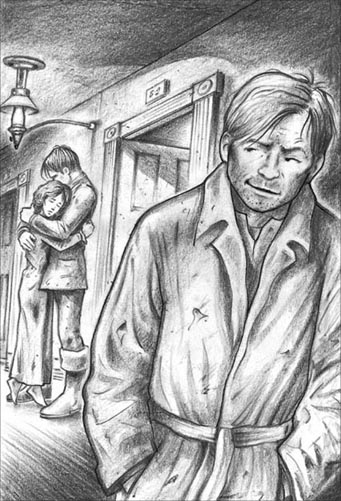
Suddenly Clara was in his arms, crying like a tired child.
I went downstairs, to find Dollmann putting some papers on the fire. He did not seem to have noticed that the fire was almost out. 'You must be ready in half an hour,' I said, quietly picking up his gun, which lay on the table.
'Take her to England, you two boys. I think I'll stay.'
'Nonsense, she won't go without you.'
Half an hour later, the four of us were hurrying away from the house and down to the harbour. Luckily, Frau Dollmann was away in Hamburg, so there had been no question of her coming with us.
Once on the Dulcibella, we hid Clara and her father in the cabin, and sailed straight for the open sea. Nobody seemed to notice our departure. Far away to the south, I thought I saw two dark shapes on the sandbanks. Whether I saw them or not, I knew they were there, and that by the time they were able to move, we would be safe in Holland.
Davies decided to take the route between the islands and the shore, and asked Clara to help him on deck. She was far more useful than I could have been, in my exhausted condition. When I went down to the cabin to fetch the Dutch chart, as we were getting close to the first of the Dutch islands, Dollmann sat up. He seemed in a dream. 'Where are we?' he cried. There was a strange look in his eyes, which I didn't understand at the time, but remembered later.
'Off the coast of Holland,' I replied. I fell asleep soon afterwards, with the yacht rolling and the waves splashing all around me. I did not witness what happened next, since by the time I had heard Davies's cry and climbed up on deck, it was all over. This is his account of the event.
'X came up on deck soon after you went below. He offered to take the helm and show me a short cut, but I knew that one, so I didn't accept his offer. He said nothing, and sat behind us, safe enough, then, to my surprise, he began to talk very sensibly to me about the channel and the buoys and so on. Well, we came to a difficult bit, where I had to concentrate on the helm and the chart, and Clara was busy with the sails, and well – I happened to look round, and he was gone. I think the last thing I heard him say was something about a "short cut" again. He must have slipped over quietly. He had a thick coat and his heavy sea-boots on.'
We sailed about the area for a time, but we never found him.
That evening, we arrived at a small Dutch fishing village on the mainland. We put some fishermen in charge of the yacht, and returned to London by road, rail, and ferry, to lay our information before the government with all possible urgency.
I returned to work at the Foreign Office, where in spite of my best efforts to persuade him, my boss never really believed that I had not received his second letter.
And Davies and Clara? Well, I think I can safely say that Clara has no wish to return to her adopted country, and Davies no longer has any wish to look for adventure on the sands of the North Sea.
immunity n. the state or right of being protected from particular laws or unpleasant things 免除；豁免
adopted adj. (country) having been chosen to live in （国家）被选择居住的
最后一次航行
10
最后一次航行
迷路是不可能的，借助风和海潮，我很快就结束了这段航程。可“达尔茜贝拉”号呢？不在我离开时停的地方了！我急躁不安地向港口划去，在那儿——感谢上帝！——我找到它了。
“谁呀？”我踏上甲板，下面船舱里有人问道。
“嘘！是我！”
我们都很高兴再见到对方。戴维斯急切地问：“你还好吗，兄弟？”
“我很好，你呢？快，划根火柴！几点了？”
“3点10分。天哪，卡拉瑟斯，你到底干什么去了？”我已经两天没洗脸、没刮胡子了，看起来肯定跟个野人似的。
“他们要侵略英国！多尔曼在家吗？”我急切地问。
“侵略？”戴维斯重复道，他大吃一惊。
“多尔曼在家吗？”
“在，可是你刚才说——”
“船多快能离港？”我打断了他。
“10分钟。5点左右天亮。我们要去哪儿？”
“荷兰，或者英国。”
“他们现在就要侵略英国了吗？”戴维斯镇静地问。
“不，只是演习。”我大笑起来，“咱们有一个半小时时间。必须得去告诉多尔曼咱们知道他的秘密了，把他们父女俩都带上船。机不可失，时不再来！”
戴维斯穿衣服时，我把我的发现告诉了他。“有人监视你吗？”我问。
“我觉得有，是‘鸬鹚’号上的人。不过他们现在不在。格林之前来过，用拖船把他们接走了。”
“别担心，他们全都稳稳地搁浅在沙洲上了——格林、博默、冯布吕宁，还有‘坚持要来’的那个人。”
我们又一次急匆匆穿过诺德奈小镇，脚步都有些飘飘然。我记得自己一点都不累。
“我说对了。”戴维斯说，“那些航道是整件事情的关键。英国在北海上没有军舰，海岸线毫无防护。他们将在东海岸某片寂静无人的沙滩登陆，远离东部唯一的军港——查塔姆。”
“这主意听上去挺疯狂的。”我说。
“疯狂？任何侵略都是疯狂的。可这次侵略计划得太周详了！其他国家都不可能组织得这么好。我真觉得他们有获胜的可能。”
我们到达多尔曼家，大声按响门铃。楼上一扇窗子打开了，我便朝上大喊：“冯布吕宁艇长的口信！十万火急！”窗子关上了，很快，多尔曼打开了前门。
“早上好，X上校。”我用英语说。“停，别犯傻，我们是朋友！”眼看多尔曼要把我们关在外面，我便补了一句。门又慢慢地打开了，我们走了进去。
“别出声！”多尔曼低语道。他的双手颤抖着，脸上的表情很紧张，嘴唇上却还挂着微笑——那笑容真可怕！“怎么啦？”我们都进了会客厅，他用英语问道。
“没时间了。”我说，“我们最晚5点起航去荷兰，也有可能回英国。我们希望你能一起走。我们保证不起诉你，条件稍后再谈。恐怕地方只够你和克拉拉小姐的。”
他的笑容凝固了，接着又突然笑起来。“傻瓜，”他说，“我还以为早就甩开你们了。上帝啊，我给你们五分钟时间离开，不然就把你们当间谍抓起来！你们怀疑我什么？”
“你是个叛国者，为德国人工作。”戴维斯说。我俩都有点被多尔曼出其不意的斥责吓到了。
“叛——你们两个年轻人太傻、太不着调了！我是为英国工作的！你们会把多年的成果毁掉的——我还差一点儿就成功了！”
我和戴维斯惊恐地对视了片刻。他在撒谎，他一定在撒谎—可我们怎么证实呢？
“很好，”我定了定神，然后说道，“看来我们犯了个错误，我们这就走——别说话，戴维斯！——不过事先告诉你，我们什么都知道了。那天下午你们在梅默尔特岛说的话，我都记下来了。”
“梅默尔特岛？大雾那天？不可能！”
“的确很困难，但并非不可能。我听到你汇报了查塔姆的情况，博默谈到了德国的A到G防守计划。当然，现在我们知道了你站在正确一方，这一切都不重要了。”
“小点声！”多尔曼沉思片刻，接着说道，“我要祝贺你们有了这些发现，先生们，不过我还是要逮捕你们，不然我自己会受到怀疑——”
“不好意思，”我打断他，“我们没时间了。在梅默尔特岛，我听见你的朋友们背着你约定了一次会面，我费了一番周折也参加了。那是一次侵略英国的演习。不，别碰那支枪。好啦，你愿意就逮捕我们好了，反正秘密已经牢牢掌握在我们手中了。我在伦敦的律师已经知道真相了。”
“你说谎！”他说对了，我是在说谎，但他又怎么可能知道。多尔曼瘫坐在一把扶手椅上，似乎就在我们眼前一下子变老了。
“你们刚才说不指控我，还要帮助克拉拉，是吗？”他低声问道。
“我们是朋友——我们是朋友！”戴维斯大喊道，嗓音都变了，“我们想帮你们父女俩。”透过突然模糊的双眼，我看到他走过去，把手放在多尔曼肩上。“跟我们走吧。叫醒她，跟她说。再耽搁就来不及了。”
“跟她说？我没法跟她说。你去说吧，孩子。”他弓着肩，双手捂住脸。
戴维斯转向我。“你上楼去，卡拉瑟斯。”他说。
“看看我这副样子！会吓到她的。你得去。”
“唉，我——我不想去。”
“说什么傻话，兄弟！咱们一起去。”我们留下痛苦的多尔曼，轻轻走上楼去。一间卧室的门半掩着，门口站着一个白色的身影。
“怎么回事，父亲？”她低声喊道。
我把戴维斯往前推，可他什么话都不肯说。
“别害怕，”我说，“我是卡拉瑟斯，还有——戴维斯。我们能进去一下吗？”我轻轻把门推开一些，她后退一步，一只手掩住漂亮的脖子。“请下楼。”我接着说道，“我们要带你和你父亲乘着‘达尔茜贝拉’号去英国，现在，马上。”
她听到了我的话，眼睛却看着戴维斯。“我不明白。”她说。那语调充满了疑惑和忧伤，让我都不忍心看她。
“克拉拉！”戴维斯说，“你难道不信任我们吗？”
我听到克拉拉轻声喘了口气。突然，她扑到他怀里，哭得像个疲惫的孩子。她白色的小脚夹在他笨重的航海靴之间，棕红的脸颊靠在他粗糙的水手夹克上。
我走下楼去，发现多尔曼正把一些文件放在火上，似乎没注意到火都快熄灭了。“你半小时内必须准备好。”我一边说，一边默默把他放在桌上的枪拿起来。
“你们两个小伙子带她去英国吧。我想我还是留下。”
“别傻了，她不会丢下你自己走的。”
半小时后，我们四人急匆匆地离开多尔曼的府邸，往港口走去。幸运的是多尔曼夫人此时正在汉堡，不用担心她要跟我们一起走。
一上游艇，我们就让克拉拉和她父亲躲进船舱，然后直接朝公海驶去。似乎没有人注意到我们离开。在南边很远处的沙洲上，我想我看到了两个黑影。无论是不是真的看到了，我都知道他们肯定在那儿，等他们能动的时候，我们已经安全到达荷兰了。
戴维斯决定走群岛和海岸之间的航线，并叫克拉拉去甲板上帮忙。在我筋疲力尽的状态下，她可比我管用多了。快到第一座荷属岛屿时，我下到船舱去拿荷兰海图。这时，多尔曼站起身来，像梦游一般。“到哪儿了？”他喊道。他的目光有几分奇怪，我当时没弄懂是什么意思，后来却清楚地记了起来。
“在荷兰沿海呢。”我回答。游艇在海面上摇曳，浪花四溅，我很快进入了梦乡。我没看到接下来发生的事情，因为当我听到戴维斯的喊声，爬上甲板时，一切已经结束了。下面是戴维斯的叙述：
“你刚下去，X上校就来到甲板上。他提议由他掌舵，带我走一条近路，但我认识那条路，就没用他帮忙。他什么都没说，就安安稳稳地坐在我们身后。让我惊讶的是，他竟然有板有眼地跟我谈起航道、浮标什么的。唔，接下去的一段比较难走，我得集中精神掌舵，看海图，克拉拉忙着控制船帆，然后，唉—我碰巧回了一下头，他已经不见了。我想我听到他说的最后一句话还是关于什么‘近路’的。他一定是悄悄滑下船的，还穿着厚外套和重重的航海靴。”
我们在那片海域绕了一会儿，却没能找到他。
那天晚上，我们到达荷兰大陆上的一座小渔村。我们请了几位渔民照看游艇，接着乘马车、火车和轮渡赶回伦敦，把我们的情报尽快告知了政府。
我回外交部上班了。不管我如何想尽办法向上司解释，他都不相信我没收到他后一封信。
戴维斯和克拉拉呢？唔，我可以肯定地说，克拉拉再也不想回到她从小长大的国家，而戴维斯也再没有去北海沙洲探险的念头了。
A WARNING FOR THE FUTURE
A WARNING FOR THE FUTURE
Lying on my writing table, and partly damaged by fire, there is an interesting document. It is a copy of a secret plan for the invasion of England by Germany. Although it is unsigned, it was taken by Carruthers from the fireplace of Dollmann's house at Norderney, so it is quite clear who wrote it. I shall describe what it says, especially for those people who still think Britain is in no danger of being attacked by Germany.
It was an extremely clever plan, based on perfect organization and perfect secrecy. Special barges would be built near seven small coastal harbours, which are hidden from view by the Frisian Islands. At high tide and under cover of darkness, these barges, carrying German soldiers, would be pulled by tugs through the channels between the sandbanks. They would then cross the North Sea and attack the east coast of Britain.
The writer of the document explains the plan in detail. All the work and preparation would be organized by four men (the writer, von Brüning, Böhme, and Grimm), and these four men alone would know the whole plan. Britain would in no way be prepared for such an attack, and the writer is sure that Germany has a good chance of succeeding if the plan is carried out.
I tremble, when I read this document, at what could have happened, if our two adventurers had not discovered the truth in time. I beg you all to be aware of the dangers beyond our shores. Although, for the moment, this particular plan has come to nothing, who knows what might happen in future?
警钟长鸣
警钟长鸣
我的写字台上躺着一份烧得残缺不全的文件，内容很有意思。这是一份德国秘密侵略英国的计划书。尽管文件没有署名，但它是卡拉瑟斯从多尔曼家的壁炉里拿出来的，作者是谁也就不言而喻了。让我来描述一下文件内容，尤其说给那些依然认为英国不会被德国侵略的人听。
这个计划设计得极其精妙，而且组织周密，绝对不为人知。先在七座沿海的小港口建造特殊的驳船，这些港口被弗里西亚群岛挡住，从海上是看不到的。在涨潮的夜晚，拖船将牵引着载满德国士兵的驳船，驶过沙洲间的航道，穿过北海，袭击英国东海岸。
文件的作者详细阐述了这个计划。一切准备和执行工作都由四个人组织（作者、冯布吕宁、博默和格林），也只有这四个人知道全部计划。英国不可能对这样的袭击有所防备，所以作者认为如果计划能够顺利实施，德国胜利的可能性很大。
读着这份文件，我不寒而栗。要不是两位勇士及时发现真相，后果不堪设想。我恳请所有人警惕英国面临的海上威胁。尽管目前这个计划成了泡影，谁又知道将来会发生什么呢？
ACTIVITIES：Before Reading
ACTIVITIES
Before Reading
1 Read the story introduction of the book, and the back cover. How much do you know now about The Riddle of the Sands? For each sentence, circle Y (Yes) or N (No).
1) The Frisian Islands are in the Baltic Sea. Y/N
2) Carruthers gets the holiday he expects. Y/N
3) Carruthers agrees to join Davies because he is interested in the mystery. Y/N
4) Arthur Davies enjoys sailing in difficult conditions. Y/N
5) When the two friends start investigating the mystery, the Germans take an interest in them. Y/N
6) When this story was written, relations between Germany and Britain were getting better all the time. Y/N
7) Sailors who like good weather and easy sailing should stay away from the Frisian Islands. Y/N
2 What do you think might happen in the story? Choose from these ideas (as many as you like).
1) One of the friends will...
fall in love / turn out to be a spy / get shot / kill someone.
2) Carruthers and Davies will uncover a plot to...
kill the British Prime Minister / attack London from the sea / invade Britain.
3) Carruthers and Davies will...
capture a spy / wreck a German boat / stop an invasion / warn the British government.
ACTIVITIES：While Reading
ACTIVITIES
While Reading
1 Read Chapters 1 to 3, then answer these questions.
1) Why was Carruthers pleased to get Davies' invitation?
2) What made Davies and Carruthers uneasy about each other when they first met?
3) What did Carruthers think of the Dulcibella when he first arrived?
4) How did Carruthers' opinion of Davies change?
5) What mystery did Carruthers discover when he looked in the Dulcibella's logbook?
6) What reasons did Carruthers give for not wanting to go to the North Sea?
7) What worries did Bartels have about Davies?
8) Why did Davies get into difficulties when he reached the Telte channel?
9) How did Davies know that Dollmann was English?
10) Why was the coast from Borkum to the Elbe so important to Germany?
2 Before you read Chapter 4, can you guess the answer to this question?
What warning will Commander von Brüning give the friends when they meet?
1) To leave the Frisian Islands
2) To stay away from Dollmann
3) To be careful of local people
4) To be careful of thick fog
3 Read Chapters 4 to 6. Who said these words, and to whom? Who or what were they talking about?
1) 'It's a pity you missed her.'
2) 'The only way to understand a place like this is to explore it at low tide.'
3) 'They're all seamen and know how important it is.'
4) 'We must be very careful what we say to him.'
5) 'He couldn't have seen what happened. Anyway, it didn't matter.'
6) 'He has the most terrifying adventures, and makes them sound perfectly ordinary.'
7) 'Everyone on these islands knows all about it.'
8) 'You know how your friend feels. I wouldn't encourage him, if I were you.'
9) 'I find it very difficult to talk about things like this.'
10) 'There are no clues to be got from her.'
11) 'I know he'll be very sorry, but you can always trust him to do the right thing.'
12) 'Perhaps he thought I'd recognized him. That explains everything!'
4 Before you read Chapter 7, can you guess what happens next? Choose some of these ideas.
1) Carruthers and Davies row to Memmert in the fog.
2) Carruthers and Davies meet Dollmann in Norderney town.
3) Davies receives a letter from Clara.
4) Von Brüning tries to arrest Carruthers and Davies as spies.
5) Carruthers and Davies are invited to dinner at Dollmann's house the next evening.
5 Read Chapters 7 to 9, and complete Carruthers' account of his adventures with the names of people and places given below. Some names will be needed more than once.
Amsterdam London Clara von Brüning Grimm Bensersiel Memmert Davies Dollmann the Kaiser Esens Norderney Böhme Frau Dollmann
Outside the office on _____, I listened to the four men discussing a report. After _____ and _____ left, _____ and _____ then talked secretly about a plan for the 25th. Later, _____ and I rowed back to the Dulcibella, where we found _____, _____, and_____ on board, looking at our things. We had dinner with them that night at _____'s house; _____ and _____ were also there.
Next day I left _____ with _____ and travelled to _____, where I sent a telegram to _____. Then I went by train to _____, and saw barges being built. On the night of the 25th I went to _____, and hid on a tug. _____ was steering, and _____ and _____ were there too, with a third man, whom I recognized as _____. When I realized the trip was a rehearsal for an invasion, I took a risk. I pretended to be _____, took the helm, and steered the tug into a sandbank. In the confusion I took the tug's dinghy, rowed to _____, and rejoined _____ on the Dulcibella.
6 What will happen in Chapter 10? Choose some of these ideas.
1) Dollmann refuses to leave / agrees to leave / is taken back to England by force / never reaches England / shoots Davies.
2) Clara stays in Norderney / leaves with Carruthers and Davies / goes back to England / never speaks to Davies again.
3) Davies is injured in a fight with Dollmann / takes Clara to England / lets Dollmann go for Clara's sake.
ACTIVITIES：After Reading
ACTIVITIES
After Reading
1 Perhaps this is what some of the characters in the story were thinking. Which characters are they, and what is about to happen in the story at this moment?
1) 'Still no answer. That's good – they must both have gone to the town. Now, better put that mast light out first. Then I'll go down into the cabin and start having a look round in there...'
2) 'I'm so glad he came back. After that awful weather the day we sailed to Cuxhaven I thought I'd never see him again. I do like this dear little cabin. So untidy! And all those books! That one looks... Oh no, oh no!'
3) 'Some holiday this is going to be – a miserable little boat, nobody to do the work, hardly enough room down there to stand up. I think I'll go outside – at least it's not raining.'
4) 'It's lucky I'm the same size as Grimm. That sailor didn't suspect anything, I'm sure of it. Just a little bit further, I think, then I'll make my move. Increase the speed... and... now!'
5) 'It's all over now, I suppose. Better try and burn as many of these papers as I can. They'll be downstairs again in a minute. I wish they'd just take her and go. But I know she won't leave unless I do... so I'll have to go with them...'
6) 'They might be quite harmless. Just here for the duck-shooting. But I wonder... And I don't like the sound of this Dollmann business. I think I'll have a quiet word in the friend's ear...'
2 Complete this conversation between von Brüning and Dollmann about the attempt to kill Davies. Use as many words as you like.
VON BRÜNING: Well, Herr Dollmann, I had a most interesting conversation in Bensersiel the other day with a friend of yours.
DOLLMANN: __________
VON BRÜNING: Herr Davies – the young Englishman from the Dulcibella. You look surprised, Dollmann.
DOLLMANN: __________
VON BRÜNING:I don't think you were expecting to see him ever again! In fact, wasn't that your plan?
DOLLMANN: __________
VON BRÜNING:So you left him to be smashed to pieces on the Hohenhörn? You fool! Don't you see how bad it looks?
DOLLMANN: __________
VON BRÜNING:But he's still exploring round the islands – and now he's got a friend with him, a friend from the Foreign Office! That's a real worry. What are they up to?
DOLLMANN: __________
VON BRÜNING:Herr Dollmann, the last thing in the world I intend to do is leave you to deal with these Englishmen by yourself. From now on, you don't go near them without me.
3 At dinner at the Dollmann's house, people are saying one thing and almost certainly thinking another. What do you think the characters are really thinking as they say these words?
1) Böhme: 'I'm going to Bremen, so we'll travel as far as Leer together. How pleasant!'
2) Von Brüning: 'I'm not very closely involved in all this. Try the company director. Rescue me, Herr Dollmann!'
3) Von Brüning: 'I thought I was being most helpful to you, giving advice about duck-shooting and so on.'
4) Dollmann: 'Come, let's hear it. Your wild ideas are amusing.'
5) Carruthers: 'We were a little surprised to find you all on board the Dulcibella, taking such a deep interest in a small boat! I think you wanted to inspect us!'
6) Dollmann: 'Gentlemen, we must come to an agreement with this dangerous young man. What can we offer Herr Carruthers?'
7) Carruthers: 'Ah, you don't read English easily, perhaps. I expect Herr Böhme does.'
4 What are your opinions on the characters and ideas in the story? Discuss these questions.
1) The story does not tell us why Dollmann decided to jump off the Dulcibella. How many possible reasons can you think of to explain his decision?
2) The story does not tell us if Clara knew about her father's spying activities. If she had known he was a traitor, should she have done something about it? Or is duty to your family more important than duty to your country?
3) Was Dollmann right to jump, in your opinion? Or should he have gone back to England to be tried in the law courts as a traitor? Were Davies and Carruthers to blame for not ensuring that Dollmann stayed alive to face his trial?
4) Has spying always existed as an activity, in any society? Is it acceptable to spy for your own country, against another country? Is it less acceptable to spy for another country, against your own country?
5) The Riddle of the Sands is said to be the first great modern spy story. How have spy stories changed since 1903?
5 Here is Davies, thinking about the holiday that he and Carruthers are going to have. Fill each gap with one suitable word to complete his thoughts.
Oh dear! Perhaps inviting Carruthers wasn't _____ a good idea after all. He _____ to have a huge amount of _____ with him. How on earth are _____ going to get that big case _____ the Dulcibella? And what kind of _____ is he expecting? I wish I _____ given this more thought before I _____ to him. After all, we don't _____ know each other very well. What _____ we can't stand each other? A _____ yacht is no place to be_____ somebody you dislike.
Then there's the _____ with Dollmann. What should I tell_____ about that? Perhaps I should come _____ with it straight away – but no, _____ to wait until he's got used _____ things. I suppose I could try _____ persuade him to come to the _____ Islands first, and then see what _____ when we get there. But I _____ want to have to lie to _____ – if there's one thing I'm not _____ at, it's lying, and I'll just _____ everything worse.
Well, it's too late _____ second thoughts now, I suppose – he's _____.
6 Here are some new titles for the ten chapters of The Riddle of the Sands. Decide which title goes with which chapter, and write the chapter number next to the title.
___ Exploring the sands
___ Talking to the commander
___ Listening at a window
___ First signs of a mystery
___ A letter from Germany
___ Carruthers goes exploring
___ Passengers for England
___ Dining with danger
___ A visit from Clara
___ The tale of a dangerous voyage
封底
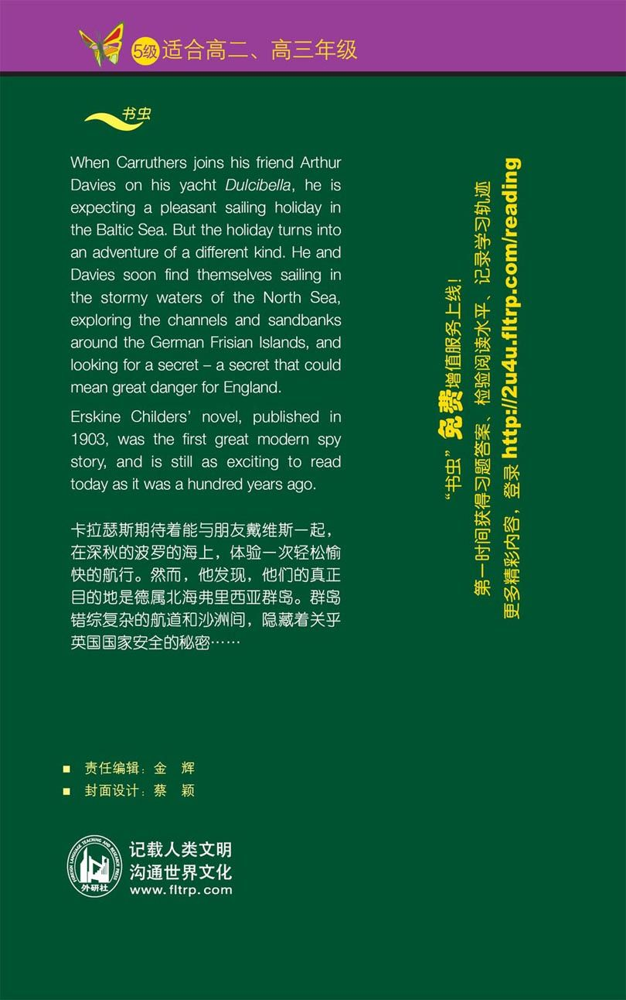